Topic 5: Relative Motion - Problem Sets
A skater $B$ is being towed by a vehicle $A$ on a perfectly smooth horizontal plane, where we define an inertial reference frame $Oxy$. The vehicle is moving along a circumference of radius $a$ and center at $O$ with constant angular velocity $\omega$. The skater is attached to the vehicle by a bar without mass and constant length $l = a$. Initially, the vehicle is located at $(a, 0)$ and the skater is at rest at $(2a, 0)$. Defining a rotating reference frame $Ox_1y_1$ with origin at $O$ and axis $Ox_1$ along $OA$, and calling $\psi$ the angle between the axis $Ox_1$ and the bar $AB$, determine:
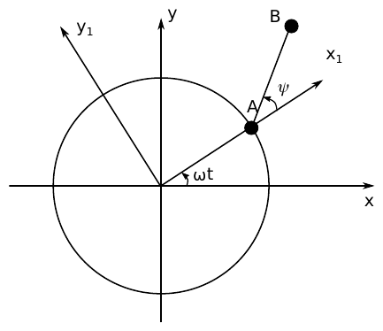
- (a)The relative acceleration of the skater with respect to $Ox_1y_1$ as a function of $\psi$ and its time derivatives.
- (b)The centripetal and Coriolis acceleration terms also as a function of $\psi$ and its time derivatives.
- (c)Reduce the evolution of $\psi$ to integrals of the form $\int [\ldots]\,d\psi = \int [\ldots]\,dt$ (consider that $\dot{\psi}^2 = \int 2\dot{\psi}\ddot{\psi}\,dt$).
- (d)Determine the tension on the bar.
- (e)If the rigid bar is substituted by a string which cannot bear compression, determine if/when the string will become loose.
Worked Solution (4-Phase Methodology) [ Click to Expand ]
Physical Statement, Hypotheses & Parameters
- Physical system: the vehicle $A$ moves on the circle of radius $a$ centred at $O$ with constant angular rate $\omega$. The skater $B$ (mass $m$) is joined to $A$ by a massless rigid bar of length $l = a$ and slides on a smooth horizontal plane.
- Why a rotating frame. In the frame $Ox_1y_1$ that turns with the line $OA$, the vehicle is at rest at $(a, 0)$, so the skater moves on a fixed circle of radius $a$ around $A$: one coordinate $\psi$ describes the motion and the constraint is fixed in that frame. The price is that $Ox_1y_1$ is non-inertial, so we must add the inertia forces of Notes Eq. 4.62 to Newton's law (Notes Eq. 4.63).
- Hypotheses:
- $Oxy$ is inertial; the plane is smooth (its reaction is vertical and cancels the weight, so neither enters the horizontal dynamics).
- The bar is massless, so the force it exerts on $B$ is directed along the bar: $-T\,\mathbf{u}_{AB}$, with $T \gt 0$ meaning tension.
- $\omega$ is constant.
- Degrees of freedom: $B$ moves in the plane (2 coordinates) with one constraint $|AB| = a$: 1 DOF, the angle $\psi$.
- Initial conditions: $A$ at $(a, 0)$ and $B$ at rest at $(2a, 0)$, so $\psi(0) = 0$ and $\mathbf{v}_0^B(0) = \mathbf{0}$ (this gives $\dot{\psi}(0)$ in part (c)).
| Symbol | Meaning | SI unit |
|---|---|---|
| $m$ | mass of the skater $B$ | kg |
| $a$ | radius of the vehicle's circle and bar length | m |
| $\omega$ | angular rate of the vehicle (constant) | rad/s |
| $\psi$ | angle from $Ox_1$ to the bar $AB$ | rad |
| $T$ | tension of the bar (positive when pulling $B$ toward $A$) | N |
Reference Frames, Vector Bases & Rotation Matrices
- Frames. $S_0 = Oxy = \{O; \mathbf{i}_0, \mathbf{j}_0, \mathbf{k}_0\}$ (inertial) and $S_1 = Ox_1y_1 = \{O; \mathbf{i}_1, \mathbf{j}_1, \mathbf{k}_1\}$ with $\mathbf{i}_1$ along $OA$. The origin of $S_1$ is $O$ (it plays the role of the generic origin "$A$" of Notes Ch. 3, which here is the fixed point $O$; the letter $A$ is kept for the vehicle as in the statement) and the particle is $P \equiv B$.
- Attitude. The vehicle starts on $Ox$ and turns counter-clockwise, so the angle from $\mathbf{i}_0$ to $\mathbf{i}_1$ is $\omega t$. The columns of $[{}_0R_1]$ are the components of $\mathbf{i}_1, \mathbf{j}_1, \mathbf{k}_1$ in $\mathcal{B}_0$: $$ [{}_0R_1] = \begin{pmatrix} \cos\omega t & -\sin\omega t & 0 \\ \sin\omega t & \cos\omega t & 0 \\ 0 & 0 & 1 \end{pmatrix} $$Checks: $\det[{}_0R_1] = \cos^2\omega t + \sin^2\omega t = 1$; the columns are unit vectors ($\cos^2\omega t + \sin^2\omega t = 1$) and mutually orthogonal ($-\cos\omega t\sin\omega t + \sin\omega t\cos\omega t = 0$), so $[{}_0R_1][{}_0R_1]^T = I$.
- Motion of $S_1$. Simple rotation about $\mathbf{k}_0 = \mathbf{k}_1$ (Slide 16): $$ \boldsymbol{\omega}_{10} = \omega\,\mathbf{k}_1, \qquad \boldsymbol{\alpha}_{10} = \left.\frac{d\boldsymbol{\omega}_{10}}{dt}\right|_0 = \dot{\omega}\,\mathbf{k}_1 = \mathbf{0}, \qquad \mathbf{r}_0^O = \mathbf{v}_0^O = \mathbf{a}_0^O = \mathbf{0} $$
- Bar basis. $\mathbf{u}_{AB} = \cos\psi\,\mathbf{i}_1 + \sin\psi\,\mathbf{j}_1$ (from $A$ to $B$) and $\mathbf{u}_\perp = \mathbf{k}_1\times\mathbf{u}_{AB} = -\sin\psi\,\mathbf{i}_1 + \cos\psi\,\mathbf{j}_1$. Their matrix $\begin{pmatrix}\cos\psi & -\sin\psi\\ \sin\psi & \cos\psi\end{pmatrix}$ (completed with $\mathbf{k}_1$) is again a simple rotation, with $\det = 1$ and $RR^T = I$.
Step-by-Step Mathematical Deduction
(a) Relative acceleration $\mathbf{a}_1^B$
Relative position (Notes Eq. 3.16 with $\mathbf{r}_0^O = \mathbf{0}$): $\mathbf{r}_1^B = \mathbf{OA} + \mathbf{AB}$,
Relative velocity, with the chain rule $\frac{d}{dt}\cos\psi = -\sin\psi\,\dot{\psi}$ and $\frac{d}{dt}\sin\psi = \cos\psi\,\dot{\psi}$:
Relative acceleration, with the product rule $\frac{d}{dt}(\dot{\psi}\sin\psi) = \ddot{\psi}\sin\psi + \dot{\psi}^2\cos\psi$ and $\frac{d}{dt}(\dot{\psi}\cos\psi) = \ddot{\psi}\cos\psi - \dot{\psi}^2\sin\psi$:
(the last form follows by grouping the $\ddot{\psi}$ and $\dot{\psi}^2$ terms: circular motion of radius $a$ about $A$, tangential plus normal part).
(b) Centripetal and Coriolis terms
Cross products used: $\mathbf{k}_1\times\mathbf{i}_1 = \mathbf{j}_1$, $\mathbf{k}_1\times\mathbf{j}_1 = -\mathbf{i}_1$.
Centripetal term.
It equals $-\omega^2\mathbf{r}_\perp$ with $\mathbf{r}_\perp = \mathbf{r}_1^B$ because $\mathbf{r}_1^B$ lies in the plane normal to $\boldsymbol{\omega}_{10}$ (Slide 30).
Coriolis term.
Both agree with the official key (Problems.pdf, p. 72), where the centripetal term is called "centrifugal acceleration".
Absolute acceleration (Notes Eq. 3.27):
(c) Equation of motion and reduction to quadratures
The unknown $T$ disappears if we project on $\mathbf{u}_\perp$, the only direction along which the bar exerts no force.
Projections on $\mathbf{u}_\perp = -\sin\psi\,\mathbf{i}_1 + \cos\psi\,\mathbf{j}_1$:
- $m\mathbf{a}_1^B\cdot\mathbf{u}_\perp = ma\ddot{\psi}$ (from the grouped form of part (a), since $\mathbf{u}_{AB}\cdot\mathbf{u}_\perp = 0$);
- $-T\,\mathbf{u}_{AB}\cdot\mathbf{u}_\perp = 0$ and $\mathbf{F}_{COR}\cdot\mathbf{u}_\perp = 0$;
- $\mathbf{F}_C\cdot\mathbf{u}_\perp = ma\omega^2\left[-(1+\cos\psi)\sin\psi + \sin\psi\cos\psi\right] = -ma\omega^2\sin\psi$.
In $S_1$ the skater behaves as a pendulum of length $a$ hanging from $A$: about $A$ the centrifugal force $m\omega^2(\mathbf{OA} + \mathbf{AB})$ has the same moment as the uniform field $m a\omega^2\,\mathbf{i}_1$ (because $\mathbf{AB}\times\mathbf{AB} = \mathbf{0}$), so the "effective gravity" has strength $a\omega^2$ and points along $+\mathbf{i}_1$.
First integral (hint of the statement). Multiply by $2\dot{\psi}$. By the chain rule $\frac{d}{dt}\left(\dot{\psi}^2\right) = 2\dot{\psi}\ddot{\psi}$ and $\frac{d}{dt}\cos\psi = -\sin\psi\,\dot{\psi}$, so
Integrate from $0$ to $t$ and apply Barrow's rule $[F]_0^t = F(t) - F(0)$:
Initial rate. By Notes Eq. 3.26, $\mathbf{v}_0^B = \mathbf{v}_0^O + \mathbf{v}_1^B + \boldsymbol{\omega}_{10}\times\mathbf{r}_1^B$. At $t = 0$: $\psi = 0$, $\mathbf{r}_1^B = 2a\,\mathbf{i}_1$, $\mathbf{v}_1^B = a\dot{\psi}(0)\,\mathbf{j}_1$, $\boldsymbol{\omega}_{10}\times\mathbf{r}_1^B = 2a\omega\,\mathbf{j}_1$, and $\mathbf{v}_0^B = \mathbf{0}$:
Hence, with $1 + \cos\psi = 2\cos^2(\psi/2)$,
For $-\pi \lt \psi \lt \pi$ the factor $\cos(\psi/2) \gt 0$, so $\dot{\psi}$ cannot vanish nor change sign there; $\dot{\psi}(0) = -2\omega \lt 0$ selects
which agrees with the official key (Problems.pdf, p. 72).
Energy check in $S_1$ (Slides 29–30). The origin is fixed and $\boldsymbol{\omega}_{10}$ is constant, so $\mathbf{F}_C$ has the potential $V_1 = -\tfrac12 m\omega^2 r_\perp^2$, $\mathbf{F}_{COR}$ does no work, and the bar force does no work in $S_1$ ($-T\mathbf{u}_{AB}\cdot a\dot{\psi}\mathbf{u}_\perp = 0$). With $r_\perp^2 = a^2\left[(1+\cos\psi)^2 + \sin^2\psi\right] = 2a^2(1+\cos\psi)$:
which gives again $\dot{\psi}^2 = 2\omega^2(1 + \cos\psi)$.
Quadrature. Separate variables in $\frac{d\psi}{dt} = -2\omega\cos\frac{\psi}{2}$:
The left integral is elementary. Substitute $w = \psi'/2$, $d\psi' = 2\,dw$, limits $0 \to \psi/2$; the antiderivative of $\sec w$ is $\ln|\sec w + \tan w|$ (its derivative is $\frac{\sec w\tan w + \sec^2 w}{\sec w + \tan w} = \sec w$). By Barrow's rule:
so $\psi(t)$ is given implicitly by $\sec\frac{\psi}{2} + \tan\frac{\psi}{2} = e^{-\omega t}$; as $t\to\infty$, $\psi \to -\pi$, i.e. $B$ tends to the centre $O$ ($\mathbf{r}_1^B \to \mathbf{0}$) without ever reaching it.
(d) Tension on the bar
Projections on $\mathbf{u}_{AB} = \cos\psi\,\mathbf{i}_1 + \sin\psi\,\mathbf{j}_1$:
- $m\mathbf{a}_1^B\cdot\mathbf{u}_{AB} = -ma\dot{\psi}^2$;
- $\mathbf{F}_C\cdot\mathbf{u}_{AB} = ma\omega^2\left[(1+\cos\psi)\cos\psi + \sin^2\psi\right] = ma\omega^2(1 + \cos\psi)$;
- $\mathbf{F}_{COR}\cdot\mathbf{u}_{AB} = 2ma\omega\dot{\psi}$.
Substitute the first integral with $c \equiv \cos(\psi/2)$: $\dot{\psi}^2 = 4\omega^2c^2$, $\dot{\psi} = -2\omega c$, $1 + \cos\psi = 2c^2$:
which agrees with the official key (Problems.pdf, p. 72). At $t = 0$: $T(0) = 2ma\omega^2 \gt 0$.
(e) Does a string become loose?
As $\psi$ decreases from $0$ toward $-\pi$, $c = \cos(\psi/2)$ decreases monotonically from $1$ toward $0$. The factor $c$ stays positive, and $3c - 2$ changes sign at $c = 2/3$:
(official key: $\psi = -2\arccos(2/3)$). When: at $\psi/2 = -\arccos(2/3)$, $\sec(\psi/2) = 3/2$ and $\tan(\psi/2) = -\sqrt{1 - 4/9}\big/(2/3) = -\sqrt5/2$, so from part (c)
So yes: the string goes slack after about $0.96/\omega$ seconds, when the bar has turned $96.4^\circ$ clockwise from $Ox_1$.
Physical Interpretation & Dimensional Verification
- Reading in $S_1$. The rotating observer sees $B$ as a pendulum of length $a$ hung from $A$ in an effective field of strength $a\omega^2$ pointing away from $O$ (the centrifugal force), whose "lowest" point is $\psi = 0$. The skater starts there with relative speed $2a\omega$, which is exactly the separatrix energy ($E_1^B = 0$): it creeps toward the "inverted" position $\psi = -\pi$ (where $B$ would sit at $O$) in infinite time.
- Why $T$ drops. The Coriolis force $2ma\omega\dot{\psi}\,\mathbf{u}_{AB}$ points toward $A$ when $\dot{\psi} \lt 0$, and the centrifugal pull along the bar, $ma\omega^2(1+\cos\psi)$, shrinks as $B$ swings in; when the required centripetal force $ma\dot{\psi}^2$ is supplied by these inertia forces alone the bar is unloaded ($T = 0$).
- Limit $\omega \to 0$: $\dot{\psi} \to 0$, $T \to 0$ (nothing moves).
- Dimensions: $[\mathbf{a}_1^B] = [a\ddot{\psi}] = [a\dot{\psi}^2] = \text{m}\,\text{s}^{-2}$; $[\omega^2 a] = [\omega\dot{\psi}a] = \text{m}\,\text{s}^{-2}$; $[T] = [ma\omega^2] = \text{kg}\,\text{m}\,\text{s}^{-2} = \text{N}$; $[\omega t] = 1$.
- Verification (sympy,
verify_P07.py): the inertial double derivative of $[{}_0R_1]\{\mathbf{r}_1^B\}$ equals $\mathbf{a}_1^B - \omega^2\mathbf{r}_1^B - 2a\omega\dot{\psi}\mathbf{u}_{AB}$; the EOM, $\dot{\psi}(0) = -2\omega$, $dE_1^B/dt = 0$ along the EOM, the tension and $\psi_{\text{loose}}$ are reproduced; an RK4 integration with $\omega = 1$ reaches $\cos(\psi/2) = 2/3$ at $t = 0.9625$ s, matching $\ln\frac{3+\sqrt5}{2} = 0.9624$. - Cross-check with Topic 1. The Topic 1 solution of this problem (inertial approach) gives the same EOM, tension and loosening angle; no discrepancy with the official key.
In "2001: A Space Odyssey" an idea to obtain artificial gravity in a spaceship was presented. It consists of a cylinder rotating at constant angular velocity around its axis. The astronauts would live in the inner surface of the cylinder and the centrifugal force would act as artificial gravity.
- (a)If the cylinder has radius $R$, determine the angular velocity $\omega$ required to obtain a given level of artificial gravity $g$. Consider $R = 10$ m and $g = 9.81$ m/s$^2$ for a particular case.
- (b)An astronaut runs inside the surface of the cylinder with a constant speed $u$ with respect to the cylinder. Determine the artificial gravity that she feels (neglect the height of the astronaut $h$ with respect to the radius of the cylinder $R$, $h \ll R$).
- (c)What is the condition for her to feel no artificial gravity at all?
Worked Solution (4-Phase Methodology) [ Click to Expand ]
Physical Statement, Hypotheses & Parameters
- Physical system: a cylindrical hull of radius $R$ spins at constant rate $\omega$ about its axis in deep space. An astronaut $P$ of mass $m$ stands on, or runs along, the inner surface.
- Why the hull frame. The astronaut lives in the hull: the floor, her running speed $u$ and what she "feels" are all defined with respect to the cylinder. In the frame $S_1$ attached to the hull the floor is fixed, and the only price is to add the inertia forces of Notes Eq. 4.62. The centrifugal force is exactly the "artificial gravity" of the statement; the Coriolis force is what changes when she runs.
- Hypotheses:
- No external gravity (deep space); the only actual force on the astronaut is the total force $\mathbf{N}$ of the floor on her feet (normal reaction plus any friction; part (b) shows that, for uniform running, $\mathbf{N}$ comes out purely radial).
- $h \ll R$: she is a point particle on the surface, at distance $R$ from the axis.
- $\omega$ constant; the axis point $O$ is fixed in an inertial frame $S_0$.
- Artificial gravity felt. A body feels as "weight" the force it has to receive from the floor. We define the artificial gravity as $g_{\text{art}} = |\mathbf{N}|/m$, the reading per unit mass of a scale under her feet, directed opposite to $\mathbf{N}$ (i.e. away from the axis, "down" for her).
- Degrees of freedom: on the cylinder surface, 2 coordinates: azimuth $\varphi$ in $S_1$ and axial position $z$. Running at constant speed $u$ means $u_\theta = R\dot{\varphi}$ and $u_z = \dot{z}$ constant with $u_\theta^2 + u_z^2 = u^2$.
| Symbol | Meaning | SI unit |
|---|---|---|
| $R$ | radius of the cylinder ($10$ m in the numerical case) | m |
| $\omega$ | spin rate of the cylinder | rad/s |
| $g$ | target artificial gravity ($9.81$ m/s$^2$) | m/s$^2$ |
| $u$ | running speed relative to the cylinder | m/s |
| $u_\theta,\ u_z$ | circumferential (positive in the sense of rotation) and axial components of the running velocity | m/s |
| $m$ | mass of the astronaut | kg |
Reference Frames, Vector Bases & Rotation Matrices
- Frames. $S_0 = \{O; \mathbf{i}_0, \mathbf{j}_0, \mathbf{k}_0\}$ inertial, with $O$ on the axis and $\mathbf{k}_0$ along it; $S_1 = \{O; \mathbf{i}_1, \mathbf{j}_1, \mathbf{k}_1\}$ fixed to the hull, $\mathbf{k}_1 = \mathbf{k}_0$. The origin of $S_1$ is the fixed point $O$. $$ [{}_0R_1] = \begin{pmatrix} \cos\omega t & -\sin\omega t & 0 \\ \sin\omega t & \cos\omega t & 0 \\ 0 & 0 & 1 \end{pmatrix}, \qquad \det[{}_0R_1] = \cos^2\omega t + \sin^2\omega t = 1, \qquad [{}_0R_1][{}_0R_1]^T = I $$(the columns are unit vectors and mutually orthogonal).
- Motion of $S_1$: $\boldsymbol{\omega}_{10} = \omega\mathbf{k}_1$, $\boldsymbol{\alpha}_{10} = \mathbf{0}$ ($\omega$ constant and $\mathbf{k}_1$ fixed), $\mathbf{r}_0^O = \mathbf{v}_0^O = \mathbf{a}_0^O = \mathbf{0}$.
- Local cylindrical basis of the astronaut (in $S_1$). With $\varphi$ her azimuth measured in $S_1$: $\mathbf{e}_r = \cos\varphi\,\mathbf{i}_1 + \sin\varphi\,\mathbf{j}_1$ (from the axis to the floor), $\mathbf{e}_\theta = -\sin\varphi\,\mathbf{i}_1 + \cos\varphi\,\mathbf{j}_1$ (sense of rotation), $\mathbf{k}_1$. The matrix with these columns is a simple rotation by $\varphi$: $\det = 1$, $RR^T = I$. Derivatives in $S_1$ (chain rule): $\left.\frac{d\mathbf{e}_r}{dt}\right|_1 = \dot{\varphi}\,\mathbf{e}_\theta$, $\left.\frac{d\mathbf{e}_\theta}{dt}\right|_1 = -\dot{\varphi}\,\mathbf{e}_r$.
- Inertia forces (Notes Eq. 4.62): $\mathbf{F}_A = \mathbf{0}$, $\mathbf{F}_E = \mathbf{0}$; $\mathbf{F}_C = m\omega^2\mathbf{r}_\perp$ (Slide 30); $\mathbf{F}_{COR} = -2m\boldsymbol{\omega}_{10}\times\mathbf{v}_1^P$ (Slide 31).
Step-by-Step Mathematical Deduction
(a) Spin rate for a given artificial gravity
Position $\mathbf{r}_1^P = R\,\mathbf{e}_r$ (plus an axial part along $\mathbf{k}_1$ that does not contribute to $\mathbf{r}_\perp$), so $\mathbf{r}_\perp = R\,\mathbf{e}_r$ and
using $\mathbf{k}_1\times\mathbf{e}_r = \mathbf{e}_\theta$ and $\mathbf{k}_1\times\mathbf{e}_\theta = -\mathbf{e}_r$. Then
The floor pushes her toward the axis, and she feels a "gravity" $\omega^2R$ pointing away from the axis. Setting $g_{\text{art}} = g$:
Numbers ($R = 10$ m, $g = 9.81$ m/s$^2$):
and the floor moves at $\omega R \approx 9.90$ m/s in $S_0$.
(b) Artificial gravity felt while running
Relative kinematics. $\mathbf{r}_1^P = R\,\mathbf{e}_r + z\,\mathbf{k}_1$ with $R\dot{\varphi} = u_\theta$, $\dot{z} = u_z$ (both constant). Differentiating in $S_1$ with the product and chain rules:
(the relative path is a helix of radius $R$; in $S_1$ she needs a centripetal acceleration $u_\theta^2/R$).
Inertia forces. $\mathbf{r}_\perp = R\,\mathbf{e}_r$ as before, so $\mathbf{F}_C = m\omega^2R\,\mathbf{e}_r$. For the Coriolis force, $\mathbf{k}_1\times\mathbf{e}_\theta = -\mathbf{e}_r$ and $\mathbf{k}_1\times\mathbf{k}_1 = \mathbf{0}$:
Newton's law in $S_1$ (Notes Eq. 4.63), $m\mathbf{a}_1^P = \mathbf{N} + \mathbf{F}_C + \mathbf{F}_{COR}$:
The reaction is purely radial, so no friction is needed to keep the motion uniform. The artificial gravity she feels is
using $\omega^2R = g$ from part (a). Particular cases:
- running around the hull in the sense of rotation ($u_\theta = +u$): $g_{\text{art}} = (\omega R + u)^2/R \gt g$ (she feels heavier);
- running against the rotation ($u_\theta = -u$): $g_{\text{art}} = (\omega R - u)^2/R \lt g$ for $u \lt 2\omega R$ (she feels lighter);
- running along the axis ($u_\theta = 0$, $u_z = u$): $g_{\text{art}} = g$ (the Coriolis force vanishes because $\mathbf{v}_1^P \parallel \boldsymbol{\omega}_{10}$).
Numbers ($R = 10$ m, $\omega = 0.9905$ rad/s): at $u = 2$ m/s, $g_{\text{art}} = 14.17$ m/s$^2$ ($1.44\,g$) with the rotation and $6.25$ m/s$^2$ ($0.64\,g$) against it; at $u = 5$ m/s, $22.2$ m/s$^2$ ($2.26\,g$) and $2.41$ m/s$^2$ ($0.25\,g$).
(c) Condition for no artificial gravity
She must run around the hull, against the rotation, at the speed of the floor $\omega R$ ($\approx 9.90$ m/s for the numerical case, a sprinter's speed). Then, by Notes Eq. 3.26, her absolute velocity is $\mathbf{v}_0^P = \mathbf{v}_1^P + \boldsymbol{\omega}_{10}\times\mathbf{r}_1^P = -\omega R\,\mathbf{e}_\theta + \omega R\,\mathbf{e}_\theta = \mathbf{0}$: she is at rest in inertial space, floating, while the floor slides under her feet. With an axial component ($u_z \neq 0$) and $u = \omega R$ the condition cannot be met, since then $|u_\theta| \lt \omega R$.
Physical Interpretation & Dimensional Verification
- Inertial reading (cross-check). In $S_0$ the astronaut moves on a circle (or helix) of radius $R$ with tangential speed $\omega R + u_\theta$, so the floor must supply the centripetal force $m(\omega R + u_\theta)^2/R$: the same result. The rotating observer splits it into centrifugal $m\omega^2R$, Coriolis $2m\omega u_\theta$ and relative centripetal $mu_\theta^2/R$ parts.
- Limits: $u_\theta \to 0$ gives $g_{\text{art}} = g$; for $|u_\theta| \ll \omega R$, $g_{\text{art}} \approx g \pm 2\omega u$, a correction due to the Coriolis force alone; a larger hull ($R \to \infty$ at fixed $g$) needs a smaller $\omega$ and makes the Coriolis correction $2\omega u = 2u\sqrt{g/R}$ smaller, which is why large habitats are more comfortable.
- Dimensions: $[\sqrt{g/R}] = \sqrt{\text{m}\,\text{s}^{-2}/\text{m}} = \text{s}^{-1}$; $[\omega^2R] = [2\omega u_\theta] = [u_\theta^2/R] = \text{m}\,\text{s}^{-2}$; $[N] = \text{kg}\,\text{m}\,\text{s}^{-2} = \text{N}$.
- Verification (sympy,
verify_P09.py): $\mathbf{a}_1^P$, $\mathbf{F}_C$, $\mathbf{F}_{COR}$ and $\mathbf{N}$ are recomputed; the inertial double derivative of $[{}_0R_1]\{\mathbf{r}_1^P\}$ equals the Notes Eq. 3.27 decomposition and gives the same $\mathbf{N}$; the numbers above are reproduced. - Cross-check with Topic 1. The Topic 1 solution (intrinsic acceleration in $S_0$, circumferential running only) gives $g_{\text{art}} = (\omega R \pm u)^2/R$ and $u = \omega R$ against the rotation: identical. No official key exists for this problem.
A heavy particle is moving along a smooth circumference of radius $R$ and center $O$. One of the diameters of the circumference is along the local vertical, and the circumference is rotating with constant angular velocity $\omega$ about it. The position of the particle with respect to the circumference is described by the angle $\theta$ between the particle and the lowest point of the circumference.
- (a)Discuss the conservation of mechanical energy in the moving reference frame and compute its value.
- (b)Compute the reaction of the circumference in the direction normal to its plane, as a function of $\theta$.
Worked Solution (4-Phase Methodology) [ Click to Expand ]
Physical Statement, Hypotheses & Parameters
- Physical system: a particle $P$ of mass $m$ slides on a smooth circular wire of radius $R$ and centre $O$; the wire turns with constant angular velocity $\omega$ about its vertical diameter. The angle $\theta$ is measured from the lowest point.
- Why the moving frame. In the frame $S_1$ attached to the wire the constraint is a fixed circle, the motion has one coordinate $\theta$, and the reaction has two clear components (in the plane of the wire, normal to it). The question itself asks for the energy "in the moving reference frame", which requires the inertia forces of Notes Eq. 4.62 and their potentials (Slides 29–31).
- Hypotheses:
- $S_0$ fixed to the ground is inertial; $O$ is fixed; uniform gravity $-g\,\mathbf{k}$.
- The wire is smooth: the reaction has no component along the tangent of the wire.
- $\omega$ is constant.
- Degrees of freedom: the particle is constrained to a curve fixed in $S_1$: 1 DOF, $\theta$.
- Unknown reaction: $\mathbf{N} = N_r\,\mathbf{e}_r + N_b\,\mathbf{j}_1$, with $N_r$ in the plane of the wire (along the radius) and $N_b$ normal to that plane.
| Symbol | Meaning | SI unit |
|---|---|---|
| $m$ | mass of the particle | kg |
| $R$ | radius of the circumference | m |
| $\omega$ | spin rate of the circumference (constant) | rad/s |
| $g$ | gravitational acceleration | m/s$^2$ |
| $\theta$ | angle from the lowest point | rad |
| $N_r,\ N_b$ | reaction components (radial in-plane, normal to the plane) | N |
| $\theta_0,\ \dot{\theta}_0$ | initial angle and angular rate in $S_1$ | rad, rad/s |
Reference Frames, Vector Bases & Rotation Matrices
- Frames. $S_0 = \{O; \mathbf{i}_0, \mathbf{j}_0, \mathbf{k}_0\}$ inertial, $\mathbf{k}_0$ upward along the rotation axis. $S_1 = \{O; \mathbf{i}_1, \mathbf{j}_1, \mathbf{k}_1\}$ attached to the wire: $\mathbf{k}_1 = \mathbf{k}_0$, $\mathbf{i}_1$ horizontal in the plane of the wire (on the side where $\theta \gt 0$), $\mathbf{j}_1 = \mathbf{k}_1\times\mathbf{i}_1$ normal to the plane of the wire. With the wire plane at azimuth $\omega t$: $$ [{}_0R_1] = \begin{pmatrix} \cos\omega t & -\sin\omega t & 0 \\ \sin\omega t & \cos\omega t & 0 \\ 0 & 0 & 1 \end{pmatrix}, \qquad \det[{}_0R_1] = 1, \qquad [{}_0R_1][{}_0R_1]^T = I $$
- Motion of $S_1$: $\boldsymbol{\omega}_{10} = \omega\mathbf{k}_1$, $\boldsymbol{\alpha}_{10} = \mathbf{0}$, $\mathbf{r}_0^O = \mathbf{v}_0^O = \mathbf{a}_0^O = \mathbf{0}$.
- Wire basis. $\mathbf{e}_r = \sin\theta\,\mathbf{i}_1 - \cos\theta\,\mathbf{k}_1$ (from $O$ to $P$), $\mathbf{e}_\theta = \cos\theta\,\mathbf{i}_1 + \sin\theta\,\mathbf{k}_1$ (tangent, increasing $\theta$). Since $\mathbf{e}_r\times\mathbf{e}_\theta = (-\cos\theta)(\cos\theta)(\mathbf{k}_1\times\mathbf{i}_1) + (\sin\theta)(\sin\theta)(\mathbf{i}_1\times\mathbf{k}_1) = -\mathbf{j}_1$, the right-handed triad is $\{\mathbf{e}_r, \mathbf{e}_\theta, -\mathbf{j}_1\}$: $$ [{}_1R_w] = \begin{pmatrix} \sin\theta & \cos\theta & 0 \\ 0 & 0 & -1 \\ -\cos\theta & \sin\theta & 0 \end{pmatrix}, \qquad \det[{}_1R_w] = \sin\theta(0\cdot 0 + \sin\theta) - \cos\theta(0\cdot 0 - \cos\theta) = 1 $$and the columns are orthonormal ($\sin^2\theta + \cos^2\theta = 1$, $\sin\theta\cos\theta - \cos\theta\sin\theta = 0$), so $[{}_1R_w][{}_1R_w]^T = I$.
- Derivatives in $S_1$ (chain rule): $\left.\frac{d\mathbf{e}_r}{dt}\right|_1 = \dot{\theta}\left(\cos\theta\,\mathbf{i}_1 + \sin\theta\,\mathbf{k}_1\right) = \dot{\theta}\,\mathbf{e}_\theta$ and $\left.\frac{d\mathbf{e}_\theta}{dt}\right|_1 = \dot{\theta}\left(-\sin\theta\,\mathbf{i}_1 + \cos\theta\,\mathbf{k}_1\right) = -\dot{\theta}\,\mathbf{e}_r$.
Step-by-Step Mathematical Deduction
Relative kinematics and forces in $S_1$
(product rule on $R\dot{\theta}\,\mathbf{e}_\theta$). Forces seen from $S_1$ (Notes Eqs. 4.62–4.63):
- weight $-mg\,\mathbf{k}_1$ and reaction $\mathbf{N} = N_r\,\mathbf{e}_r + N_b\,\mathbf{j}_1$ (actual forces);
- $\mathbf{F}_A = \mathbf{0}$ ($O$ fixed) and $\mathbf{F}_E = \mathbf{0}$ ($\boldsymbol{\alpha}_{10} = \mathbf{0}$);
- centrifugal force: $\mathbf{r}_\perp = R\sin\theta\,\mathbf{i}_1$ (the part of $\mathbf{r}_1^P$ normal to $\mathbf{k}_1$), so (Slide 30)
Component check: $\omega\mathbf{k}_1\times(R\sin\theta\,\mathbf{i}_1 - R\cos\theta\,\mathbf{k}_1) = R\omega\sin\theta\,\mathbf{j}_1$, then $\omega\mathbf{k}_1\times R\omega\sin\theta\,\mathbf{j}_1 = -R\omega^2\sin\theta\,\mathbf{i}_1$, and the minus sign of $\mathbf{F}_C$ gives $+m\omega^2R\sin\theta\,\mathbf{i}_1$;
- Coriolis force, with $\mathbf{k}_1\times\mathbf{i}_1 = \mathbf{j}_1$ and $\mathbf{k}_1\times\mathbf{k}_1 = \mathbf{0}$:
Equation of motion (projection on $\mathbf{e}_\theta$, where $\mathbf{N}$ has no component). Using $\mathbf{k}_1\cdot\mathbf{e}_\theta = \sin\theta$, $\mathbf{i}_1\cdot\mathbf{e}_\theta = \cos\theta$, $\mathbf{j}_1\cdot\mathbf{e}_\theta = 0$:
(a) Mechanical energy in the moving frame
- Justification: $E_1^P$ is conserved when every force that does work in $S_1$ derives from a potential (Slide 29). We check the forces one by one using their power in $S_1$, $\mathbf{F}\cdot\mathbf{v}_1^P$.
- Reaction: $\mathbf{N}\cdot\mathbf{v}_1^P = R\dot{\theta}\left(N_r\,\mathbf{e}_r + N_b\,\mathbf{j}_1\right)\cdot\mathbf{e}_\theta = 0$: the wire is smooth and fixed in $S_1$, so it does no work in $S_1$.
- Coriolis force: $\mathbf{F}_{COR}\cdot\mathbf{v}_1^P = 0$ always (Slide 31); here explicitly $\mathbf{j}_1\cdot\mathbf{e}_\theta = 0$.
- Euler force and origin force: both zero.
- Weight: conservative, $V_g = mgz_1 = -mgR\cos\theta$ (zero at the height of $O$).
- Centrifugal force: $\boldsymbol{\omega}_{10}$ is constant, so it has the potential (Slide 30) $V_1 = -\tfrac12 m\omega^2 r_\perp^2 = -\tfrac12 m\omega^2R^2\sin^2\theta$ (zero on the axis).
Therefore $E_1^P$ is conserved:
its value being fixed by the initial conditions $\theta(0) = \theta_0$, $\dot{\theta}(0) = \dot{\theta}_0$ (the statement gives none, so the constant is left in terms of them).
Check by differentiation (chain rule on each term, then the EOM):
The energy in $S_0$ is not conserved. In $S_0$ the wire moves, and its reaction does work: with $\mathbf{v}_0^P = \mathbf{v}_1^P + \boldsymbol{\omega}_{10}\times\mathbf{r}_1^P = R\dot{\theta}\,\mathbf{e}_\theta + \omega R\sin\theta\,\mathbf{j}_1$ (Notes Eq. 3.26), the power of $\mathbf{N}$ in $S_0$ is $\mathbf{N}\cdot\mathbf{v}_0^P = N_b\,\omega R\sin\theta \neq 0$. This is why the moving frame is the natural one for an energy integral here.
(b) Reaction normal to the plane of the circumference
To express it as a function of $\theta$, solve the energy integral of part (a) for $R\dot{\theta}$:
with the sign of $\dot{\theta}$ (positive when $\theta$ increases) and $E_1^P$ from part (a).
In-plane component (for completeness). Projecting on $\mathbf{e}_r$ ($\mathbf{k}_1\cdot\mathbf{e}_r = -\cos\theta$, $\mathbf{i}_1\cdot\mathbf{e}_r = \sin\theta$):
Physical Interpretation & Dimensional Verification
- Origin of $N_b$. The normal-to-plane reaction is entirely due to the Coriolis force: the wire must push the particle sideways so that it keeps turning with the plane while its distance to the axis changes. It vanishes when $\dot{\theta} = 0$ and when $\cos\theta = 0$ (the particle crosses the horizontal diameter, where $\mathbf{v}_1^P \parallel \boldsymbol{\omega}_{10}$).
- Relative equilibria (extension, from $\ddot{\theta} = 0$ with $\dot{\theta} = 0$): $\sin\theta\left(\omega^2\cos\theta - g/R\right) = 0$, i.e. $\theta = 0$, $\theta = \pi$, and, if $\omega^2R \gt g$, $\cos\theta = g/(\omega^2R)$; at all of them $N_b = 0$.
- Limit $\omega \to 0$: $N_b \to 0$ and $E_1^P \to \tfrac12 mR^2\dot{\theta}^2 - mgR\cos\theta$, the energy of the simple pendulum.
- Dimensions: each term of $E_1^P$ is $\text{kg}\,\text{m}^2\,\text{s}^{-2} = \text{J}$; $[N_b] = [m\omega R\dot{\theta}] = \text{kg}\,\text{s}^{-1}\,\text{m}\,\text{s}^{-1} = \text{N}$; inside the root, $[2E_1^P/m] = [gR] = [\omega^2R^2] = \text{m}^2\,\text{s}^{-2}$.
- Verification (sympy,
verify_P20.py): the inertial double derivative of $[{}_0R_1]\{\mathbf{r}_1^P\}$ equals the Notes Eq. 3.27 decomposition; solving $m\mathbf{a}_0^P = -mg\mathbf{k} + \mathbf{N}$ in $S_0$ returns the same EOM, $N_b$ and $N_r$; $dE_1^P/dt = 0$ along the EOM, while $dE_0^P/dt$ equals the power $N_b\,\omega R\sin\theta$ of the reaction in $S_0$. - Cross-check with Topic 3. The Topic 3 solution gives the same $E'$ (there called the effective energy) and $N_\phi = 2m\omega R\dot{\theta}\cos\theta$. No official key exists for this problem.
On a spinning spherical planet of radius $R$ and gravitational acceleration $g_p$, the bodies weigh twice as much on the poles as on the equator. Determine the duration of the day on that planet.
Worked Solution (4-Phase Methodology) [ Click to Expand ]
Physical Statement, Hypotheses & Parameters
- Physical system: a spherical planet of radius $R$ spins with constant angular velocity $\Omega$ about its polar axis. At its surface the gravitational attraction is $g_p$ per unit mass, directed toward the centre. A body of mass $m$ rests on the ground.
- Why the planet frame. "Weight" is what a scale fixed to the ground reads: it is defined in the frame of the planet, where the body is at rest. In that frame the dynamics reduce to a static balance once the inertia forces (Notes Eq. 4.62) are added; the centrifugal force is what makes the weight depend on latitude.
- Hypotheses:
- The frame $S_0$ with origin at the centre $O$ of the planet and axes fixed with respect to the stars is inertial ($O$ unaccelerated).
- $\Omega$ is constant; the planet is a rigid sphere and $g_p$ is the same everywhere on its surface (spherical mass distribution).
- The apparent weight is the magnitude of the contact force $\mathbf{N}$ the ground (or a scale) exerts on the body at rest.
- Degrees of freedom: the body is at rest in $S_1$: no motion to determine; the unknown is $\Omega$ (and then the day $T_{\text{day}} = 2\pi/\Omega$).
| Symbol | Meaning | SI unit |
|---|---|---|
| $R$ | radius of the planet | m |
| $g_p$ | gravitational acceleration at the surface | m/s$^2$ |
| $\Omega$ | spin rate of the planet | rad/s |
| $\lambda$ | latitude of the body | rad |
| $m$ | mass of the body | kg |
| $T_{\text{day}}$ | duration of the day (one rotation, sidereal) | s |
Reference Frames, Vector Bases & Rotation Matrices
- Frames. $S_0 = \{O; \mathbf{i}_0, \mathbf{j}_0, \mathbf{k}_0\}$ inertial, $\mathbf{k}_0$ along the polar axis; $S_1 = \{O; \mathbf{i}_1, \mathbf{j}_1, \mathbf{k}_1\}$ fixed to the planet, $\mathbf{k}_1 = \mathbf{k}_0$: $$ [{}_0R_1] = \begin{pmatrix} \cos\Omega t & -\sin\Omega t & 0 \\ \sin\Omega t & \cos\Omega t & 0 \\ 0 & 0 & 1 \end{pmatrix}, \qquad \det[{}_0R_1] = \cos^2\Omega t + \sin^2\Omega t = 1, \qquad [{}_0R_1][{}_0R_1]^T = I $$
- Motion of $S_1$: $\boldsymbol{\omega}_{10} = \Omega\mathbf{k}_1$, $\boldsymbol{\alpha}_{10} = \mathbf{0}$, $\mathbf{r}_0^O = \mathbf{v}_0^O = \mathbf{a}_0^O = \mathbf{0}$.
- Position of the body. Choose $\mathbf{i}_1$ in the meridian plane of the body. At latitude $\lambda$: $\mathbf{r}_1^P = R\,\mathbf{e}_r$ with $\mathbf{e}_r = \cos\lambda\,\mathbf{i}_1 + \sin\lambda\,\mathbf{k}_1$; its part normal to the axis is $\mathbf{r}_\perp = R\cos\lambda\,\mathbf{i}_1$.
Step-by-Step Mathematical Deduction
1. Static balance in the planet frame
Actual forces: attraction $-mg_p\,\mathbf{e}_r$ and contact force $\mathbf{N}$. Centrifugal force (Slide 30):
(using $\mathbf{k}_1\times\mathbf{i}_1 = \mathbf{j}_1$, $\mathbf{k}_1\times\mathbf{k}_1 = \mathbf{0}$, $\mathbf{k}_1\times\mathbf{j}_1 = -\mathbf{i}_1$). Then
2. Weight at the pole and at the equator
- Pole ($\lambda = \pi/2$): $\cos\lambda = 0$, $\mathbf{r}_\perp = \mathbf{0}$, no centrifugal force:
- Equator ($\lambda = 0$): $\mathbf{e}_r = \mathbf{i}_1$ and the centrifugal force is radial and outward:
A body can rest on the equator only if $N_{\text{eq}} \ge 0$ (the ground can push but not pull), i.e. $\Omega^2R \le g_p$.
3. Condition $W_{\text{pole}} = 2W_{\text{eq}}$ and length of the day
(this satisfies $\Omega^2R = g_p/2 \le g_p$. The other possibility, $mg_p = 2m(\Omega^2R - g_p)$, would mean $\Omega^2R \gt g_p$: equatorial bodies would fly off, so it is rejected.) The day is the time of one rotation:
Physical Interpretation & Dimensional Verification
- Meaning. The centrifugal force at the equator cancels half of the attraction, so $\Omega^2R = g_p/2$: the planet spins at $1/\sqrt2 \approx 0.71$ of the break-up rate $\sqrt{g_p/R}$ at which equatorial bodies would float ($W_{\text{eq}} = 0$).
- Any latitude (extension, same balance): $|\mathbf{N}|^2 = m^2\left[g_p^2 - \left(2g_p\Omega^2R - \Omega^4R^2\right)\cos^2\lambda\right]$, which with $\Omega^2R = g_p/2$ gives $W(\lambda) = mg_p\sqrt{1 - \tfrac34\cos^2\lambda}$: from $mg_p/2$ at the equator to $mg_p$ at the poles (e.g. $mg_p\sqrt{10}/4 \approx 0.79\,mg_p$ at $45^\circ$). Away from the poles and the equator $\mathbf{N}$ is not radial: the plumb line does not point to the centre.
- Numbers (illustration only, Earth-like $R = 6.371\times 10^6$ m, $g_p = 9.81$ m/s$^2$): $T_{\text{day}} \approx 7.16\times 10^3$ s $\approx 1.99$ h.
- Limit: a slower spin ($\Omega \to 0$) gives $W_{\text{eq}} \to W_{\text{pole}}$; the ratio 2 requires a fast rotation.
- Dimensions: $[\Omega^2R] = \text{s}^{-2}\,\text{m} = [g_p]$; $[T_{\text{day}}] = \sqrt{\text{m}/(\text{m}\,\text{s}^{-2})} = \text{s}$.
- Verification (sympy,
verify_P21.py): the inertial acceleration of a point at rest on the planet, obtained by differentiating $[{}_0R_1]\{\mathbf{r}_1^P\}$ twice, equals $\boldsymbol{\omega}_{10}\times(\boldsymbol{\omega}_{10}\times\mathbf{r}_1^P)$; the balance gives $W_{\text{pole}} = mg_p$, $W_{\text{eq}} = m|g_p - \Omega^2R|$, $\Omega = \sqrt{g_p/(2R)}$ and $T_{\text{day}} = 2\pi\sqrt{2R/g_p}$. - Cross-check with Topic 2. The Topic 2 solution gives the same $\Omega$ and $T_{\text{day}}$. No official key exists for this problem.
A spacecraft $S$ is orbiting a celestial body $F$. The trajectory of the spacecraft with respect to an inertial reference frame $Fxy$ is given by
where $p$ and $e$ are known constants and $\nu(t)$ is a known function of time. The space explorer Ijon Tichy needs to perform some extra-vehicular activities during his Seventh Voyage (from The Star Diaries by Stanislaw Lem). He attaches himself with a massless cord of length $L$ to the spacecraft and goes for a space walk. The cord remains in tension at all times. The astronaut is very light compared to the spacecraft, so his motion does not perturb the motion of the spacecraft. Furthermore, we assume that we can consider him as a point particle of mass $m$. We define a moving reference frame $Sx_1y_1$ as depicted in the figure.
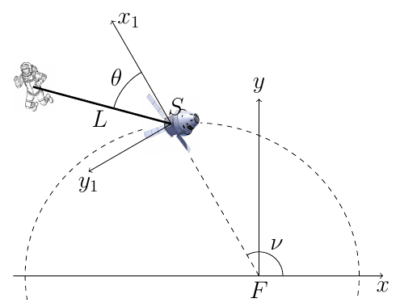
- (a)Determine the acceleration of the spacecraft with respect to $Fxy$ as a function of time.
- (b)Determine the tangent vector to the trajectory of $S$ as a function of time.
- (c)Determine the relative velocity and relative acceleration of Ijon Tichy with respect to $Sx_1y_1$ as a function of $\theta$ and its time derivatives.
- (d)Determine the fictitious forces acting on Ijon Tichy if we analyze the problem with respect to the frame $Sx_1y_1$.
The length $L$ is very small compared to the distance between $F$ and $S$. This allows us to take an approximation: in the following, assume that the gravitational acceleration on the astronaut and on the spacecraft are exactly the same vector (magnitude and direction) as a function of time. (In actual problems the small differences in gravity at the position of the astronaut and the spacecraft can give rise to small but important effects, and this approximation is usually not taken for that reason.)
- (e)Write down one ordinary differential equation that once solved (with given initial conditions) would yield the angle $\theta$ as a function of time (you do not need to solve it).
- (f)Assuming that you solved the previous equation, and therefore knew $\theta(t)$, determine the value of the tension on the cord as a function of time.
Worked Solution (4-Phase Methodology) [ Click to Expand ]
Physical Statement, Hypotheses & Parameters
- Physical system: a spacecraft $S$ moves on the conic $r = p/(1 + e\cos\nu)$ around the body $F$, with the true anomaly $\nu(t)$ a known function of time. The astronaut $P$ (mass $m$) is tied to $S$ by a massless cord of length $L$ that is always taut; $\theta$ is the angle from the axis $Sx_1$ to the cord $SP$ (figure).
- Hypotheses: $Fxy$ is inertial. The motion of $S$ is prescribed (the astronaut does not perturb it). The motion is planar, in the orbital plane $Fxy$. The cord is massless and taut, so it pulls $P$ towards $S$ with a tension $T \gt 0$. From part (e) on, the gravitational acceleration at $P$ equals the one at $S$.
- Why a moving frame: the cord fixes the distance $SP = L$, so in a frame attached to $S$ the astronaut moves on a circle of radius $L$ and one angle, $\theta$, describes it. The price is that $Sx_1y_1$ accelerates and rotates, so inertia forces must be added (Notes Eqs. 4.62–4.63).
- Degrees of freedom: the astronaut moves in the plane (2 coordinates) with one constraint, $|\mathbf{SP}| = L$, so CDOF $= 2 - 1 = 1$, with generalized coordinate $\theta$. The spacecraft adds no unknown, because $\nu(t)$ is given.
| Symbol | Meaning | SI unit |
|---|---|---|
| $p$ | semi-latus rectum of the orbit of $S$ | m |
| $e$ | eccentricity of the orbit | dimensionless |
| $\nu(t)$ | true anomaly of $S$ (known) | rad |
| $r(t)$ | distance $FS$ | m |
| $L$ | cord length | m |
| $m$ | mass of the astronaut | kg |
| $\theta(t)$ | angle from $Sx_1$ to the cord | rad |
| $T(t)$ | cord tension | N |
| $\mu_F$ | gravitational parameter $GM_F$ of $F$ (used in the official key only) | m$^3$/s$^2$ |
Reference Frames, Vector Bases & Rotation Matrices
- Inertial frame: $S_0 \equiv Fxy = \{F; \mathbf{i}, \mathbf{j}, \mathbf{k}\}$, with $\mathbf{k} = \mathbf{i}\times\mathbf{j}$ normal to the orbital plane.
- Moving frame: $S_1 \equiv Sx_1y_1 = \{S; \mathbf{i}_1, \mathbf{j}_1, \mathbf{k}_1\}$. From the figure, $Sx_1$ lies on the line $FS$ and points away from $F$, and $Sy_1$ is obtained from $Sx_1$ by a $+90^\circ$ turn about $\mathbf{k}$ (it points in the direction of increasing $\nu$). Hence $\mathcal{B}_1$ is the polar basis of the orbit:
- Change-of-basis matrix (columns are $\mathbf{i}_1, \mathbf{j}_1, \mathbf{k}_1$ written in $\mathcal{B}_0$):
The product $[{}_0R_1][{}_0R_1]^T$ has diagonal entries $\cos^2\nu + \sin^2\nu = 1$ and off-diagonal entries $\cos\nu\sin\nu - \sin\nu\cos\nu = 0$.
- Angular velocity and acceleration of $S_1$: $S_1$ performs a simple rotation of angle $\nu(t)$ about $\mathbf{k}$ (theory note, Sec. 5.5; Slide 16), so
- Origin of $S_1$: $\mathbf{r}_0^S = r\,\mathbf{i}_1$, with $r = p/(1 + e\cos\nu)$; $\mathbf{v}_0^S$ and $\mathbf{a}_0^S$ are computed in part (a).
- Relative position of the astronaut (figure: $\theta$ is measured from $\mathbf{i}_1$ towards $\mathbf{j}_1$). Define the cord unit vectors
$\{\mathbf{e}_c, \mathbf{e}_\theta, \mathbf{k}\}$ is again a rotation of $\mathcal{B}_1$ by $\theta$ about $\mathbf{k}$, with determinant $\cos^2\theta + \sin^2\theta = 1$.
Step-by-Step Mathematical Deduction
(a) Acceleration of the spacecraft with respect to $Fxy$
Velocity. In $S_1$ only the component $r$ changes, and $\dot\nu\,\mathbf{k}\times r\,\mathbf{i}_1 = r\dot\nu\,(\mathbf{k}\times\mathbf{i}_1) = r\dot\nu\,\mathbf{j}_1$:
Acceleration. Apply the theorem again. The derivative of the components in $S_1$ uses the product rule on $r\dot\nu$, $\frac{d}{dt}(r\dot\nu) = \dot r\dot\nu + r\ddot\nu$:
The rotation term, with $\mathbf{k}\times\mathbf{i}_1 = \mathbf{j}_1$ and $\mathbf{k}\times\mathbf{j}_1 = -\mathbf{i}_1$:
Adding both:
Derivatives of $r(\nu(t))$. Write $r = p\,D^{-1}$ with $D = 1 + e\cos\nu$. By the chain rule, $\dfrac{dD}{dt} = \dfrac{dD}{d\nu}\dot\nu = -e\sin\nu\,\dot\nu$, so
Differentiate again with the product rule on $N = p e\,\dot\nu\sin\nu$ and $D^{-2}$: $\dot N = pe\left(\ddot\nu\sin\nu + \dot\nu^2\cos\nu\right)$ (chain rule $\frac{d}{dt}\sin\nu = \cos\nu\,\dot\nu$) and $\frac{d}{dt}D^{-2} = -2D^{-3}\dot D = 2e\sin\nu\,\dot\nu\,D^{-3}$:
Since $\nu(t)$ is known, $r$, $\dot r$, $\ddot r$, $\dot\nu$, $\ddot\nu$ are known functions of time, and so is $\mathbf{a}_0^S$. In $\mathcal{B}_0$, $\mathbf{a}_0^S = \left[(\ddot r - r\dot\nu^2)\cos\nu - (2\dot r\dot\nu + r\ddot\nu)\sin\nu\right]\mathbf{i} + \left[(\ddot r - r\dot\nu^2)\sin\nu + (2\dot r\dot\nu + r\ddot\nu)\cos\nu\right]\mathbf{j}$.
(b) Tangent vector to the trajectory of $S$
From (a), $\dot r = r\dot\nu\,\dfrac{e\sin\nu}{1 + e\cos\nu}$ (because $\dfrac{p}{(1 + e\cos\nu)^2} = \dfrac{r}{1 + e\cos\nu}$). Then
The norm of the bracket is $\sqrt{e^2\sin^2\nu + 1 + 2e\cos\nu + e^2\cos^2\nu} = \sqrt{1 + 2e\cos\nu + e^2}$, hence
with $\nu = \nu(t)$. In $\mathcal{B}_0$, substituting $\mathbf{i}_1$ and $\mathbf{j}_1$, the $\mathbf{i}$ component of the bracket is $e\sin\nu\cos\nu - (1 + e\cos\nu)\sin\nu = -\sin\nu$ and the $\mathbf{j}$ component is $e\sin^2\nu + (1 + e\cos\nu)\cos\nu = e + \cos\nu$, so $\mathbf{u}_t = \left[-\sin\nu\,\mathbf{i} + (e + \cos\nu)\,\mathbf{j}\right]/\sqrt{1 + 2e\cos\nu + e^2}$. For a circular orbit ($e = 0$) $\mathbf{u}_t = \mathbf{j}_1$, perpendicular to the radius, as expected.
(c) Relative velocity and acceleration of the astronaut in $Sx_1y_1$
Chain rule: $\frac{d}{dt}\cos\theta = -\sin\theta\,\dot\theta$, $\frac{d}{dt}\sin\theta = \cos\theta\,\dot\theta$:
Differentiate again; product rule on $\dot\theta\sin\theta$: $\frac{d}{dt}(\dot\theta\sin\theta) = \ddot\theta\sin\theta + \dot\theta^2\cos\theta$, and on $\dot\theta\cos\theta$: $\ddot\theta\cos\theta - \dot\theta^2\sin\theta$:
This is uniform-radius circular motion: a tangential part $L\ddot\theta$ and a centripetal part $L\dot\theta^2$ towards $S$.
(d) Fictitious forces in $Sx_1y_1$
1. Force due to the acceleration of the origin ($\mathbf{F}_A = -m\mathbf{a}_0^S$), with $\mathbf{a}_0^S$ from (a):
2. Euler force ($\mathbf{F}_E = -m\boldsymbol{\alpha}_{10}\times\mathbf{r}_1^P$). With $\mathbf{k}\times\mathbf{i}_1 = \mathbf{j}_1$, $\mathbf{k}\times\mathbf{j}_1 = -\mathbf{i}_1$:
3. Centrifugal force ($\mathbf{F}_C = -m\boldsymbol{\omega}_{10}\times(\boldsymbol{\omega}_{10}\times\mathbf{r}_1^P)$). First $\boldsymbol{\omega}_{10}\times\mathbf{r}_1^P = L\dot\nu\,\mathbf{e}_\theta$ (same computation as above with $\dot\nu$), then $\dot\nu\,\mathbf{k}\times L\dot\nu\,\mathbf{e}_\theta = L\dot\nu^2\left(-\sin\theta\,\mathbf{j}_1 - \cos\theta\,\mathbf{i}_1\right) = -L\dot\nu^2\,\mathbf{e}_c$:
in agreement with $\mathbf{F}_C = m\omega_{10}^2\mathbf{r}_\perp$ (Slide 30), since $\mathbf{r}_1^P$ is perpendicular to $\mathbf{k}$.
4. Coriolis force ($\mathbf{F}_{COR} = -2m\boldsymbol{\omega}_{10}\times\mathbf{v}_1^P$). With $\mathbf{k}\times\mathbf{e}_\theta = -\mathbf{e}_c$:
The total inertia force is $\mathbf{F}_i = \mathbf{F}_A + \mathbf{F}_E + \mathbf{F}_C + \mathbf{F}_{COR}$. Because $\nu(t)$ is in general not uniform ($\ddot\nu \neq 0$ on an elliptic orbit), the Euler force is present.
(e) Differential equation for $\theta(t)$
Gravity hypothesis. $S$ is in free flight around $F$ (its conic orbit is a Keplerian orbit, Topic 4), so its acceleration is the gravitational acceleration at $S$: $\mathbf{a}_0^S = \mathbf{g}_S$. The statement assumes $\mathbf{g}_P = \mathbf{g}_S$. Hence the weight cancels the force due to the acceleration of the origin exactly:
Newton's law in $S_1$:
Component along $\mathbf{e}_\theta$: $mL\ddot\theta = -mL\ddot\nu$, that is
This is the requested ODE; $\ddot\nu(t)$ is a known function. (Without the approximation, the same projection gives $L(\ddot\theta + \ddot\nu) = (\mathbf{g}_P - \mathbf{a}_0^S)\cdot\mathbf{e}_\theta$, the tidal term that the statement neglects.)
Its integral (not requested, but immediate). Integrate from $0$ to $t$; the antiderivative of $\ddot\theta + \ddot\nu$ is $\dot\theta + \dot\nu$, and Barrow's rule gives
Integrating once more, $\left[\theta + \nu\right]_0^t = \Omega_c t$, so $\theta(t) = \theta(0) + \nu(0) - \nu(t) + \Omega_c t$.
(f) Tension on the cord
Component along $\mathbf{e}_c$ of the equation of (e):
With $\theta(t)$ known (and $\nu(t)$ given), $T(t) = mL\left(\dot\theta(t) + \dot\nu(t)\right)^2$; by the integral of (e) it is in fact constant, $T = mL\,\Omega_c^2$. The cord is taut ($T \gt 0$) as long as $\Omega_c \neq 0$.
General form (as in the official key). Keeping gravity and $\mathbf{a}_0^S$ separate, with $\mathbf{g}_P = \mathbf{g}_S = -\dfrac{\mu_F}{r^2}\mathbf{i}_1$, the $\mathbf{e}_c$ component reads $-mL\dot\theta^2 = -T + m(\mathbf{g}_S - \mathbf{a}_0^S)\cdot\mathbf{e}_c + mL\dot\nu^2 + 2mL\dot\nu\dot\theta$. With $\mathbf{i}_1\cdot\mathbf{e}_c = \cos\theta$, $\mathbf{j}_1\cdot\mathbf{e}_c = \sin\theta$:
For the Keplerian orbit of $S$, $\ddot r - r\dot\nu^2 = -\mu_F/r^2$ and $2\dot r\dot\nu + r\ddot\nu = \frac{1}{r}\frac{d}{dt}\left(r^2\dot\nu\right) = 0$ (Topic 4: conservation of $h = r^2\dot\nu$ and $p = h^2/\mu_F$), so the last three terms cancel each other and this expression reduces to $T = mL(\dot\theta + \dot\nu)^2$.
Physical Interpretation & Dimensional Verification
- Meaning of $\dot\theta + \dot\nu = \text{const}$. $\theta + \nu$ is the angle of the cord measured from the inertial axis $Fx$. With equal gravity on $S$ and $P$, both fall together and the astronaut sees no net gravity: relative to a non-rotating frame attached to $S$ he simply turns around $S$ at the constant rate $\Omega_c$, and the cord supplies the centripetal force $mL\Omega_c^2$. In the rotating frame $Sx_1y_1$ this appears as the balance between the Euler force (which drives $\ddot\theta = -\ddot\nu$), and the centrifugal and Coriolis forces (which, together with $mL\dot\theta^2$, add up to the tension).
- Limiting cases. Circular orbit ($e = 0$): $\dot\nu$ is constant, $\ddot\nu = 0$, the Euler force vanishes and $\dot\theta$ is constant. If the astronaut does not rotate in inertial space ($\Omega_c = 0$), the tension vanishes and the taut-cord hypothesis is lost: he would drift freely at constant relative position in a non-rotating frame.
- Official key (Problems.pdf, PDF pages 73–74): it gives $\mathbf{a}_0^S$, $\dot r$, $\ddot r$, the Euler force $mL\ddot\nu(\sin\theta\,\mathbf{i}_1 - \cos\theta\,\mathbf{j}_1)$ and the general tension formula written above; all of them coincide with the results of this solution, and the general formula reduces to $mL(\dot\theta + \dot\nu)^2$ for the Keplerian orbit.
- Dimensions: $[\dot r] = \text{m}\cdot\text{s}^{-1}$ ($p$ in m times $\dot\nu$ in s$^{-1}$); $[\ddot r] = [r\dot\nu^2] = [r\ddot\nu] = \text{m}\cdot\text{s}^{-2}$; $[mL\ddot\nu] = [mL\dot\nu^2] = [mL\dot\nu\dot\theta] = \text{kg}\cdot\text{m}\cdot\text{s}^{-2} = \text{N}$; $[\mu_F m/r^2] = \text{m}^3\text{s}^{-2}\cdot\text{kg}/\text{m}^2 = \text{N}$; $\mathbf{u}_t$ is dimensionless.
- Symbolic check (sympy,
verify_P25.py): $\mathbf{a}_0^S$ from differentiating $r(\nu(t))\,\mathbf{i}_1$ twice in $\mathcal{B}_0$, the formulas for $\dot r$ and $\ddot r$, the unit tangent, $\mathbf{v}_1^P$, $\mathbf{a}_1^P$, the decomposition of Notes Eq. 3.27, the four inertia forces, $\ddot\theta = -\ddot\nu$, $T = mL(\dot\theta + \dot\nu)^2$, the equality of the general formula with the key, and $\mathbf{a}_0^S = -\mu_F/r^2\,\mathbf{i}_1$ for $\dot\nu = h/r^2$, $p = h^2/\mu_F$: all verified.
Heavy Particle on a Rotating Half-Circumference (Moving-Frame Method)
Original statement · Problems.pdf, p. 14A heavy point particle $P$ of mass $m$ is constrained to move without friction along the half-circumference wire of radius $a$ shown in the figure. The wire containing the point particle rotates around the $OY$ axis with constant angular velocity $\boldsymbol{\omega} = \Omega\mathbf{j}$. Initially, the particle is located at $x = 0$ with velocity $v_0$ along the positive $x$ axis.
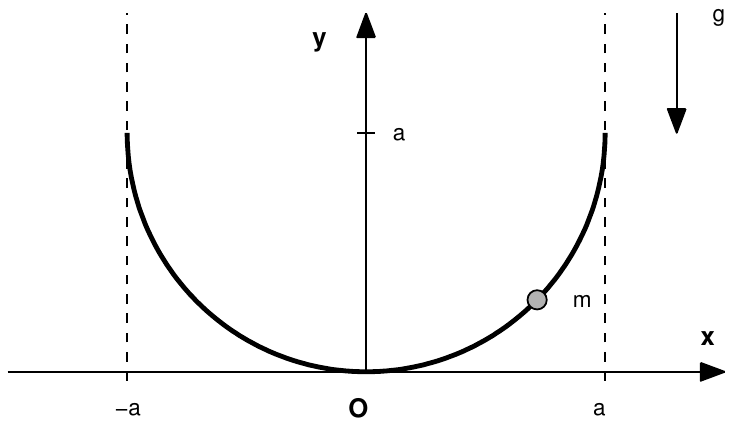
- (a)Determine the number of degrees of freedom of the problem.
- (b)Define a convenient moving reference frame with origin in $O$, $OX_1Y_1Z_1$. Express the inertia force that acts on the particle in this moving reference frame.
- (c)Express also the components of the weight of the particle with respect to $OX_1Y_1Z_1$.
- (d)Determine if there are any equilibrium points.
- (e)Reduce the problem to integrals (i.e. quadratures) and determine the value of the reaction force.
- (f)Is it possible to use the energy equation? If $\Omega$ were a function of time, would it be possible to use the energy equation? Justify your answer.
Worked Solution (4-Phase Methodology) [ Click to Expand ]
Physical Statement, Hypotheses & Parameters
- Physical system: a heavy particle $P$ (mass $m$) slides without friction on a half-circumference wire of radius $a$. In the plane of the wire the lowest point is $O$, the centre is $C = (0, a)$ and the ends are $(\pm a, a)$ (figure). The wire turns about the vertical axis $OY$ with constant angular velocity $\boldsymbol{\omega} = \Omega\,\mathbf{j}$.
- Hypotheses: the frame $OXYZ$ with $OY$ vertical upwards is inertial; gravity is $-g\,\mathbf{j}$; the wire is smooth, so its reaction has no component along the wire; the rotation is imposed (whatever torque is needed is supplied). This problem was solved in Topic 3; here it is solved again with the relative-motion method of Topic 5 (moving frame, Notes Eq. 3.27 and inertia forces, Notes Eqs. 4.62–4.63).
- Why a moving frame: in a frame that turns with the wire the constraint is a fixed circle, so the motion of $P$ is a one-dimensional motion on a fixed curve. The cost is to add the centrifugal and Coriolis forces; there is no Euler force and no force from the acceleration of the origin because $\Omega$ is constant and $O$ is fixed.
- Initial conditions ($t = 0$): $P$ at $O$ ($x = 0$) with velocity $v_0$ along $+x$.
| Symbol | Meaning | SI unit |
|---|---|---|
| $m$ | mass of $P$ | kg |
| $a$ | radius of the wire | m |
| $\Omega$ | angular velocity of the wire (constant) | rad/s |
| $g$ | gravitational acceleration | m/s$^2$ |
| $v_0$ | initial speed at $O$ | m/s |
| $\theta$ | angle of $CP$ from the downward vertical | rad |
Reference Frames, Vector Bases & Rotation Matrices
- Inertial frame: $S_0 = OXYZ = \{O; \mathbf{i}, \mathbf{j}, \mathbf{k}\}$, with $\mathbf{j}$ upwards.
- Moving frame (requested in (b)): $S_1 = OX_1Y_1Z_1 = \{O; \mathbf{i}_1, \mathbf{j}_1, \mathbf{k}_1\}$ attached to the wire, with $OX_1$ in the plane of the wire (the $x$ axis of the figure), $OY_1 \equiv OY$ and $OZ_1$ normal to the plane of the wire. Taking $S_1$ coincident with $S_0$ at $t = 0$, it is a simple rotation of angle $\Omega t$ about $\mathbf{j}$ (theory note, Sec. 4.1):
(the columns are unit vectors and $\mathbf{i}_1\cdot\mathbf{k}_1 = \cos\Omega t\sin\Omega t - \sin\Omega t\cos\Omega t = 0$; also $\mathbf{i}_1\times\mathbf{j}_1 = \mathbf{k}_1$).
- Motion of $S_1$: $\mathbf{r}_0^O = \mathbf{0}$, $\mathbf{v}_0^O = \mathbf{0}$, $\mathbf{a}_0^O = \mathbf{0}$ (fixed origin); $\boldsymbol{\omega}_{10} = \Omega\,\mathbf{j}_1$, $\boldsymbol{\alpha}_{10} = \dot\Omega\,\mathbf{j}_1 = \mathbf{0}$. Check: $\left.\frac{d\mathbf{i}_1}{dt}\right|_0 = -\Omega\sin\Omega t\,\mathbf{i} - \Omega\cos\Omega t\,\mathbf{k} = -\Omega\,\mathbf{k}_1$ (chain rule), and $\Omega\,\mathbf{j}\times\mathbf{i}_1 = -\Omega\,\mathbf{k}_1$.
- Position of $P$ in $S_1$: with $\theta$ the angle of $CP$ measured from the downward vertical, positive towards $+X_1$, and $\theta \in [-\pi/2, \pi/2]$ on the wire:
- Wire basis (intrinsic frame of the circle): tangent $\mathbf{e}_t = \cos\theta\,\mathbf{i}_1 + \sin\theta\,\mathbf{j}_1$, principal normal towards $C$, $\mathbf{e}_n = -\sin\theta\,\mathbf{i}_1 + \cos\theta\,\mathbf{j}_1$, binormal $\mathbf{e}_t\times\mathbf{e}_n = (\cos^2\theta + \sin^2\theta)\,\mathbf{k}_1 = \mathbf{k}_1$. The matrix with columns $\mathbf{e}_t, \mathbf{e}_n, \mathbf{k}_1$ in $\mathcal{B}_1$ is a rotation by $\theta$ about $\mathbf{k}_1$, with determinant $\cos^2\theta + \sin^2\theta = 1$.
Step-by-Step Mathematical Deduction
(a) Degrees of freedom
$P$ has 3 coordinates. In $S_1$ the wire imposes two fixed equations, $z_1 = 0$ (plane of the wire) and $x_1^2 + (y_1 - a)^2 = a^2$ (circle). In $S_0$ the same constraints are rheonomic (they turn with $\Omega t$), but the count is the same: CDOF $= 3 - 2 = 1$, with generalized coordinate $\theta$. The rotation $\Omega t$ is prescribed, so it is not a degree of freedom.
(b) Inertia force in $OX_1Y_1Z_1$
Relative velocity. In $S_1$ only the components change; chain rule $\frac{d}{dt}\sin\theta = \cos\theta\,\dot\theta$, $\frac{d}{dt}(1 - \cos\theta) = \sin\theta\,\dot\theta$:
Centrifugal force. With $\mathbf{j}_1\times\mathbf{i}_1 = -\mathbf{k}_1$ and $\mathbf{j}_1\times\mathbf{j}_1 = \mathbf{0}$, $\boldsymbol{\omega}_{10}\times\mathbf{r}_1^P = \Omega\,\mathbf{j}_1\times a\sin\theta\,\mathbf{i}_1 = -\Omega a\sin\theta\,\mathbf{k}_1$; then, with $\mathbf{j}_1\times\mathbf{k}_1 = \mathbf{i}_1$, $\boldsymbol{\omega}_{10}\times(\boldsymbol{\omega}_{10}\times\mathbf{r}_1^P) = -\Omega^2 a\sin\theta\,\mathbf{i}_1$:
It points horizontally away from the axis and equals $m\Omega^2\mathbf{r}_\perp$ (Slide 30), since $\mathbf{r}_\perp = a\sin\theta\,\mathbf{i}_1$ is the part of $\mathbf{r}_1^P$ perpendicular to $\mathbf{j}_1$.
Coriolis force. $\boldsymbol{\omega}_{10}\times\mathbf{v}_1^P = \Omega\,\mathbf{j}_1\times\left(a\dot\theta\cos\theta\,\mathbf{i}_1 + a\dot\theta\sin\theta\,\mathbf{j}_1\right) = -\Omega a\dot\theta\cos\theta\,\mathbf{k}_1$, so
Total inertia force:
(c) Weight in $OX_1Y_1Z_1$
The axis of rotation is the vertical, so $\mathbf{j}_1 = \mathbf{j}$ at all times and
In the wire basis: $\mathbf{W}\cdot\mathbf{e}_t = -mg\sin\theta$, $\mathbf{W}\cdot\mathbf{e}_n = -mg\cos\theta$, $\mathbf{W}\cdot\mathbf{k}_1 = 0$.
(d) Equilibrium points
Relative acceleration. Product rule on $a\dot\theta\,\mathbf{e}_t$ in $S_1$, with $\left.\frac{d\mathbf{e}_t}{dt}\right|_1 = \dot\theta\left(-\sin\theta\,\mathbf{i}_1 + \cos\theta\,\mathbf{j}_1\right) = \dot\theta\,\mathbf{e}_n$:
Tangential equation. $\mathbf{F}_C\cdot\mathbf{e}_t = m\Omega^2 a\sin\theta\cos\theta$, so
Equilibria (relative rest, $\ddot\theta = \dot\theta = 0$):
- $\sin\theta = 0$: $\theta = 0$, the lowest point $O$. It exists for every $\Omega$.
- $\cos\theta_* = \dfrac{g}{a\Omega^2}$: two symmetric points $\theta = \pm\theta_*$, which exist only if $\Omega^2 \gt g/a$ (then $0 \lt \theta_* \lt \pi/2$, inside the wire).
Stability with the potential of (f), $V_1(\theta) = mga(1 - \cos\theta) - \tfrac12 m\Omega^2a^2\sin^2\theta$ (the tangential equation is $ma^2\ddot\theta = -dV_1/d\theta$). Its derivatives are $V_1' = ma\sin\theta\left(g - \Omega^2 a\cos\theta\right)$ and $V_1'' = mga\cos\theta - m\Omega^2a^2\cos 2\theta$:
- $V_1''(0) = ma\left(g - \Omega^2 a\right)$: $\theta = 0$ is stable if $\Omega^2 \lt g/a$ and unstable if $\Omega^2 \gt g/a$.
- $V_1''(\pm\theta_*) = mga\cos\theta_* - m\Omega^2a^2\left(2\cos^2\theta_* - 1\right) = m\Omega^2a^2\left(1 - \cos^2\theta_*\right) = m\Omega^2a^2\sin^2\theta_* \gt 0$ (using $ga = \Omega^2a^2\cos\theta_*$): the off-axis equilibria are stable whenever they exist.
(e) Quadratures and reaction force
First integral. Multiply $ma^2\ddot\theta = -mga\sin\theta + m\Omega^2a^2\sin\theta\cos\theta$ by $\dot\theta$. By the chain rule, $\frac{d}{dt}\left(\tfrac12\dot\theta^2\right) = \dot\theta\ddot\theta$, $\frac{d}{dt}\cos\theta = -\sin\theta\,\dot\theta$ and $\frac{d}{dt}\left(\tfrac12\sin^2\theta\right) = \sin\theta\cos\theta\,\dot\theta$, so
Integrate from $0$ to $t$ and apply Barrow's rule, with $\theta(0) = 0$ and $a\dot\theta(0) = v_0$ (at $O$, $\mathbf{r}_1^P = \mathbf{0}$, so $\boldsymbol{\omega}_{10}\times\mathbf{r}_1^P = \mathbf{0}$ and the given absolute velocity equals the relative one, $v_0\,\mathbf{i}_1 = a\dot\theta(0)\,\mathbf{e}_t(0)$):
Quadrature. Separate variables ($d\theta = \sqrt{\Phi}\,dt$, positive root since $\dot\theta(0) = v_0/a \gt 0$, valid until the first turning point $\Phi = 0$) and integrate from $0$ to $t$:
Reaction force. $\mathbf{N} = N_n\,\mathbf{e}_n + N_z\,\mathbf{k}_1$ (no tangential component). Projection on $\mathbf{e}_n$, with $\mathbf{F}_C\cdot\mathbf{e}_n = -m\Omega^2a\sin^2\theta$:
Substituting $\dot\theta^2 = \Phi(\theta)$:
Projection on $\mathbf{k}_1$ ($\mathbf{a}_1^P\cdot\mathbf{k}_1 = 0$, $\mathbf{W}\cdot\mathbf{k}_1 = 0$):
(upper sign while $\dot\theta \gt 0$). The total reaction is $\mathbf{N} = N_n\left(-\sin\theta\,\mathbf{i}_1 + \cos\theta\,\mathbf{j}_1\right) + N_z\,\mathbf{k}_1$.
Staying on the wire. The particle reaches the end $\theta = \pi/2$ only if $\Phi(\pi/2) = v_0^2/a^2 - 2g/a + \Omega^2 \ge 0$; otherwise it oscillates between the two roots of $\Phi(\theta) = 0$.
(f) Energy equation
Constant $\Omega$: yes. In $S_1$: the wire is fixed and smooth, so $\mathbf{N}\cdot\mathbf{v}_1^P = 0$; the Coriolis force never does work, $\mathbf{F}_{COR}\cdot\mathbf{v}_1^P = 0$ (Slide 31); the weight has the potential $mgy_1 = mga(1 - \cos\theta)$; the centrifugal force has the potential $-\tfrac12 m\Omega^2 r_\perp^2 = -\tfrac12 m\Omega^2a^2\sin^2\theta$ (Slide 30), time-independent because $\Omega$ is constant. Hence
which is the first integral used in (e). (In $S_0$ the mechanical energy is not conserved: the reaction $N_z$ is perpendicular to the moving wire but not to the absolute velocity, so the motor that keeps $\Omega$ constant does work.)
Variable $\Omega(t)$: no energy integral. Two things change. The Euler force appears, $\mathbf{F}_E = -m\dot\Omega\,\mathbf{j}_1\times a\sin\theta\,\mathbf{i}_1 = m\dot\Omega a\sin\theta\,\mathbf{k}_1$; it is normal to the plane of the wire, so $\mathbf{F}_E\cdot\mathbf{v}_1^P = 0$ and it does no work in $S_1$ (it is balanced by $N_z$). But the centrifugal potential now depends explicitly on time, $V_C = -\tfrac12 m\Omega(t)^2a^2\sin^2\theta$, and differentiating $E_1^P$ along the motion (tangential equation with $\Omega(t)$) gives
so $E_1^P$ is not a constant of motion and the problem cannot be reduced to a quadrature with the energy equation. The work-energy relation $dE_1^P/dt = \partial V_C/\partial t$ is still valid, but it is not a first integral.
Physical Interpretation & Dimensional Verification
- Bifurcation. For $\Omega^2 \lt g/a$ gravity dominates and the bottom is the only (stable) equilibrium. At $\Omega_c = \sqrt{g/a}$ the bottom becomes unstable and two stable equilibria $\pm\theta_*$ appear, where the tangential components of weight and centrifugal force balance: $mg\sin\theta_* = m\Omega^2a\sin\theta_*\cos\theta_*$.
- Limits. $\Omega \to 0$: $\Phi = v_0^2/a^2 - 2g(1 - \cos\theta)/a$ and $N_n = mv_0^2/a + mg(3\cos\theta - 2)$, the simple-pendulum results; $N_z \to 0$. $\Omega \to \infty$: $\cos\theta_* \to 0$, the equilibria move to the ends of the wire.
- Coriolis and the reaction. $N_z$ is exactly the force the wire must exert to cancel the Coriolis force; it changes sign with $\dot\theta$, pushing the particle forward or backward with the rotation.
- Dimensions: $[\Omega^2] = [g/a] = \text{s}^{-2}$, so every term of $\Phi$ is in s$^{-2}$ and $[t] = \text{rad}/\text{s}^{-1} = \text{s}$; $[mv_0^2/a] = [mg] = [m\Omega^2a] = \text{kg}\cdot\text{m}\cdot\text{s}^{-2} = \text{N}$; $[m\Omega a\dot\theta] = \text{N}$; $[E_1^P] = [ma^2\dot\theta^2] = \text{J}$.
- Symbolic check (sympy,
verify_P26.py): $[{}_0R_1]$ and $\boldsymbol{\omega}_{10} = \Omega\,\mathbf{j}$; Notes Eq. 3.27 against the double derivative of $\mathbf{r}_1^P$ in $\mathcal{B}_0$; $\mathbf{F}_C$, $\mathbf{F}_{COR}$; the equation of motion and both reaction components from $m\mathbf{a}_0^P = \mathbf{W} + \mathbf{N}$ in $S_0$; $dE_1^P/dt = 0$; $\Phi(\theta)$ and $N_n(\theta)$; the stability derivatives; and, for $\Omega(t)$, the Euler force, its zero power and $dE_1^P/dt = -m\Omega\dot\Omega a^2\sin^2\theta$. A numerical integration ($g = 9.81$, $a = 1$, $\Omega = 4$, $v_0 = 2$, SI) keeps $\dot\theta^2 - \Phi(\theta)$ below $3\times10^{-10}$.
Bead on a Rotating Sine-Shaped Wire with a Spring
Original statement · Problems.pdf, p. 15A heavy bead $P$ of mass $m$ slides without friction along a thin wire with shape given by the following equation:
Moreover, the bead is joined to a straight rail located at $y_1 = 2$ by a spring of stiffness $k$. The connection of the spring with the rail can move freely along the rail, so that the spring is always vertical. The whole setup rotates with respect to the $y_1$ axis with a constant angular velocity $\omega$. A sketch of the setup and the definition of the right-handed, rotating $Ox_1y_1z_1$ reference frame is given below.
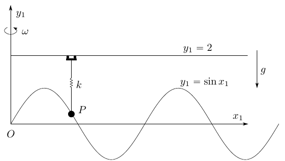
- (a)Write down the general expression for the components of the relative velocity and acceleration of $P$ in the reference frame $Ox_1y_1z_1$ as functions of the axial position of the bead, $x_1$, and its time derivatives $\dot x_1$ and $\ddot x_1$.
- (b)Identify all forces acting on the bead and then write down the three components of Newton's second law in the $Ox_1y_1z_1$ reference frame. From these equations, obtain an explicit expression of the components of the reaction force on the wire as a function of $x_1$, $\dot x_1$ and the parameters of the problem only, and a second order differential equation for $x_1$ that does not depend on the reaction force.
- (c)Is it possible to use the equation of conservation of mechanical energy of the relative motion of $P$? If so, write it down in terms of $x_1$, $\dot x_1$ and the parameters of the problem. What is the relation of this equation with the differential equation for $x_1$ in the previous point?
- (d)For $\omega = 0$ and $x_1 \in [0, 2\pi]$, discuss the existence of equilibrium positions as a function of the parameter $\lambda = mg/k$. Are these equilibrium positions stable?
- (e)Consider now that $\omega \neq 0$, and $k = 0$. We drop the bead $P$ at $x_1 = \pi$ with no initial velocity. Sketch the shape of the potential and discuss qualitatively the motion of $P$ if the parameter $\beta = \omega^2/g$ is small or large. Write down the system of equations that would allow to solve for the critical value of $\beta$ that divides between the two behaviors.
Worked Solution (4-Phase Methodology) [ Click to Expand ]
Physical Statement, Hypotheses & Parameters
- Physical system: a heavy bead $P$ (mass $m$) slides on the smooth plane wire $y_1 = \sin x_1$. A vertical spring of stiffness $k$ joins it to the rail $y_1 = 2$; the upper end slides freely on the rail, so the spring stays vertical. Wire, rail and spring rotate about the vertical axis $Oy_1$ with constant angular velocity $\omega$.
- Hypotheses: the non-rotating frame with origin $O$ and vertical axis $Oy_1$ is inertial; gravity is $-g\,\mathbf{j}_1$; the wire is smooth (no reaction along the tangent). The statement does not give the natural length of the spring; as in the official key it is taken as zero, so the spring force is $k$ times its length $2 - \sin x_1$. Lengths in the wire equation are measured in metres (the equation $y_1 = \sin x_1$ hides a unit length of $1$ m).
- Why the rotating frame: in $Ox_1y_1z_1$ the wire, the rail and the spring are fixed, so the bead moves on a fixed curve with one coordinate $x_1$; the rotation enters only through the centrifugal and Coriolis forces (Notes Eq. 4.62).
- Degrees of freedom: 3 coordinates minus 2 constraints ($z_1 = 0$ and $y_1 = \sin x_1$): CDOF $= 1$, generalized coordinate $x_1$.
| Symbol | Meaning | SI unit |
|---|---|---|
| $m$ | mass of the bead | kg |
| $k$ | spring stiffness | N/m |
| $\omega$ | angular velocity of the setup (constant) | rad/s |
| $g$ | gravitational acceleration | m/s$^2$ |
| $x_1$ | axial position of the bead | m |
| $\lambda = mg/k$ | weight-to-stiffness ratio | m |
| $\beta = \omega^2/g$ | centrifugal-to-gravity ratio | m$^{-1}$ |
Reference Frames, Vector Bases & Rotation Matrices
- Inertial frame: $S_0 = \{O; \mathbf{i}_0, \mathbf{j}_0, \mathbf{k}_0\}$ with $\mathbf{j}_0$ vertical upwards.
- Rotating frame: $S_1 = Ox_1y_1z_1 = \{O; \mathbf{i}_1, \mathbf{j}_1, \mathbf{k}_1\}$, attached to the wire, coincident with $S_0$ at $t = 0$; it is a simple rotation of angle $\omega t$ about $\mathbf{j}_0$:
- Motion of $S_1$: $\mathbf{r}_0^O = \mathbf{v}_0^O = \mathbf{a}_0^O = \mathbf{0}$; $\boldsymbol{\omega}_{10} = \omega\,\mathbf{j}_1$ (constant), $\boldsymbol{\alpha}_{10} = \mathbf{0}$.
- Position of the bead: $\mathbf{r}_1^P = x_1\,\mathbf{i}_1 + \sin x_1\,\mathbf{j}_1$. The tangent to the wire is $\mathbf{t} = \mathbf{i}_1 + \cos x_1\,\mathbf{j}_1$ (not normalised, $|\mathbf{t}|^2 = 1 + \cos^2 x_1$); the in-plane normal is $\mathbf{n} = -\cos x_1\,\mathbf{i}_1 + \mathbf{j}_1$, and $\mathbf{k}_1$ is normal to the plane of the wire.
Step-by-Step Mathematical Deduction
(a) Relative velocity and acceleration
Chain rule: $\frac{d}{dt}\sin x_1(t) = \cos x_1\,\dot x_1$. Product and chain rule: $\frac{d}{dt}\left(\cos x_1\,\dot x_1\right) = -\sin x_1\,\dot x_1^2 + \cos x_1\,\ddot x_1$. Hence
(b) Forces, Newton's law in $Ox_1y_1z_1$, reaction and equation of motion
Real forces.
- Weight: $\mathbf{W} = -mg\,\mathbf{j}_1$.
- Spring: its length is $2 - \sin x_1 \gt 0$ and it pulls the bead up towards the rail: $\mathbf{F}_s = k\left(2 - \sin x_1\right)\mathbf{j}_1$.
- Wire reaction: $\mathbf{N} = N_x\,\mathbf{i}_1 + N_y\,\mathbf{j}_1 + N_z\,\mathbf{k}_1$ with $\mathbf{N}\cdot\mathbf{t} = 0$, that is $N_x + N_y\cos x_1 = 0$ (smooth wire).
Inertia forces. With $\mathbf{j}_1\times\mathbf{i}_1 = -\mathbf{k}_1$, $\mathbf{j}_1\times\mathbf{j}_1 = \mathbf{0}$, $\mathbf{j}_1\times\mathbf{k}_1 = \mathbf{i}_1$:
Three components of Newton's law in $S_1$:
Out-of-plane reaction. From the $\mathbf{k}_1$ equation, $N_z = -2m\omega\dot x_1$: the wire cancels the Coriolis force.
In-plane reaction. Substitute $N_x = -N_y\cos x_1$ in the $\mathbf{i}_1$ equation, $m\ddot x_1 = -N_y\cos x_1 + m\omega^2x_1$. Multiply it by $\cos x_1$ and substitute $m\cos x_1\,\ddot x_1$ in the $\mathbf{j}_1$ equation:
Collect $N_y$:
so the reaction is
Equation of motion. Project Newton's law on the tangent $\mathbf{t} = \mathbf{i}_1 + \cos x_1\,\mathbf{j}_1$: add the $\mathbf{i}_1$ equation and $\cos x_1$ times the $\mathbf{j}_1$ equation; $N_x + N_y\cos x_1 = 0$ removes the reaction:
(c) Conservation of the mechanical energy of the relative motion
Yes, it can be used. Check of each force: $\mathbf{N}\cdot\mathbf{v}_1^P = \dot x_1\left(N_x + N_y\cos x_1\right) = 0$; $\mathbf{F}_{COR}\cdot\mathbf{v}_1^P = 0$ (Slide 31); the weight has potential $mgy_1 = mg\sin x_1$; the spring has potential $\tfrac12 k\left(2 - y_1\right)^2 = \tfrac12 k\left(2 - \sin x_1\right)^2$ (its free end slides without friction, so only its length matters); the centrifugal force has potential $-\tfrac12 m\omega^2 r_\perp^2 = -\tfrac12 m\omega^2x_1^2$ (Slide 30). With $T_1^P = \tfrac12 m|\mathbf{v}_1^P|^2 = \tfrac12 m\dot x_1^2\left(1 + \cos^2 x_1\right)$:
Expanding $\tfrac12 k(2 - \sin x_1)^2 = 2k - 2k\sin x_1 + \tfrac12 k\sin^2 x_1$ and dropping the constant $2k$ gives the form of the official key, $\tfrac12 m\dot x_1^2(1 + \cos^2 x_1) + \sin x_1\,(mg - 2k) + \tfrac12 k\sin^2 x_1 - \tfrac12 m\omega^2x_1^2 = C$.
Relation with the equation of motion. Differentiate $E_1^P$ in time. Product and chain rules: $\frac{d}{dt}\left[\tfrac12 m\dot x_1^2(1 + \cos^2 x_1)\right] = m\dot x_1\ddot x_1(1 + \cos^2 x_1) - m\dot x_1^3\sin x_1\cos x_1$, $\frac{d}{dt}(mg\sin x_1) = mg\cos x_1\,\dot x_1$, $\frac{d}{dt}\left[\tfrac12 k(2 - \sin x_1)^2\right] = -k(2 - \sin x_1)\cos x_1\,\dot x_1$, $\frac{d}{dt}\left(-\tfrac12 m\omega^2x_1^2\right) = -m\omega^2x_1\dot x_1$. Therefore
The bracket is exactly the equation of motion of (b), so $dE_1^P/dt = 0$ along every motion: the energy equation is a first integral of the equation of motion (obtained by multiplying it by $\dot x_1$ and integrating once), and the equation of motion is recovered by differentiating it (for $\dot x_1 \neq 0$).
(d) Equilibria for $\omega = 0$, $x_1 \in [0, 2\pi]$
First derivative (chain rule):
Second derivative (product rule):
Equilibria.
- $\cos x_1 = 0$: $x_1 = \pi/2$ (crest of the wire) and $x_1 = 3\pi/2$ (trough). They exist for every $\lambda$.
- $\sin x_1 = 2 - \lambda$: it has solutions only if $-1 \le 2 - \lambda \le 1$, that is $1 \le \lambda \le 3$. For $1 \lt \lambda \lt 2$ they are $x_1 = \arcsin(2 - \lambda)$ and $\pi - \arcsin(2 - \lambda)$ (on both sides of the crest); for $\lambda = 2$, $x_1 = 0, \pi, 2\pi$; for $2 \lt \lambda \lt 3$, $x_1 = \pi + \arcsin(\lambda - 2)$ and $2\pi - \arcsin(\lambda - 2)$ (on both sides of the trough). At $\lambda = 1$ and $\lambda = 3$ they merge with $\pi/2$ and $3\pi/2$.
Stability.
- $x_1 = \pi/2$: $V''(\pi/2) = -k(\lambda - 1) = k(1 - \lambda)$: stable for $\lambda \lt 1$ (a stiff spring holds the bead on the crest), unstable for $\lambda \gt 1$.
- $x_1 = 3\pi/2$: $V''(3\pi/2) = +k(\lambda - 3)$: stable for $\lambda \gt 3$ (a heavy bead sits in the trough), unstable for $\lambda \lt 3$.
- $\sin x_1 = 2 - \lambda$ ($1 \lt \lambda \lt 3$): the bracket vanishes, so $V'' = k\cos^2 x_1 \gt 0$: stable.
- Boundary cases: for $\lambda = 1$ near $\pi/2$ ($u = x_1 - \pi/2$) and for $\lambda = 3$ near $3\pi/2$ ($u = x_1 - 3\pi/2$), the Taylor expansion gives $V' \approx \tfrac12 k u^3$, so $V$ has a quartic minimum: stable, but with zero linear frequency.
(e) $\omega \neq 0$, $k = 0$: bead dropped at $x_1 = \pi$
Dimensionless potential. With $k = 0$, $V = mg\sin x_1 - \tfrac12 m\omega^2x_1^2$. Define $\tilde V = 2V/(mg)$:
and the energy equation becomes $\dfrac{\dot x_1^2}{g}\left(1 + \cos^2x_1\right) = \tilde V(\pi) - \tilde V(x_1)$.
Shape of the potential (sketch). $\tilde V$ is a sine wave of amplitude $2$ riding on the downward parabola $-\beta x_1^2$: wells near the troughs $x_1 \approx 3\pi/2, 7\pi/2, \dots$, humps near the crests $x_1 \approx 5\pi/2, 9\pi/2, \dots$, and $\tilde V \to -\infty$ as $|x_1| \to \infty$. The humps flatten and disappear as $\beta$ grows, because $\tilde V' = 2\cos x_1 - 2\beta x_1$ can vanish only where $|\beta x_1| \le 1$. For example, $\beta = 0.02$ m$^{-1}$: $\tilde V(\pi) = -0.197$ m, $\tilde V(3\pi/2) = -2.44$ m, $\tilde V(5\pi/2) = +0.77$ m; $\beta = 0.1$ m$^{-1}$: $\tilde V(\pi) = -0.99$ m, $\tilde V(5\pi/2) = -4.17$ m.
Start of the motion. $\tilde V'(\pi) = 2\cos\pi - 2\beta\pi = -2(1 + \beta\pi) \lt 0$, so the generalized force $-V'$ is positive: the bead starts moving towards larger $x_1$ (down the wire into the trough near $3\pi/2$), and $x_1 = \pi$ is a turning point.
Small $\beta$ (slow rotation). The hump near $5\pi/2$ is higher than the starting level, $\tilde V \gt -\beta\pi^2$ there, so the bead stops at the turning point $x_t$ with $\tilde V(x_t) = \tilde V(\pi)$ and returns: it oscillates periodically between $x_1 = \pi$ and $x_t$ (in the example $\beta = 0.02$ m$^{-1}$, $0.77 \gt -0.197$).
Large $\beta$ (fast rotation). The centrifugal potential dominates, no hump to the right of $\pi$ reaches the starting level, $\tilde V(x_1) \lt \tilde V(\pi)$ for all $x_1 \gt \pi$, and the bead moves outwards without bound ($x_1 \to \infty$) (in the example $\beta = 0.1$ m$^{-1}$, $-4.17 \lt -0.99$).
Critical value. The two behaviours are separated when the first hump to the right of $\pi$ has its maximum exactly at the starting level: at that $x_c$ the potential is stationary and equal to $\tilde V(\pi)$. The system of equations for $(x_c, \beta_c)$ is
with the condition $\tilde V''(x_c) = -2\sin x_c - 2\beta_c \lt 0$ (a maximum). Solving it numerically (extension: the statement asks only for the system) gives $x_c \approx 2.401\pi \approx 7.544$ m and $\beta_c \approx 0.0405$ m$^{-1}$. Hence the bead oscillates for $\beta \lt \beta_c$ and escapes for $\beta \gt \beta_c$.
Physical Interpretation & Dimensional Verification
- Role of each force. The spring pulls the bead towards the rail, which on this wire favours the crest $\pi/2$; the weight favours the trough $3\pi/2$; the ratio $\lambda = mg/k$ decides, with the intermediate equilibria $\sin x_1 = 2 - \lambda$ where the vertical forces $mg$ and $k(2 - \sin x_1)$ balance exactly. The centrifugal force pushes the bead away from the axis and, for fast rotation, throws it out; the Coriolis force only loads the wire ($N_z$) and never changes the energy.
- Limits. $\omega \to 0$: $N_z \to 0$ and the equation of motion is that of a bead on a fixed wire. $k \to 0$ in (d): $\lambda \to \infty$, only $3\pi/2$ is stable (bead in the trough). $k \to \infty$: $\lambda \to 0$, only $\pi/2$ is stable.
- Dimensions (with the implicit unit length of the wire): $[m\omega^2x_1] = [mg] = [k(2 - \sin x_1)] = \text{N}$; $[m\omega\dot x_1] = \text{kg}\cdot\text{s}^{-1}\cdot\text{m}\cdot\text{s}^{-1} = \text{N}$; every term of $E_1^P$ is in J ($[k(2 - \sin x_1)^2] = \text{N/m}\cdot\text{m}^2$); $[\lambda] = \text{m}$ is compared with lengths ($2 - \sin x_1$); $[\beta x_1^2] = \text{m}^{-1}\cdot\text{m}^2 = \text{m} = [2\sin x_1]$.
- Symbolic and numerical check (
verify_P27.py): $[{}_0R_1]$; $\mathbf{v}_1^P$, $\mathbf{a}_1^P$; Notes Eq. 3.27 against differentiation in $\mathcal{B}_0$; $\mathbf{F}_C$, $\mathbf{F}_{COR}$; $N_x$, $N_y$, $N_z$ and the equation of motion solved from the three components (and again from $m\mathbf{a}_0^P = \mathbf{F}$ in $S_0$); $dE_1^P/dt = \dot x_1\times$(equation of motion); $V'$, $V''$ and the boundary cases; the critical point $(x_c, \beta_c)$ and the two behaviours by numerical integration: all verified.
Spherical Pendulum with a Vertically Oscillating Suspension Point
Original statement · Problems.pdf, p. 16A point particle $P$ of mass $m$ is attached with a massless cord of length $L$ to the point $A$, as shown in the figure. The point $A$ is oscillating vertically with respect to the fixed reference frame $Oxyz$ according to the law $z = a\sin\omega t$, where $a$ and $\omega$ are known constants. The position of the particle $P$ with respect to the moving reference frame $Ax'y'z'$ is completely specified by the angles $\varphi$ and $\theta$ shown in the figure.
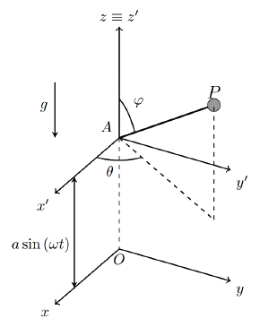
At $t = 0$ the relative position and relative velocity of the particle are defined by the values
where $g$ is the gravitational acceleration. We define the following unit vectors that define a spherical coordinate system
The partial derivatives of these vectors with respect to $\varphi$ and $\theta$ are
- (a)Show that the relative acceleration of $P$ with respect to $Ax'y'z'$ can be expressed as $\mathbf{a}'_P = -L\left(\dot\varphi^2 + \dot\theta^2\sin^2\varphi\right)\mathbf{e}_r + L\left(\ddot\varphi - \dot\theta^2\sin\varphi\cos\varphi\right)\mathbf{e}_\varphi + L\left(\ddot\theta\sin\varphi + 2\dot\theta\dot\varphi\cos\varphi\right)\mathbf{e}_\theta$.
- (b)Write down a system of three ordinary differential equations that once solved would yield the angles $\theta$ and $\varphi$, and the tension on the cord as a function of time (you do not need to solve it).
- (c)At $t = 0$, determine the relative acceleration of $P$ with respect to $Ax'y'z'$.
- (d)At $t = 0$, determine the value of the tension on the cord.
Worked Solution (4-Phase Methodology) [ Click to Expand ]
Physical Statement, Hypotheses & Parameters
- Physical system: a particle $P$ (mass $m$) hangs from a massless cord of length $L$ fixed at $A$; $A$ moves on the vertical axis with $z_A = a\sin\omega t$. In the frame $Ax'y'z'$ the particle is located by the spherical angles $\varphi$ (from the upward axis $Az'$ to $AP$, figure) and $\theta$ (azimuth from $Ax'$).
- Hypotheses: $Oxyz$ is inertial with $Oz$ upwards and gravity $-g\,\mathbf{k}$; the cord is massless and taut, so it acts on $P$ with a tension $\mathbf{T} = -T\,\mathbf{e}_r$, $T \ge 0$, directed from $P$ to $A$; no friction or drag. Here $\omega$ is the frequency of the oscillation of $A$, not an angular velocity of the frame.
- Why a moving frame: in $Ax'y'z'$ the cord has fixed length, so $P$ moves on a sphere of radius $L$ described by two angles. The frame does not rotate, so the only inertia force is the one due to the acceleration of its origin.
- Degrees of freedom: 3 coordinates minus the constraint $|\mathbf{AP}| = L$: CDOF $= 2$, generalized coordinates $(\varphi, \theta)$. The motion of $A$ is prescribed.
- Initial conditions: $\theta_0 = 0$, $\varphi_0 = 30^\circ = \pi/6$, $\dot\theta_0 = \sqrt{2g/(\sqrt3 L)}$, $\dot\varphi_0 = 0$ (relative values).
| Symbol | Meaning | SI unit |
|---|---|---|
| $m$ | mass of $P$ | kg |
| $L$ | cord length | m |
| $a$ | amplitude of the motion of $A$ | m |
| $\omega$ | frequency of the motion of $A$ | rad/s |
| $g$ | gravitational acceleration | m/s$^2$ |
| $\varphi, \theta$ | polar and azimuthal angles of $AP$ in $Ax'y'z'$ | rad |
| $T$ | cord tension | N |
Reference Frames, Vector Bases & Rotation Matrices
- Inertial frame: $S_0 = Oxyz = \{O; \mathbf{i}, \mathbf{j}, \mathbf{k}\}$.
- Moving frame: $S_1 = Ax'y'z' = \{A; \mathbf{i}, \mathbf{j}, \mathbf{k}\}$: its axes stay parallel to those of $Oxyz$ (figure), so the frame only translates and $[{}_0R_1] = I$ ($\det I = 1$, $I I^T = I$). In the notation of the theory, $\mathbf{a}'_P \equiv \mathbf{a}_1^P$.
- Motion of $S_1$: $\boldsymbol{\omega}_{10} = \mathbf{0}$, $\boldsymbol{\alpha}_{10} = \mathbf{0}$ and $\mathbf{r}_0^A = a\sin\omega t\,\mathbf{k}$. By the chain rule, $\frac{d}{dt}\sin\omega t = \omega\cos\omega t$ and $\frac{d}{dt}\cos\omega t = -\omega\sin\omega t$:
- Spherical basis $\{\mathbf{e}_r, \mathbf{e}_\varphi, \mathbf{e}_\theta\}$ of the statement. The matrix with these columns (components in $\{\mathbf{i}, \mathbf{j}, \mathbf{k}\}$)
has orthonormal columns ($|\mathbf{e}_r|^2 = \sin^2\varphi(\cos^2\theta + \sin^2\theta) + \cos^2\varphi = 1$, $\mathbf{e}_r\cdot\mathbf{e}_\varphi = \sin\varphi\cos\varphi - \cos\varphi\sin\varphi = 0$, $\mathbf{e}_r\cdot\mathbf{e}_\theta = 0$, $\mathbf{e}_\varphi\cdot\mathbf{e}_\theta = 0$), so $[{}_1R_s]^T[{}_1R_s] = I$; and $\mathbf{e}_r\times\mathbf{e}_\varphi = \mathbf{e}_\theta$, so $\det[{}_1R_s] = 1$ (right-handed). The last row gives the vertical: $\mathbf{k} = \cos\varphi\,\mathbf{e}_r - \sin\varphi\,\mathbf{e}_\varphi$.
- Relative position: $\mathbf{r}_1^P = L\,\mathbf{e}_r$. Since $\varphi \lt \pi/2$ means $\mathbf{e}_r\cdot\mathbf{k} \gt 0$, at $t = 0$ ($\varphi_0 = 30^\circ$) the particle is above $A$, as drawn in the figure.
Step-by-Step Mathematical Deduction
(a) Relative acceleration
Time derivatives of the basis (in $S_1$):
Relative velocity ($L$ constant):
Relative acceleration. Product rule on each term: $\frac{d}{dt}\left(L\dot\varphi\,\mathbf{e}_\varphi\right) = L\ddot\varphi\,\mathbf{e}_\varphi + L\dot\varphi\,\dot{\mathbf{e}}_\varphi$ and $\frac{d}{dt}\left(L\dot\theta\sin\varphi\,\mathbf{e}_\theta\right) = L\ddot\theta\sin\varphi\,\mathbf{e}_\theta + L\dot\theta\cos\varphi\,\dot\varphi\,\mathbf{e}_\theta + L\dot\theta\sin\varphi\,\dot{\mathbf{e}}_\theta$ (chain rule $\frac{d}{dt}\sin\varphi = \cos\varphi\,\dot\varphi$). Substituting the basis derivatives:
Collecting along $\mathbf{e}_r$ ($-L\dot\varphi^2 - L\dot\theta^2\sin^2\varphi$), $\mathbf{e}_\varphi$ ($L\ddot\varphi - L\dot\theta^2\sin\varphi\cos\varphi$) and $\mathbf{e}_\theta$ ($L\dot\varphi\dot\theta\cos\varphi + L\ddot\theta\sin\varphi + L\dot\theta\dot\varphi\cos\varphi$):
which is the expression of the statement.
(b) Equations of motion and tension
Forces in $S_1$. Tension $-T\,\mathbf{e}_r$; weight $-mg\,\mathbf{k}$; inertia force of the origin $\mathbf{F}_A = -m\mathbf{a}_0^A = ma\omega^2\sin\omega t\,\mathbf{k}$. Weight and $\mathbf{F}_A$ combine into an effective, time-dependent gravity:
With $\mathbf{k} = \cos\varphi\,\mathbf{e}_r - \sin\varphi\,\mathbf{e}_\varphi$, this force is $-mg_e\cos\varphi\,\mathbf{e}_r + mg_e\sin\varphi\,\mathbf{e}_\varphi$.
Three components of $m\mathbf{a}_1^P = -T\,\mathbf{e}_r - mg_e\,\mathbf{k}$:
The requested system (solved for the unknowns):
The first two equations, with the initial conditions, give $\varphi(t)$ and $\theta(t)$; the third gives $T(t)$. Multiplying the second by $\sin\varphi$, product and chain rules show it is $\frac{d}{dt}\left(\dot\theta\sin^2\varphi\right) = \ddot\theta\sin^2\varphi + 2\dot\theta\sin\varphi\cos\varphi\,\dot\varphi = 0$: the vertical component of the angular momentum about $A$, $mL^2\dot\theta\sin^2\varphi$, is conserved, because tension, weight and $\mathbf{F}_A$ have no moment about the vertical axis through $A$ (Topic 4).
(c) Relative acceleration at $t = 0$
Data: $\sin\omega\cdot 0 = 0$, so $g_e(0) = g$; $\sin\varphi_0 = \tfrac12$, $\cos\varphi_0 = \tfrac{\sqrt3}{2}$, $\dot\theta_0^2 = \dfrac{2g}{\sqrt3 L}$, $\dot\varphi_0 = 0$.
Angular accelerations. From the first equation of (b):
From the second, $\ddot\theta_0\sin\varphi_0 = -2\dot\theta_0\cdot 0\cdot\cos\varphi_0 = 0$, so $\ddot\theta_0 = 0$.
Components of $\mathbf{a}_1^P(0)$. $\dot\theta_0^2\sin^2\varphi_0 = \dfrac{2g}{\sqrt3 L}\cdot\dfrac14 = \dfrac{g}{2\sqrt3 L}$ and $\dot\theta_0^2\sin\varphi_0\cos\varphi_0 = \dfrac{2g}{\sqrt3 L}\cdot\dfrac{\sqrt3}{4} = \dfrac{g}{2L}$:
At $\theta = 0$, $\varphi = 30^\circ$: $\mathbf{e}_r = \tfrac12\mathbf{i} + \tfrac{\sqrt3}{2}\mathbf{k}$ and $\mathbf{e}_\varphi = \tfrac{\sqrt3}{2}\mathbf{i} - \tfrac12\mathbf{k}$, so the $\mathbf{i}$ component is $-\tfrac{g}{4\sqrt3} + \tfrac{\sqrt3 g}{4} = \tfrac{(3 - 1)g}{4\sqrt3} = \tfrac{g}{2\sqrt3}$ and the $\mathbf{k}$ component is $-\tfrac{g}{4} - \tfrac{g}{4} = -\tfrac{g}{2}$:
(d) Tension at $t = 0$
From the third equation of (b):
Interpretation. The value is negative: at $t = 0$ the cord would have to push the particle outwards. A cord can only pull, so with the data as stated the cord is not taut at $t = 0$ and the taut-cord model of (a)–(c) does not apply. The actual motion starts as a free motion (the cord goes slack), with $m\mathbf{a}_1^P = -mg_e\,\mathbf{k}$, i.e. $\mathbf{a}_1^P(0) = -g\,\mathbf{k}$ instead of the value of (c). The result $T(0) = -mg/\sqrt3$ would be meaningful as a compression if $P$ were held by a massless rigid rod instead of a cord.
Physical Interpretation & Dimensional Verification
- Effective gravity. In the translating frame of $A$ the oscillation of the support only modulates gravity, $g_e(t) = g - a\omega^2\sin\omega t$ (Slide 28: the force due to the acceleration of the origin is indistinguishable from a gravitational field). When $a\omega^2 \gt g$, $g_e$ changes sign periodically and the upper position can be dynamically stabilised (inverted pendulum with a vibrating support; extension, not course material).
- Limits. $a \to 0$ or $\omega \to 0$: $g_e = g$ and the system is the classical spherical pendulum written with $\varphi$ from the upward vertical (equilibrium $\varphi = 0$ unstable, $\varphi = \pi$ stable). $\dot\theta = 0$: the $\theta$ equation is satisfied identically and the motion is planar.
- Signs at $t = 0$. $\ddot\varphi_0 = g/L \gt 0$: the particle starts to fall away from the upward vertical, since both the weight and the centrifugal effect of $\dot\theta_0$ push $\varphi$ to grow.
- Dimensions: $[a\omega^2] = \text{m}\cdot\text{s}^{-2} = [g]$; $[\dot\theta^2] = [g/L] = \text{s}^{-2}$, so each term of the $\ddot\varphi$ equation is in s$^{-2}$; $[mL\dot\theta^2] = [mg] = \text{N}$; $[L\dot\varphi^2] = [L\ddot\theta] = \text{m}\cdot\text{s}^{-2}$.
- Symbolic check (sympy,
verify_P28.py): orthonormality and handedness of the spherical basis and the six partial derivatives of the statement; $\mathbf{v}_1^P$ and $\mathbf{a}_1^P$ by direct differentiation; $\mathbf{a}_0^P = \mathbf{a}_0^A + \mathbf{a}_1^P$; the three equations of (b) solved from the vector equation; $\ddot\varphi_0 = g/L$, $\ddot\theta_0 = 0$, $\mathbf{a}_1^P(0)$, $|\mathbf{a}_1^P(0)| = g/\sqrt3$, $T(0) = -mg/\sqrt3$; and the alternative reading ($\ddot\varphi_0 = 0$, $T(0) = 2mg/\sqrt3$): all verified.
Particle on a Rotating Quarter Circumference with a Spring
Original statement · Problems.pdf, p. 18A point particle $P$ of mass $m$ is constrained to move on a smooth quarter of circumference as shown in the figure below. We define a moving reference frame $OX_1Y_1Z_1$ that rotates with respect to an inertial reference frame $OXYZ$. The rotation of the moving reference frame is performed along a vertical axis defined as $x_1 = -R$ and $y_1 = 0$; the angular velocity is $\boldsymbol{\omega} = \omega\mathbf{k} = \omega\mathbf{k}_1$. The particle is attached to a linear spring with the other end attached to the point $B$ of the reference frame $OX_1Y_1Z_1$ with coordinates $(-2R, 0, 0)$. The constant of the spring is $K = \alpha m\omega^2$. The angle between $\overline{OP}$ and the negative side of the $z_1$ axis, $\phi$, is used to define the position of the particle. Neglect the action of gravity on the particle.
Initially the particle is located at $\phi = 0$ and it is set to motion with a relative velocity $-\beta\omega R\,\mathbf{i}_1$. Both $\alpha$ and $\beta$ are positive nondimensional parameters.
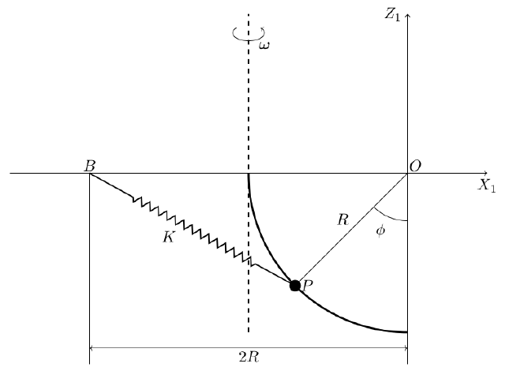
- (a)Compute the relative velocity and the relative acceleration of the particle in the path variable reference frame $\{\mathbf{e}_t, \mathbf{e}_n, \mathbf{e}_b\}$ as functions of the coordinate $\phi$ and their derivatives.
- (b)Write down the three components of Newton's second law expressed in the path variables reference frame $\{\mathbf{e}_t, \mathbf{e}_n, \mathbf{e}_b\}$.
- (c)Express the energy conservation equation in the relative reference frame. Discuss if this equation is equivalent to one of the above ones.
Let us now consider a different problem. Depending on the values of the parameters, we may find the equilibrium of the forces at different positions.
- (d)Obtain the value of $\alpha$ to have an equilibrium position when the particle is positioned at $\phi$ equal to $\pi/6$.
For this value of $\alpha$, the particle is again located at $\phi = 0$ and is set to motion with the relative velocity defined before.
- (e)Describe the possible types of motion for the different values of $\beta$. In particular, obtain the critical value of $\beta$ that makes the particle reach the position $\phi = \pi/2$ and the reaction force of the curve to the particle at that instant.
- (f)For a value of $\beta$ higher than the critical one, the particle leaves the arc of circumference and its motion is not anymore constrained. Under these conditions compute the maximum height reached by the particle, $z_{max}$, as a function of $\beta$. Note that the particle is still under the action of the spring.
Worked Solution (4-Phase Methodology) [ Click to Expand ]
Physical Statement, Hypotheses & Parameters
- System: a particle $P$ of mass $m$ slides on a smooth quarter circumference of radius $R$ and centre $O$, drawn in the vertical plane $X_1Z_1$ of a frame that rotates with constant angular velocity $\omega\mathbf{k}_1$ about the vertical axis $x_1 = -R$, $y_1 = 0$. A spring of constant $K = \alpha m\omega^2$ joins $P$ to the point $B = (-2R, 0, 0)$ of the rotating frame. Gravity is neglected.
- Why a rotating frame. The wire and the spring anchor $B$ are fixed in $OX_1Y_1Z_1$, so the constraint is a fixed circle there and the position of $P$ is described by one angle. The price is the inertia force of Notes Eqs. 4.62–4.63, which is easy to compute because $\boldsymbol{\omega}_{10}$ is constant. In the inertial frame the wire itself moves, and the constraint would be harder to write.
- Hypotheses:
1. $OXYZ$ is inertial; the frame rotates uniformly, $\boldsymbol{\omega}_{10} = \omega\mathbf{k}_1$ with $\omega$ constant.
2. The arc is smooth (no friction) and acts as a bilateral constraint (a bead on a wire): the reaction has no tangential component but its normal and binormal components can take either sign.
3. The spring is linear and, since no natural length is given, of zero natural length: $\mathbf{F}_K = -K\,\overrightarrow{BP}$.
4. Gravity is neglected, as the statement says. - Degrees of freedom: on the arc, $P$ has one degree of freedom, the angle $\phi \in [0, \pi/2]$ between $\overline{OP}$ and the negative $z_1$ axis. After leaving the arc in part (f), $P$ is free: three degrees of freedom $(x_1, y_1, z_1)$.
- Initial conditions: $\phi(0) = 0$, $\mathbf{v}_1^P(0) = -\beta\omega R\,\mathbf{i}_1$.
| Symbol | Meaning | SI unit |
|---|---|---|
| $m$ | mass of $P$ | kg |
| $R$ | radius of the arc and distance from $O$ to the axis | m |
| $\omega$ | constant angular velocity of the frame | rad/s |
| $K = \alpha m\omega^2$ | spring constant | N/m = kg/s$^2$ |
| $\alpha$, $\beta$ | positive nondimensional parameters | 1 |
| $\phi$ | angle between $\overline{OP}$ and the $-z_1$ axis | rad |
| $N_n$, $N_b$ | components of the reaction of the arc | N |
Reference Frames, Vector Bases & Rotation Matrices
- Fixed frame. The only points that do not move are those of the rotation axis. We take the inertial frame $S_0 = \{Q; \mathbf{i}_0, \mathbf{j}_0, \mathbf{k}_0\}$ with origin at the point $Q$ of the axis at the height of $O$ (the point $x_1 = -R$, $y_1 = z_1 = 0$, the upper end of the arc). It plays the role of the statement's $OXYZ$; moving the origin of an inertial frame to another fixed point does not change any velocity or acceleration. $\mathbf{k}_0 = \mathbf{k}$ is vertical.
- Moving frame. $S_1 = \{O; \mathbf{i}_1, \mathbf{j}_1, \mathbf{k}_1\}$ is the statement's $OX_1Y_1Z_1$, attached to the arc, with $\mathbf{k}_1 = \mathbf{k}_0$. Its origin $O$ is at distance $R$ from the axis, so it moves on a horizontal circle.
- Change of basis. $S_1$ turns about $\mathbf{k}_0$ through the angle $\omega t$ (we choose $\mathbf{i}_1 = \mathbf{i}_0$ at $t = 0$). The columns of $[{}_0R_1]$ are the components of $\mathbf{i}_1, \mathbf{j}_1, \mathbf{k}_1$ in $\mathcal{B}_0$:
- Checks. $\det[{}_0R_1] = \cos^2\omega t + \sin^2\omega t = 1$. The columns have unit length ($\cos^2\omega t + \sin^2\omega t = 1$) and the first two are orthogonal ($-\cos\omega t\sin\omega t + \sin\omega t\cos\omega t = 0$), so $[{}_0R_1][{}_0R_1]^T = I$.
- Angular motion of $S_1$: $\boldsymbol{\omega}_{10} = \omega\mathbf{k}_1$ and, $\omega$ being constant, $\boldsymbol{\alpha}_{10} = \left.\dfrac{d\boldsymbol{\omega}_{10}}{dt}\right|_0 = \mathbf{0}$.
- Motion of the origin $O$. $\mathbf{r}_0^O = \overrightarrow{QO} = R\,\mathbf{i}_1$. By the Coriolis theorem (Notes Eq. 3.8), since $R\,\mathbf{i}_1$ is constant in $S_1$:
- Path (intrinsic) basis. On the arc, $\mathbf{r}_1^P = -R\sin\phi\,\mathbf{i}_1 - R\cos\phi\,\mathbf{k}_1$. We take the arc length $s = R\phi$ (increasing with $\phi$), the tangent $\mathbf{e}_t$ in the direction of increasing $\phi$, the principal normal $\mathbf{e}_n$ towards the centre of curvature $O$, and $\mathbf{e}_b = \mathbf{e}_t\times\mathbf{e}_n$:
- The matrix whose columns are $\mathbf{e}_t, \mathbf{e}_n, \mathbf{e}_b$ in $\mathcal{B}_1$ is
and its columns are unit and mutually orthogonal ($\mathbf{e}_t\cdot\mathbf{e}_n = -\cos\phi\sin\phi + \sin\phi\cos\phi = 0$), so $[{}_1R_t][{}_1R_t]^T = I$.
- Useful projections: $\mathbf{i}_1\cdot\mathbf{e}_t = -\cos\phi$, $\mathbf{i}_1\cdot\mathbf{e}_n = \sin\phi$, $\mathbf{k}_1\cdot\mathbf{e}_t = \sin\phi$, $\mathbf{k}_1\cdot\mathbf{e}_n = \cos\phi$, $\mathbf{j}_1 = \mathbf{e}_b$.
Step-by-Step Mathematical Deduction
(a) Relative velocity and acceleration in the path basis
Differentiate $\mathbf{r}_1^P = -R\sin\phi\,\mathbf{i}_1 - R\cos\phi\,\mathbf{k}_1$ with $\dfrac{d}{dt}\sin\phi = \cos\phi\,\dot\phi$ and $\dfrac{d}{dt}\cos\phi = -\sin\phi\,\dot\phi$:
which is $\dot s\,\mathbf{e}_t$ with $s = R\phi$. For the acceleration use the product rule on $R\dot\phi\,\mathbf{e}_t$, and the chain rule on $\mathbf{e}_t(\phi(t))$:
The normal part is $\dot s^2/\rho$ with radius of curvature $\rho = R$, as expected for a circle. There is no binormal component.
(b) Newton's second law in the path basis
Actual forces.
- Spring (zero natural length): $\overrightarrow{BP} = \mathbf{r}_1^P - \mathbf{r}_1^B = (2R - R\sin\phi)\,\mathbf{i}_1 - R\cos\phi\,\mathbf{k}_1$, so
- Reaction of the smooth arc: $\mathbf{N} = N_n\,\mathbf{e}_n + N_b\,\mathbf{e}_b$ (no $\mathbf{e}_t$ component, because the arc is smooth).
Inertia forces (Slide 28), with $\boldsymbol{\omega}_{10} = \omega\mathbf{k}_1$, $\boldsymbol{\alpha}_{10} = \mathbf{0}$, $\mathbf{a}_0^O = -\omega^2R\,\mathbf{i}_1$:
- Force due to the acceleration of the origin: $\mathbf{F}_A = -m\mathbf{a}_0^O = m\omega^2R\,\mathbf{i}_1$.
- Euler force: $\mathbf{F}_E = -m\boldsymbol{\alpha}_{10}\times\mathbf{r}_1^P = \mathbf{0}$.
- Centrifugal force. First $\boldsymbol{\omega}_{10}\times\mathbf{r}_1^P = \omega\mathbf{k}_1\times(-R\sin\phi\,\mathbf{i}_1 - R\cos\phi\,\mathbf{k}_1) = -\omega R\sin\phi\,\mathbf{j}_1$ (using $\mathbf{k}_1\times\mathbf{i}_1 = \mathbf{j}_1$, $\mathbf{k}_1\times\mathbf{k}_1 = \mathbf{0}$); then $\boldsymbol{\omega}_{10}\times(-\omega R\sin\phi\,\mathbf{j}_1) = -\omega^2R\sin\phi\,(\mathbf{k}_1\times\mathbf{j}_1) = \omega^2R\sin\phi\,\mathbf{i}_1$, so $\mathbf{F}_C = -m\omega^2R\sin\phi\,\mathbf{i}_1$.
- Coriolis force: $\boldsymbol{\omega}_{10}\times\mathbf{v}_1^P = \omega R\dot\phi\,\mathbf{k}_1\times(-\cos\phi\,\mathbf{i}_1 + \sin\phi\,\mathbf{k}_1) = -\omega R\dot\phi\cos\phi\,\mathbf{j}_1$, so $\mathbf{F}_{COR} = -2m\boldsymbol{\omega}_{10}\times\mathbf{v}_1^P = 2m\omega R\dot\phi\cos\phi\,\mathbf{j}_1$.
The first and third combine into the centrifugal force about the true rotation axis, whose distance to $P$ is $x_1 + R = R(1 - \sin\phi)$ (Slide 30):
Projections. With the projections listed in Phase 2:
and $\mathbf{F}_K$, $\mathbf{F}_A + \mathbf{F}_C$ have no $\mathbf{e}_b = \mathbf{j}_1$ component, while $\mathbf{F}_{COR}$ lies entirely along $\mathbf{e}_b$.
The three components of $m\mathbf{a}_1^P = \mathbf{F}_K + \mathbf{N} + \mathbf{F}_A + \mathbf{F}_E + \mathbf{F}_C + \mathbf{F}_{COR}$:
The tangential component contains no reaction and is the equation of motion; the other two give the reaction:
The binormal reaction balances the Coriolis force: the arc has to push $P$ sideways to keep it in the rotating plane.
(c) Energy conservation in the relative frame
Potentials. Spring: $V_K = \tfrac12 K\,|\overrightarrow{BP}|^2$ with
so $V_K = \tfrac12\alpha m\omega^2R^2\,(5 - 4\sin\phi)$. Centrifugal (Slide 30), with $r_\perp = x_1 + R = R(1 - \sin\phi)$:
(Check: in Cartesian form $V_C = -\tfrac12 m\omega^2(x_1 + R)^2$ and $-\partial V_C/\partial x_1 = m\omega^2(x_1 + R)$, the $\mathbf{i}_1$ component of $\mathbf{F}_A + \mathbf{F}_C$.)
Energy equation:
Initial value. At $t = 0$, $\mathbf{e}_t(0) = -\mathbf{i}_1$, so $\mathbf{v}_1^P(0) = R\dot\phi(0)\,(-\mathbf{i}_1) = -\beta\omega R\,\mathbf{i}_1$ gives $\dot\phi(0) = \beta\omega$, and $E_1^P(0) = \tfrac12 m\omega^2R^2\,(\beta^2 + 5\alpha - 1)$. Equating and dividing by $\tfrac12 mR^2$:
Equivalence. Differentiate $E_1^P$ in time with the chain rule ($\tfrac{d}{dt}\sin\phi = \cos\phi\,\dot\phi$, $\tfrac{d}{dt}(1 - \sin\phi)^2 = 2(1 - \sin\phi)(-\cos\phi\,\dot\phi)$):
The bracket is zero exactly when the $\mathbf{e}_t$ equation of part (b) holds. So the energy equation is not new information: it is the first integral of the tangential component (the $\mathbf{e}_t$ equation multiplied by $R\dot\phi$ and integrated once). The $\mathbf{e}_n$ and $\mathbf{e}_b$ components are independent of it and are needed to compute the reaction.
(d) Value of $\alpha$ for equilibrium at $\phi = \pi/6$
The root $\cos\phi = 0$ ($\phi = \pi/2$, the particle on the axis) is an equilibrium for every $\alpha$. Any other equilibrium must satisfy $\sin\phi_e = 1 - 2\alpha$. For $\phi_e = \pi/6$, $\sin\phi_e = \tfrac12$:
At that equilibrium, from part (b) with $\dot\phi = 0$: $N_b = 0$ and $N_n = -\tfrac14 m\omega^2R\,(1 - 1) - m\omega^2R\cdot\tfrac12\cdot\tfrac12 = -\tfrac14 m\omega^2R$, i.e. the arc pulls $P$ away from $O$ with force $\tfrac14 m\omega^2R$.
(e) Types of motion for $\alpha = 1/4$, critical $\beta$ and reaction at $\phi = \pi/2$
With $\alpha = \tfrac14$, $4\alpha - 2 = -1$:
On $[0, \pi/2]$: $W(0) = 0$, $W(\pi/2) = 0$, and $\dfrac{dW}{d\phi} = \cos\phi\,(1 - 2\sin\phi)$ vanishes inside the interval only at $\sin\phi = \tfrac12$, i.e. $\phi = \pi/6$, where $W$ has its maximum $W(\pi/6) = \tfrac12\cdot\tfrac12 = \tfrac14$. $W$ plays the role of a potential barrier, so the equilibrium $\phi = \pi/6$ is unstable. Three types of motion follow:
- $\beta \gt \tfrac12$: $\dot\phi^2 \ge \omega^2(\beta^2 - \tfrac14) \gt 0$ on the whole arc, so $\phi$ increases monotonically, crosses the barrier at $\pi/6$ and reaches $\phi = \pi/2$ with $\dot\phi^2 = \omega^2[\beta^2 - 0]$, i.e. $\dot\phi = \beta\omega$: the relative speed there equals the initial one, $\beta\omega R$. The particle then leaves the arc at its upper end (part f).
- $\beta = \tfrac12$: $\beta^2 - W = \tfrac14 - \sin\phi + \sin^2\phi = (\tfrac12 - \sin\phi)^2$, so $\dot\phi = \omega(\tfrac12 - \sin\phi)$. The particle approaches the unstable equilibrium $\phi = \pi/6$ asymptotically and never reaches it: near it, $\sin\phi \approx \tfrac12 + \tfrac{\sqrt3}{2}(\phi - \tfrac{\pi}{6})$ and $\dot\phi \approx -\tfrac{\sqrt3}{2}\omega\,(\phi - \tfrac{\pi}{6})$, an exponential approach with rate $\tfrac{\sqrt3}{2}\omega$.
- $\beta \lt \tfrac12$: $\dot\phi$ vanishes at the turning point $\phi^*$ with $W(\phi^*) = \beta^2$, i.e. $\sin^2\phi^* - \sin\phi^* + \beta^2 = 0$; the root reached first is
There $\ddot\phi = \omega^2\cos\phi^*\,(\sin\phi^* - \tfrac12) \lt 0$, so the particle turns back, returns to $\phi = 0$ with $\dot\phi = -\beta\omega$ (relative velocity $+\beta\omega R\,\mathbf{i}_1$, same speed by energy conservation) and leaves the quarter circumference at its lower end.
Critical value. The particle reaches $\phi = \pi/2$ if and only if $\beta$ exceeds
Reaction at $\phi = \pi/2$. Here $\cos\phi = 0$, $\sin\phi = 1$, $\dot\phi = \beta\omega$, and $\mathbf{e}_n(\pi/2) = \mathbf{i}_1$. From part (b) with $\alpha = \tfrac14$:
It points towards $O$: it supplies the centripetal force $mR\dot\phi^2$ and also balances the spring, which pulls $P$ towards $B$ with $\tfrac14 m\omega^2R$. The centrifugal and Coriolis forces vanish there because $P$ is on the axis and moves parallel to it.
(f) Maximum height after leaving the arc ($\beta \gt \beta_c$)
Initial state of the free motion (time $\tau = 0$ at separation): $\phi = \pi/2$ gives $\mathbf{r}_1^P = -R\,\mathbf{i}_1$ (on the axis, $z_1 = 0$), and $\mathbf{v}_1^P = R\dot\phi\,\mathbf{e}_t(\pi/2) = \beta\omega R\,\mathbf{k}_1$ (vertical, upward).
Vertical equation. For a free position $\mathbf{r}_1^P = x_1\mathbf{i}_1 + y_1\mathbf{j}_1 + z_1\mathbf{k}_1$:
- $\mathbf{k}_1\cdot\mathbf{F}_K = -K\,\mathbf{k}_1\cdot\left[(x_1 + 2R)\mathbf{i}_1 + y_1\mathbf{j}_1 + z_1\mathbf{k}_1\right] = -\alpha m\omega^2 z_1$;
- $\mathbf{k}_1\cdot(\mathbf{F}_A + \mathbf{F}_C) = 0$, because $\mathbf{F}_A + \mathbf{F}_C = m\omega^2\left[(x_1 + R)\mathbf{i}_1 + y_1\mathbf{j}_1\right]$ is horizontal;
- $\mathbf{k}_1\cdot\mathbf{F}_{COR} = -2m\,\mathbf{k}_1\cdot(\omega\mathbf{k}_1\times\mathbf{v}_1^P) = 0$, because $\mathbf{k}_1\times\mathbf{v}_1^P\perp\mathbf{k}_1$.
Hence, with $\alpha = \tfrac14$,
a harmonic oscillator of angular frequency $\omega/2$. Its general solution and derivative (chain rule $\tfrac{d}{d\tau}\sin\tfrac{\omega\tau}{2} = \tfrac{\omega}{2}\cos\tfrac{\omega\tau}{2}$) are
Initial conditions: $z_1(0) = C_1 = 0$ and $\dot z_1(0) = \tfrac{\omega}{2}C_2 = \beta\omega R$, so $C_2 = 2\beta R$:
Since $\mathbf{k}_1 = \mathbf{k}$, this is also the height in the inertial frame, measured from the horizontal plane through $O$ and $B$. For a general $\alpha$ the same steps give $z_{max} = \beta R/\sqrt{\alpha}$. (Equivalently, the vertical motion conserves $\tfrac12 m\dot z_1^2 + \tfrac12 Kz_1^2$, and $\tfrac12 m(\beta\omega R)^2 = \tfrac12\cdot\tfrac14 m\omega^2 z_{max}^2$ gives the same result.) The result assumes that the free particle does not hit the wire again.
Physical Interpretation & Dimensional Verification
- Competition of two forces. Along the arc the spring pulls $P$ towards $B$ (towards larger $\phi$) with tangential force $2\alpha m\omega^2R\cos\phi$, while the centrifugal force about the axis pushes it away from the axis (towards smaller $\phi$) with $m\omega^2R(1 - \sin\phi)\cos\phi$. Both scale with $\omega^2$ because $K = \alpha m\omega^2$, so $\omega$ only sets the time scale $1/\omega$ and the dynamics depends on $\alpha$ and $\beta$ alone.
- Limiting cases. For $\alpha \gt \tfrac12$ the factor $2\alpha - 1 + \sin\phi$ is positive on the whole arc and there is no interior equilibrium. For $\beta \to \beta_c^+$ the time to cross the barrier grows without bound (logarithmically), consistent with the asymptotic motion at $\beta = \beta_c$. As $\phi\to\pi/2$, both the Coriolis force and $N_b$ vanish, as they must for motion parallel to $\boldsymbol{\omega}_{10}$.
- Inertial check. Computing $\mathbf{a}_0^P$ by differentiating $\mathbf{r}_0^P = \mathbf{r}_0^O + [{}_0R_1]\mathbf{r}_1^P$ twice gives exactly $\mathbf{a}_0^O + \mathbf{a}_1^P + \boldsymbol{\omega}_{10}\times(\boldsymbol{\omega}_{10}\times\mathbf{r}_1^P) + 2\boldsymbol{\omega}_{10}\times\mathbf{v}_1^P$ (Notes Eq. 3.27), and $m\mathbf{a}_0^P = \mathbf{F}_K + \mathbf{N}$ holds with the reactions of part (b) (checked symbolically with sympy).
- Dimensions. $[K] = [\alpha m\omega^2] = \text{kg}\cdot\text{s}^{-2} = \text{N/m}$; $[\ddot\phi] = [\omega^2] = \text{s}^{-2}$; $[N_n] = [m\omega^2R] = \text{kg}\cdot\text{m}\cdot\text{s}^{-2} = \text{N}$; $[E_1^P] = [m\omega^2R^2] = \text{J}$; $[z_{max}] = [\beta R] = \text{m}$.
Two heavy point particles, $P_1$ and $P_2$, of mass $m$ each, slide without friction along a rigid wire parabola given by the equation $z = x^2/(2L)$, where $L$ is a known length. The wire rotates about its axis with a fixed, known angular velocity $\omega$. The two particles repel each other electrically with a force of magnitude $F_E = k/d^2$, where $k$ is a known constant and $d$ is the distance between the particles. We define the rotating reference frame $Oxyz$ attached to the parabola as shown in the figure below.
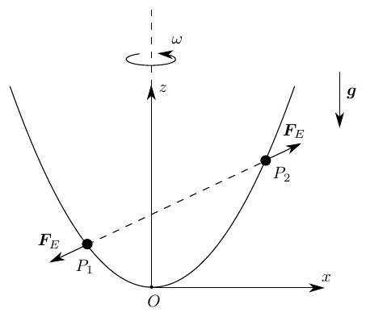
- (a)Write down the position, velocity, and acceleration vectors of each particle relative to $Oxyz$ in a generic instant of time, as a function of $x_1$, $x_2$ (the position of $P_1$ and $P_2$ along the $Ox$ axis) and their derivatives.
- (b)Write down Newton's second law for each particle in the $Oxyz$ reference frame.
- (c)If the rotation of the wire is maintained by a motor, how much torque must it produce in the $Oz$ direction to keep $\omega$ constant as a function of the variables of the problem and their derivatives?
- (d)Find out the equilibrium configurations of the system in the reference frame $Oxyz$ as a function of the parameters $\gamma = g/(\omega^2L)$ and $\kappa = k/(m\omega^2L^3)$.
Consider now that $P_1$ and $P_2$ are constrained to move symmetrically on each branch of the parabola, and that $\gamma = \kappa = 2$. Initially, $x_1(0) = L$ and $v_1(0) = L\omega$ (with $\dot x_1(0) \gt 0$).
- (e)Write down the equation that gives the minimum and maximum values of $x_1$ occurring in this case. Hint: this equation is a third-order polynomial in $x_1$.
Worked Solution (4-Phase Methodology) [ Click to Expand ]
Physical Statement, Hypotheses & Parameters
- System: two particles $P_1$, $P_2$ of mass $m$ slide on a smooth parabolic wire $z = x^2/(2L)$ that spins about its vertical axis $Oz$ at constant $\omega$. They repel each other with $F_E = k/d^2$ along the line that joins them, and both are heavy.
- Why the rotating frame $Oxyz$. In $Oxyz$ the wire is fixed, so each particle is located by a single coordinate $x_i$ and its relative kinematics is that of a point on a fixed plane curve. The frame rotates uniformly about a fixed axis through $O$, so the inertia forces reduce to the centrifugal and Coriolis forces (Slide 28), and the centrifugal force has a potential (Slide 30).
- Hypotheses:
1. The frame $S_0 = \{O; \mathbf{i}_0, \mathbf{j}_0, \mathbf{k}_0\}$, with $O$ the vertex of the parabola and $\mathbf{k}_0$ vertical upward, is inertial.
2. The wire is smooth and bilateral (each particle is a bead): its reaction on $P_i$ is perpendicular to the wire, with components in the plane of the wire and along $\mathbf{j}_1$.
3. $\omega$ is kept constant by the motor; the axis bearings exert no torque about $Oz$.
4. Electric repulsion is a central internal force: equal and opposite on the two particles, along $\overrightarrow{P_2P_1}$. - Degrees of freedom: two, the abscissas $x_1$ and $x_2$ in $Oxyz$. In part (e) the symmetry constraint $x_2 = -x_1$ leaves one.
| Symbol | Meaning | SI unit |
|---|---|---|
| $m$ | mass of each particle | kg |
| $L$ | parameter of the parabola $z = x^2/(2L)$ (the radius of curvature at the vertex) | m |
| $\omega$ | constant angular velocity of the wire | rad/s |
| $g$ | gravitational acceleration | m/s$^2$ |
| $k$ | electric repulsion constant, $F_E = k/d^2$ | N$\cdot$m$^2$ |
| $\gamma = g/(\omega^2L)$ | weight versus centrifugal force | 1 |
| $\kappa = k/(m\omega^2L^3)$ | repulsion versus centrifugal force | 1 |
Reference Frames, Vector Bases & Rotation Matrices
- Frames. $S_0 = \{O; \mathbf{i}_0, \mathbf{j}_0, \mathbf{k}_0\}$ inertial; $S_1 = Oxyz = \{O; \mathbf{i}_1, \mathbf{j}_1, \mathbf{k}_1\}$ attached to the wire, with the wire in the plane $Oxz$ and $\mathbf{k}_1 = \mathbf{k}_0$ along the axis. The two frames share the origin $O$, which lies on the axis and is fixed.
- Change of basis (rotation of angle $\omega t$ about $\mathbf{k}_0$, with $\mathbf{i}_1 = \mathbf{i}_0$ at $t = 0$; columns are $\mathbf{i}_1, \mathbf{j}_1, \mathbf{k}_1$ in $\mathcal{B}_0$):
The columns are unit vectors and mutually orthogonal, so $[{}_0R_1][{}_0R_1]^T = I$.
- Motion of $S_1$: $\mathbf{r}_0^O = \mathbf{v}_0^O = \mathbf{a}_0^O = \mathbf{0}$; $\boldsymbol{\omega}_{10} = \omega\mathbf{k}_1$; $\boldsymbol{\alpha}_{10} = \mathbf{0}$ because $\omega$ is constant.
- Local geometry of the wire at $P_i$. A tangent vector is $\dfrac{d}{dx}\left(x\,\mathbf{i}_1 + \dfrac{x^2}{2L}\mathbf{k}_1\right) = \mathbf{i}_1 + \dfrac{x}{L}\mathbf{k}_1$. With $s_i = \sqrt{1 + x_i^2/L^2}$, the unit tangent and the in-plane unit normal (towards the concave side) are
They are orthogonal, $\mathbf{t}_i\cdot\mathbf{n}_i = \dfrac{1}{s_i^2}\left(-\dfrac{x_i}{L} + \dfrac{x_i}{L}\right) = 0$, and, using $\mathbf{i}_1\times\mathbf{k}_1 = -\mathbf{j}_1$ and $\mathbf{k}_1\times\mathbf{i}_1 = \mathbf{j}_1$,
so $\{\mathbf{t}_i, \mathbf{n}_i, -\mathbf{j}_1\}$ is a right-handed orthonormal triad attached to the wire at $P_i$. The reaction of the smooth wire lies in the plane spanned by $\mathbf{n}_i$ and $\mathbf{j}_1$.
Step-by-Step Mathematical Deduction
(a) Relative position, velocity and acceleration
For $i = 1, 2$, the position on the wire is
Chain rule: $\dfrac{d}{dt}\left(\dfrac{x_i^2}{2L}\right) = \dfrac{2x_i}{2L}\,\dot x_i = \dfrac{x_i\dot x_i}{L}$. Hence
Product rule on $x_i\dot x_i$: $\dfrac{d}{dt}(x_i\dot x_i) = \dot x_i\dot x_i + x_i\ddot x_i$. Hence
Note $\mathbf{v}_1^{P_i} = s_i\dot x_i\,\mathbf{t}_i$, tangent to the wire, as it must be.
(b) Newton's second law in $Oxyz$
Actual forces on $P_i$:
- Weight: $-mg\,\mathbf{k}_1$.
- Reaction of the smooth wire: $\mathbf{N}_i = N_{in}\,\mathbf{n}_i + N_{iy}\,\mathbf{j}_1$ (so $\mathbf{N}_i\cdot\mathbf{t}_i = 0$).
- Electric repulsion. With $\Delta x = x_1 - x_2$ and $\Delta z = \dfrac{x_1^2 - x_2^2}{2L} = \Delta x\,\dfrac{x_1 + x_2}{2L}$,
The force on $P_1$ has magnitude $k/d^2$ and the direction of $\overrightarrow{P_2P_1}/d$, and the force on $P_2$ is opposite:
Inertia forces ($\mathbf{a}_0^O = \mathbf{0}$, $\boldsymbol{\alpha}_{10} = \mathbf{0}$, so $\mathbf{F}_A = \mathbf{F}_E^{\text{Euler}} = \mathbf{0}$):
- Centrifugal: $\boldsymbol{\omega}_{10}\times\mathbf{r}_1^{P_i} = \omega\mathbf{k}_1\times\left(x_i\mathbf{i}_1 + \tfrac{x_i^2}{2L}\mathbf{k}_1\right) = \omega x_i\,\mathbf{j}_1$, then $\boldsymbol{\omega}_{10}\times\omega x_i\mathbf{j}_1 = \omega^2x_i\,(\mathbf{k}_1\times\mathbf{j}_1) = -\omega^2x_i\,\mathbf{i}_1$, so $\mathbf{F}_{C,i} = m\omega^2x_i\,\mathbf{i}_1$ (outward from the axis, Slide 30).
- Coriolis: $\boldsymbol{\omega}_{10}\times\mathbf{v}_1^{P_i} = \omega\mathbf{k}_1\times\left(\dot x_i\mathbf{i}_1 + \tfrac{x_i\dot x_i}{L}\mathbf{k}_1\right) = \omega\dot x_i\,\mathbf{j}_1$, so $\mathbf{F}_{COR,i} = -2m\omega\dot x_i\,\mathbf{j}_1$.
Newton's second law for each particle (vector form):
Projection on $s_i\mathbf{t}_i = \mathbf{i}_1 + \dfrac{x_i}{L}\mathbf{k}_1$ (no reaction). Left side: $m\left[\ddot x_i + \dfrac{x_i}{L}\cdot\dfrac{\dot x_i^2 + x_i\ddot x_i}{L}\right] = m\left[\left(1 + \dfrac{x_i^2}{L^2}\right)\ddot x_i + \dfrac{x_i\dot x_i^2}{L^2}\right]$. Right side: weight $-mg\,x_i/L$; centrifugal $m\omega^2x_i$; Coriolis $0$; electric, for $P_1$,
and for $P_2$ the same with the indices exchanged (because $\mathbf{F}_{E2} = -\mathbf{F}_{E1}$ and $-\Delta x = x_2 - x_1$). The equations of motion are
with $d^3 = |x_1 - x_2|^3\left[1 + \dfrac{(x_1 + x_2)^2}{4L^2}\right]^{3/2}$.
Projection on $\mathbf{j}_1$: $0 = N_{iy} - 2m\omega\dot x_i$, so $\boxed{N_{iy} = 2m\omega\dot x_i}$: the wire pushes each bead sideways to cancel the Coriolis force.
Projection on $s_i\mathbf{n}_i = -\dfrac{x_i}{L}\mathbf{i}_1 + \mathbf{k}_1$. Left side: $m\left[-\dfrac{x_i\ddot x_i}{L} + \dfrac{\dot x_i^2 + x_i\ddot x_i}{L}\right] = \dfrac{m\dot x_i^2}{L}$. Right side: $N_{in}s_i - mg - \dfrac{m\omega^2x_i^2}{L} + \mathbf{F}_{Ei}\cdot(s_i\mathbf{n}_i)$, where for $P_1$
and the same value is found for $P_2$. Therefore
(c) Motor torque that keeps $\omega$ constant
Balance of moments about $Oz$ on the wire: $M + \sum_i \left[\mathbf{r}^{P_i}\times(-\mathbf{N}_i)\right]\cdot\mathbf{k}_1 = 0$. Expand the cross product with $\mathbf{r}^{P_i} = x_i\mathbf{i}_1 + z_i\mathbf{k}_1$ and $\mathbf{N}_i = N_{ix}\mathbf{i}_1 + N_{iy}\mathbf{j}_1 + N_{iz}\mathbf{k}_1$; its $\mathbf{k}_1$ component is $x_iN_{iy} - 0\cdot N_{ix} = x_iN_{iy}$. With $N_{iy} = 2m\omega\dot x_i$ from part (b):
Check with the angular momentum of the particles in $S_0$. By Notes Eq. 3.26, $\mathbf{v}_0^{P_i} = \mathbf{v}_1^{P_i} + \boldsymbol{\omega}_{10}\times\mathbf{r}_1^{P_i} = \dot x_i\mathbf{i}_1 + \omega x_i\mathbf{j}_1 + \tfrac{x_i\dot x_i}{L}\mathbf{k}_1$, whose $\mathbf{k}_1$-moment about $O$ is $m\left[x_i(\omega x_i) - 0\cdot\dot x_i\right] = m\omega x_i^2$. So $H_{Oz} = m\omega(x_1^2 + x_2^2)$ and, by the product and chain rules, $\dot H_{Oz} = 2m\omega(x_1\dot x_1 + x_2\dot x_2)$. The weights are parallel to $Oz$ and the electric pair is central ($(\mathbf{r}^{P_1} - \mathbf{r}^{P_2})\times\mathbf{F}_{E1} = \mathbf{0}$), so only the reactions have a moment about $Oz$, and that moment equals $M$. Both routes agree with the official key (Problems.pdf, p. 75).
(d) Equilibrium configurations in $Oxyz$
With $\dot x_i = \ddot x_i = 0$, $x_i = Lu_i$ and $d = LD$, $D = |u_1 - u_2|\sqrt{1 + (u_1 + u_2)^2/4}$, dividing by $m\omega^2L$:
Sum. With $S = u_1 + u_2$, the electric terms add to $\dfrac{\kappa}{D^3}(u_1 - u_2)\left[\dfrac{u_1S}{2} - \dfrac{u_2S}{2}\right] = \dfrac{\kappa\,(u_1 - u_2)^2S}{2D^3}$, so
Either $S = 0$ (symmetric configuration) or $\gamma - 1 = \dfrac{\kappa(u_1 - u_2)^2}{2D^3} \gt 0$.
Case $\gamma \lt 1$. If $S = 0$, $u_2 = -u_1$, $D = 2|u_1|$ and $f_1 = u_1\left[(1 - \gamma) + \dfrac{2\kappa}{8|u_1|^3}\right]$: both terms of the bracket are positive and $u_1 \neq 0$ (the particles cannot coincide), so $f_1 \neq 0$. If $S \neq 0$ the bracket of the sum is positive. No equilibrium exists. (Centrifugal force beats gravity everywhere and the repulsion only pushes the particles further out.)
Case $\gamma = 1$. Both alternatives require $\kappa = 0$. For $\kappa \gt 0$ there is no equilibrium; only without repulsion ($\kappa = 0$) is every configuration an equilibrium (gravity and centrifugal force balance along the wire at every point: $(\omega^2 - g/L)x_i = 0$).
Case $\gamma \gt 1$, symmetric ($x_2 = -x_1$). $f_1 = u_1\left[(1 - \gamma) + \dfrac{\kappa}{4|u_1|^3}\right] = 0$ gives $|u_1|^3 = \dfrac{\kappa}{4(\gamma - 1)}$:
Case $\gamma \gt 1$, asymmetric ($S \neq 0$). Insert $\dfrac{\kappa}{D^3} = \dfrac{2(\gamma - 1)}{(u_1 - u_2)^2}$ from the sum into $f_1 = 0$ and divide by $(\gamma - 1)$:
The particles are on opposite branches and the chord $P_1P_2$ passes through the focus $(0, L/2)$ of the parabola. Then $u_2 = -1/u_1$, $S = u_1 - 1/u_1$, $u_1 - u_2 = u_1 + 1/u_1$, and $1 + S^2/4 = (u_1 + 1/u_1)^2/4$, so $D^3 = |u_1 + 1/u_1|^6/8$ and the sum condition becomes
Since $|u_1 + 1/u_1| \ge 2$, with equality only for $|u_1| = 1$ (which is the symmetric equilibrium), asymmetric equilibria exist if and only if $\kappa \gt 4(\gamma - 1)$, i.e. exactly when the symmetric equilibrium lies at $|x_1| \gt L$. They come in mirror pairs, $u_1 = \tfrac12\left[q \pm \sqrt{q^2 - 4}\right]$ with $q = (4\kappa/(\gamma - 1))^{1/4}$ and $u_2 = -1/u_1$ (plus the configurations with the labels exchanged). No equilibrium has both particles on the same branch.
(e) Symmetric motion with $\gamma = \kappa = 2$: turning points
Put $x_1 = x \gt 0$, $x_2 = -x$ (the repulsion becomes infinite at $x = 0$, so $x_1$ stays positive). Then $d = 2x$ and, for each particle, $|\mathbf{v}_1^{P_i}|^2 = \dot x^2\left(1 + x^2/L^2\right)$.
- Kinetic energy: $T_1 = 2\cdot\tfrac12 m\dot x^2\left(1 + \dfrac{x^2}{L^2}\right) = m\dot x^2\left(1 + \dfrac{x^2}{L^2}\right)$.
- Gravity: $2\,mg\,\dfrac{x^2}{2L} = \dfrac{mgx^2}{L}$. Centrifugal: $2\left(-\tfrac12 m\omega^2x^2\right) = -m\omega^2x^2$. Electric: $\dfrac{k}{d} = \dfrac{k}{2x}$ (its gradient gives the repulsion $k/d^2$).
Initial value. $|\mathbf{v}_1^{P_1}(0)| = L\omega$ at $x = L$ gives $2\dot x(0)^2 = L^2\omega^2$, so $T_1(0) = mL^2\omega^2$ and $E_1 = mL^2\omega^2 + m(g/L - \omega^2)L^2 + k/(2L)$. Dividing by $m\omega^2L^2$, with $u = x/L$:
Turning points ($\dot x = 0$): $(\gamma - 1)u^2 + \dfrac{\kappa}{2u} = \gamma + \dfrac{\kappa}{2}$, i.e. $u^2 + \dfrac1u = 3$. Multiply by $u \gt 0$:
Roots. With $u = 2\cos\theta$ and $4\cos^3\theta - 3\cos\theta = \cos3\theta$: $8\cos^3\theta - 6\cos\theta + 1 = 2\cos3\theta + 1 = 0$, so $\cos3\theta = -\tfrac12$ and $\theta = 2\pi/9,\ 4\pi/9,\ 8\pi/9$. The roots are $u = 2\cos(2\pi/9) = 1.532$, $2\cos(4\pi/9) = 0.347$ and $2\cos(8\pi/9) = -1.879$ (rejected, $x_1 \gt 0$). Since the starting point $u = 1$ lies between the two positive roots (there $u^2 + 1/u = 2 \lt 3$),
and $x_1$ oscillates between them. The key also lists $x_1^3/L^3 - 3x_1/L - 1 = 0$ for $x_1 \lt 0$: that is the mirror image (a start on the negative branch) and does not apply to $x_1(0) = L \gt 0$.
Physical Interpretation & Dimensional Verification
- Effective spring along the wire. Gravity and the centrifugal force combine into $m(\omega^2 - g/L)x_i$ in the tangential equation: a restoring force if $\gamma \gt 1$ (gravity wins and pulls the beads to the vertex) and a repelling one if $\gamma \lt 1$. Equilibrium requires the repulsion to be balanced by this restoring force, hence the condition $\gamma \gt 1$.
- Limits. $\kappa \to 0$: the symmetric equilibrium collapses to $x_1 = x_2 = 0$ (no repulsion to separate the beads). $\gamma \to 1^+$: $x_1^2 \to \infty$, the restoring force vanishes and the beads are pushed to infinity.
- Torque sign. $M = \tfrac{d}{dt}\left[m\omega(x_1^2 + x_2^2)\right]$: when the beads move outward the moment of inertia of the system grows and the motor has to supply angular momentum ($M \gt 0$); when they move inward it must brake ($M \lt 0$).
- Inertial check. Differentiating $[{}_0R_1]\mathbf{r}_1^{P_i}$ twice reproduces $\mathbf{a}_1^{P_i} + \boldsymbol{\omega}_{10}\times(\boldsymbol{\omega}_{10}\times\mathbf{r}_1^{P_i}) + 2\boldsymbol{\omega}_{10}\times\mathbf{v}_1^{P_i}$ (Notes Eq. 3.27), and $dE_1/dt = 0$ along the equations of motion of part (b) (both checked symbolically with sympy, together with the equilibria of part (d)).
- Dimensions. $[k/d^2] = \text{N}\cdot\text{m}^2/\text{m}^2 = \text{N}$; $[m\omega^2x] = \text{kg}\cdot\text{s}^{-2}\cdot\text{m} = \text{N}$; $[M] = [m\omega x\dot x] = \text{kg}\cdot\text{s}^{-1}\cdot\text{m}\cdot\text{m/s} = \text{N}\cdot\text{m}$; $[\gamma] = \dfrac{\text{m/s}^2}{\text{s}^{-2}\,\text{m}} = 1$; $[\kappa] = \dfrac{\text{N}\cdot\text{m}^2}{\text{kg}\cdot\text{s}^{-2}\cdot\text{m}^3} = 1$.
Particle on a Circular Wire in an Oscillating Vertical Plane
Original statement · Problems.pdf, p. 22A heavy point particle $P$ of mass $m$ slides without friction on a circular wire of center $C$ and radius $R$. The wire is located on a vertical plane $Oxy$ that rotates about the vertical axis $Oy$ with a prescribed angular frequency $\boldsymbol{\Omega}(t) = A\omega\sin(\omega t)\,\mathbf{j}$, where $A$ and $\omega$ are known positive constants, as shown in the figure. The angle that the vector $\overrightarrow{CP}$ makes with the $Ox$ axis is denoted $\varphi$.
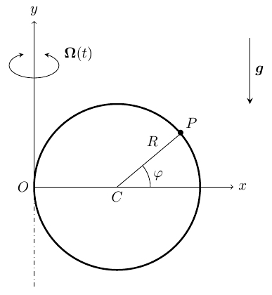
Answer the following questions in a reasoned way:
- (a)Write down the position, velocity and acceleration vectors of $P$ relative to the reference frame $Oxyz$, as a function of $\varphi$ and its derivatives.
- (b)Identify the forces that act on $P$, and write down their mathematical expression for a generic instant of time $t$.
- (c)Is the mechanical energy of $P$ conserved as seen from the $Oxy$ reference frame? Why?
- (d)Write down a single second order differential equation to calculate $\varphi$ as a function of time. Note that you do not need to solve this equation.
- (e)Compute the reaction of the wire on the particle $P$ as a function of $\varphi$, $\dot\varphi$ and $t$.
- (f)Assume now that $A^2 \ll g/(R\omega^2)$ and that the motion of $P$ is such that $\varphi = \delta - \pi/2$ with $\delta \ll 1$. Around what value of $\delta$ does the particle oscillate? Are there any values of $\omega$ for which the approximation $\delta \ll 1$ will not hold?
Worked Solution (4-Phase Methodology) [ Click to Expand ]
Physical Statement, Hypotheses & Parameters
- System: a heavy bead $P$ (mass $m$) slides on a smooth circular wire of radius $R$ whose centre $C$ lies on the $Ox$ axis at distance $R$ from $O$ (the circle passes through $O$). The vertical plane $Oxy$ of the wire swings about the vertical axis $Oy$ with the prescribed angular velocity $\boldsymbol{\Omega}(t) = A\omega\sin(\omega t)\,\mathbf{j}$.
- Why the frame $Oxyz$. The wire is fixed in $Oxyz$, so $P$ is described by the single angle $\varphi$ and its relative kinematics is that of circular motion. Because $\Omega$ depends on time, the inertia forces now include the Euler force $-m\boldsymbol{\alpha}_{10}\times\mathbf{r}_1^P$ (Slide 28), which has no potential (Slide 31), and the centrifugal potential depends explicitly on time; the energy discussion of part (c) depends on both facts.
- Hypotheses:
1. A frame $S_0$ with origin $O$ on the fixed vertical axis is inertial; $Oy$ is vertical upward and gravity is $-g\,\mathbf{j}$.
2. The wire is smooth and bilateral: the reaction is perpendicular to the tangent of the wire, with a radial component in the plane of the wire and a component along $\mathbf{k}_1$, normal to the plane.
3. The rotation of the plane is prescribed (imposed by an external drive whatever the motion of $P$). - Degrees of freedom: one, the angle $\varphi$ of $\overrightarrow{CP}$ measured from $Ox$.
| Symbol | Meaning | SI unit |
|---|---|---|
| $m$ | mass of $P$ | kg |
| $R$ | radius of the wire ($OC = R$) | m |
| $A$ | amplitude parameter of $\Omega(t)$ | 1 (rad) |
| $\omega$ | frequency of the oscillation of the plane | rad/s |
| $g$ | gravitational acceleration | m/s$^2$ |
| $\varphi$ | angle of $\overrightarrow{CP}$ from $Ox$ | rad |
Reference Frames, Vector Bases & Rotation Matrices
- Frames. $S_1 = Oxyz = \{O; \mathbf{i}_1, \mathbf{j}_1, \mathbf{k}_1\}$ attached to the plane of the wire ($\mathbf{i}_1$ along $Ox$, $\mathbf{j}_1$ along $Oy$ upward, $\mathbf{k}_1 = \mathbf{i}_1\times\mathbf{j}_1$ normal to the plane). $S_0 = \{O; \mathbf{i}_0, \mathbf{j}_0, \mathbf{k}_0\}$ inertial, with $\mathbf{j}_0 = \mathbf{j}_1$ (the rotation axis) and $S_1$ coinciding with $S_0$ at $t = 0$.
- Angle turned by the plane. With $\psi(t)$ the angle of rotation about $\mathbf{j}_0$, $\dot\psi = \Omega(t)$ and $\psi(0) = 0$. Integrating with the substitution $u = \omega\tau$, $du = \omega\,d\tau$, and Barrow's rule:
The plane swings between $\psi = 0$ and $\psi = 2A$: it oscillates, it does not spin.
- Change of basis (simple rotation of angle $\psi$ about $\mathbf{j}_0$, Notes Eqs. 1.18–1.20; columns are $\mathbf{i}_1, \mathbf{j}_1, \mathbf{k}_1$ in $\mathcal{B}_0$):
The columns are unit vectors and pairwise orthogonal ($\cos\psi\sin\psi - \sin\psi\cos\psi = 0$), so $[{}_0R_1][{}_0R_1]^T = I$. Poisson check: $\left.\dfrac{d\mathbf{i}_1}{dt}\right|_0 = \dot\psi\left(-\sin\psi\,\mathbf{i}_0 - \cos\psi\,\mathbf{k}_0\right) = -\dot\psi\,\mathbf{k}_1$, and indeed $\Omega\,\mathbf{j}_1\times\mathbf{i}_1 = -\Omega\,\mathbf{k}_1$.
- Motion of $S_1$: origin fixed on the axis, $\mathbf{r}_0^O = \mathbf{v}_0^O = \mathbf{a}_0^O = \mathbf{0}$;
($\mathbf{j}_1 = \mathbf{j}_0$ is fixed, and the chain rule gives $\tfrac{d}{dt}\sin\omega t = \omega\cos\omega t$.)
- Polar basis of the wire (fixed in shape in $S_1$): $\mathbf{e}_r = \cos\varphi\,\mathbf{i}_1 + \sin\varphi\,\mathbf{j}_1$ (along $\overrightarrow{CP}$), $\mathbf{e}_\varphi = -\sin\varphi\,\mathbf{i}_1 + \cos\varphi\,\mathbf{j}_1$ (tangent), and $\mathbf{k}_1 = \mathbf{e}_r\times\mathbf{e}_\varphi$ ($\cos^2\varphi + \sin^2\varphi = 1$). Its matrix in $\mathcal{B}_1$ is a rotation about $\mathbf{k}_1$, with determinant $\cos^2\varphi + \sin^2\varphi = 1$.
Step-by-Step Mathematical Deduction
(a) Relative position, velocity and acceleration
$\mathbf{r}_1^P = \overrightarrow{OC} + \overrightarrow{CP}$ with $\overrightarrow{OC} = R\,\mathbf{i}_1$ and $\overrightarrow{CP} = R\,\mathbf{e}_r$:
With $\tfrac{d}{dt}\cos\varphi = -\sin\varphi\,\dot\varphi$ and $\tfrac{d}{dt}\sin\varphi = \cos\varphi\,\dot\varphi$:
Product rule on each component, e.g. $\tfrac{d}{dt}\left(-R\dot\varphi\sin\varphi\right) = -R\ddot\varphi\sin\varphi - R\dot\varphi^2\cos\varphi$:
(b) Forces acting on $P$
Actual forces:
- Weight: $\mathbf{W} = -mg\,\mathbf{j}_1$.
- Reaction of the smooth wire (no component along the tangent $\mathbf{e}_\varphi$): $\mathbf{N} = N_1\,\mathbf{e}_r + N_2\,\mathbf{k}_1 = N_1\cos\varphi\,\mathbf{i}_1 + N_1\sin\varphi\,\mathbf{j}_1 + N_2\,\mathbf{k}_1$.
Inertia forces (cross products with $\mathbf{j}_1\times\mathbf{i}_1 = -\mathbf{k}_1$, $\mathbf{j}_1\times\mathbf{j}_1 = \mathbf{0}$, $\mathbf{j}_1\times\mathbf{k}_1 = \mathbf{i}_1$):
- Origin: $\mathbf{F}_A = -m\mathbf{a}_0^O = \mathbf{0}$.
- Euler: $\boldsymbol{\alpha}_{10}\times\mathbf{r}_1^P = \dot\Omega\,\mathbf{j}_1\times\left[R(1 + \cos\varphi)\mathbf{i}_1 + R\sin\varphi\,\mathbf{j}_1\right] = -\dot\Omega R(1 + \cos\varphi)\,\mathbf{k}_1$, so
- Centrifugal: $\boldsymbol{\omega}_{10}\times\mathbf{r}_1^P = -\Omega R(1 + \cos\varphi)\,\mathbf{k}_1$ and $\boldsymbol{\omega}_{10}\times\left(-\Omega R(1 + \cos\varphi)\mathbf{k}_1\right) = -\Omega^2R(1 + \cos\varphi)\,\mathbf{i}_1$, so (Slide 30, distance to the axis $x = R(1 + \cos\varphi)$)
- Coriolis: $\boldsymbol{\omega}_{10}\times\mathbf{v}_1^P = \Omega R\dot\varphi\,\mathbf{j}_1\times\left(-\sin\varphi\,\mathbf{i}_1 + \cos\varphi\,\mathbf{j}_1\right) = \Omega R\dot\varphi\sin\varphi\,\mathbf{k}_1$, so
(c) Is the mechanical energy conserved in $Oxy$?
- $\mathbf{N}\cdot\mathbf{v}_1^P = R\dot\varphi\,(N_1\mathbf{e}_r + N_2\mathbf{k}_1)\cdot\mathbf{e}_\varphi = 0$ (the wire is fixed in $S_1$).
- $\mathbf{F}_E$ and $\mathbf{F}_{COR}$ are along $\mathbf{k}_1$, normal to the plane in which $\mathbf{v}_1^P$ lies: they do no work. (In general the Euler force has no potential, Slide 31; here it happens to be powerless.)
- The weight has the potential $mgy = mgR\sin\varphi$.
- The centrifugal force has the potential $V_C = -\tfrac12 m\Omega(t)^2x^2$, but it depends explicitly on time because $\Omega$ does.
Define $E_1^P = \tfrac12 mR^2\dot\varphi^2 + mgR\sin\varphi - \tfrac12 m\Omega^2R^2(1 + \cos\varphi)^2$. Differentiating with the chain and product rules,
The first three terms are $mR^2\dot\varphi$ times the equation of motion of part (d), so they cancel, leaving
No: the mechanical energy of $P$ in $Oxy$ is not conserved, because the centrifugal potential changes with time (the frame does not rotate at a constant rate). It would be conserved if $\Omega$ were constant. Nor is the energy conserved in $S_0$: there the wire moves and its reaction $N_2\mathbf{k}_1$ does work.
(d) Equation of motion
Projections on $\mathbf{e}_\varphi = -\sin\varphi\,\mathbf{i}_1 + \cos\varphi\,\mathbf{j}_1$: $m\mathbf{a}_1^P\cdot\mathbf{e}_\varphi = mR\ddot\varphi$; $\mathbf{W}\cdot\mathbf{e}_\varphi = -mg\cos\varphi$; $\mathbf{F}_C\cdot\mathbf{e}_\varphi = -m\Omega^2R(1 + \cos\varphi)\sin\varphi$. Hence $mR\ddot\varphi = -mg\cos\varphi - m\Omega^2R(1 + \cos\varphi)\sin\varphi$, i.e.
a nonlinear equation with a time-periodic coefficient (parametric forcing). It agrees with the official key.
(e) Reaction of the wire
Along $\mathbf{e}_r$: $m\mathbf{a}_1^P\cdot\mathbf{e}_r = -mR\dot\varphi^2$; $\mathbf{W}\cdot\mathbf{e}_r = -mg\sin\varphi$; $\mathbf{F}_C\cdot\mathbf{e}_r = m\Omega^2R(1 + \cos\varphi)\cos\varphi$. So $-mR\dot\varphi^2 = N_1 - mg\sin\varphi + m\Omega^2R(1 + \cos\varphi)\cos\varphi$:
Along $\mathbf{k}_1$: $m\mathbf{a}_1^P\cdot\mathbf{k}_1 = 0 = N_2 + mA\omega^2R\cos(\omega t)(1 + \cos\varphi) - 2mA\omega R\dot\varphi\sin(\omega t)\sin\varphi$:
and $\mathbf{N} = N_1\cos\varphi\,\mathbf{i}_1 + N_1\sin\varphi\,\mathbf{j}_1 + N_2\,\mathbf{k}_1$. Both components agree with the official key. The normal component $N_2$ is what the wire must supply to drag $P$ along with the swinging plane (it balances the Euler and Coriolis forces).
(f) Small oscillations about the lowest point
With $\varphi = \delta - \pi/2$: $\cos\varphi = \cos(\delta - \pi/2) = \sin\delta \approx \delta$, $\sin\varphi = \sin(\delta - \pi/2) = -\cos\delta \approx -1$, $\ddot\varphi = \ddot\delta$. Substituting into the equation of part (d) and keeping first-order terms:
Dropping $A^2\omega^2\sin^2(\omega t)\,\delta$ (small compared with $(g/R)\,\delta$) and using $\sin^2(\omega t) = \tfrac12\left[1 - \cos(2\omega t)\right]$:
Solution. With $\omega_n = \sqrt{g/R}$, a particular solution is a constant plus a term at $2\omega$. The constant $\delta_0$ satisfies $\omega_n^2\delta_0 = A^2\omega^2/2$. For $\delta_p = C\cos(2\omega t)$, $\ddot\delta_p = -4\omega^2C\cos(2\omega t)$ and $(\omega_n^2 - 4\omega^2)\,C = -A^2\omega^2/2$. Hence
($a$, $b$ set by the initial conditions). The particle oscillates, with natural frequency $\omega_n = \sqrt{g/R}$, about
which is small, consistent with $A^2 \ll g/(R\omega^2)$. It is positive: on average the bead is displaced slightly outward, away from the axis, by the mean centrifugal force.
Breakdown. The forced amplitude $|C| = \dfrac{A^2\omega^2}{2\left|\omega_n^2 - 4\omega^2\right|}$ grows without bound when $2\omega \to \omega_n$, i.e. for
At exact resonance the particular solution is $\delta_p = -\dfrac{A^2\omega^2}{4\omega_n}\,t\sin(\omega_nt)$ (check: $\ddot\delta_p + \omega_n^2\delta_p = -\tfrac{A^2\omega^2}{2}\cos\omega_nt$), whose amplitude grows linearly in time. The assumption $\delta \ll 1$ then fails, as stated in the key.
Physical Interpretation & Dimensional Verification
- Role of each inertia force. The centrifugal force (along $\mathbf{i}_1$, in the plane) is the only inertia force that enters the equation of motion. The Euler and Coriolis forces are normal to the plane: they do not change $\varphi$, but they load the wire through $N_2$.
- Limits. $A \to 0$: $\ddot\varphi + (g/R)\cos\varphi = 0$, the simple pendulum about $\varphi = -\pi/2$ in a fixed plane, and $N_2 = 0$. $\omega \to 0$ with $A$ fixed: $\Omega \to 0$ and the same pendulum is recovered.
- Energy. $dE_1^P/dt$ averages to zero over a period of the forcing ($\sin\omega t\cos\omega t$ has zero mean) but is not zero instant by instant; near resonance the drive pumps energy into the oscillation.
- Inertial check. Differentiating $[{}_0R_1]\mathbf{r}_1^P$ twice reproduces $\mathbf{a}_1^P + \boldsymbol{\alpha}_{10}\times\mathbf{r}_1^P + \boldsymbol{\omega}_{10}\times(\boldsymbol{\omega}_{10}\times\mathbf{r}_1^P) + 2\boldsymbol{\omega}_{10}\times\mathbf{v}_1^P$ (Notes Eq. 3.27), and $m\mathbf{a}_0^P = \mathbf{W} + \mathbf{N}$ holds with the reaction of part (e) (checked symbolically with sympy).
- Dimensions. $[g/R] = [A^2\omega^2] = \text{s}^{-2}$ (same units as $\ddot\varphi$); $[mA^2R\omega^2] = [mR\dot\varphi^2] = [mg] = \text{N}$; $[mAR\omega\dot\varphi] = \text{kg}\cdot\text{m}\cdot\text{s}^{-2} = \text{N}$; $[A^2R\omega^2/g] = \dfrac{\text{m}\cdot\text{s}^{-2}}{\text{m}\cdot\text{s}^{-2}} = 1$, as an angle must be.
A heavy point particle $P$ with mass $m$ hangs from a fixed point $A$ on the ceiling with a massless string of constant length $L$. The particle is initially at rest. A bar $b$ rotates about its center $O$ in a horizontal plane at a distance $h$ from the ceiling, with a known, constant angular velocity $\omega$. The horizontal distance between $O$ and $A$ is $R$. At time $t = 0$, the bar collides with the string and drags it along its motion. The string slides over the bar without friction. We call $C$ the instantaneous point of contact of the string with the bar. We define a reference frame $S_1$ that rotates with the bar as shown in the figure. We call $\xi$ the distance between $O$ and $C$; $\ell$ the length of the string segment between $C$ and $P$; $\theta$ the angle between the vertical plane $Ox_1z_1$ and the plane defined by the bar and $P$; and $\varphi$ the angle formed between the string segment $CP$ and the bar. You are asked to study only the part of the motion in which the string remains tense and in contact with the bar.

- (a)Write down the position and velocity of point $A$ in $S_1$ as a function of time.
- (b)Obtain a general expression for the position, velocity, and acceleration of $P$ in $S_1$ as a function of $\xi$, $\ell$, $\theta$, $\varphi$, their derivatives, and time.
- (c)Express $AC$, $\ell$, and $\varphi$ as a function of $\xi$ and time.
- (d)Identify and express all the forces acting on $P$.
- (e)Write down a set of second order differential equations for the evolution of the unknowns of the problem.
- (f)Compute the initial conditions for the previous equations at $t = 0$.
- (g)Is the mechanical energy of the particle conserved in time? Justify your answer.
- (h)If/when the string separates from the bar, express the geometric condition as a relation between $\theta$ and time.
Worked Solution (4-Phase Methodology) [ Click to Expand ]
Physical Statement, Hypotheses & Parameters
- System: a heavy particle $P$ (mass $m$) hangs from the fixed ceiling point $A$ by a string of length $L$. A bar turning at constant rate $\omega$ about the vertical axis through its centre $O$, in a horizontal plane a distance $h$ below the ceiling, hits the string at $t = 0$ and drags it. The string then runs $A \to C \to P$, bent over the bar at the contact point $C$.
- Why the frame $S_1$ attached to the bar. In $S_1$ the bar is the fixed axis $Ox_1$, so the contact point is simply $C = (\xi, 0, 0)$ and the string geometry is described by $\xi$, $\ell$, $\varphi$, $\theta$. The price is that $A$ moves in $S_1$ and that the centrifugal and Coriolis forces (Slides 27–28) have to be added. Since $\boldsymbol{\omega}_{10}$ is constant and $O$ is fixed, the Euler force and the force of the origin's acceleration vanish, and the centrifugal force has a potential (Slide 30).
- Hypotheses:
1. A frame $S_0$ with origin $O$ and vertical axis $\mathbf{k}_0$ (upward) is inertial; gravity is $-g\,\mathbf{k}_0$.
2. The string is massless and inextensible, and stays tense ($T \gt 0$) and in contact with the bar (the only phase studied, as the statement asks).
3. The bar is thin (a straight line) and long enough for $C$ to stay on it; the contact is frictionless.
4. The rotation of the bar is prescribed: $\omega$ is kept constant whatever the string does.
5. The bar reaches the string at $t = 0$ while $P$ is at rest below $A$, so $L \gt h$. - Degrees of freedom: $P$ moves in space with the single constraint "string tense", so it has two degrees of freedom. We take $\xi$ and $\theta$; $\ell$ and $\varphi$ are fixed by $\xi$ and $t$ through the constraints of part (c). The tension $T$ is the additional unknown.
| Symbol | Meaning | SI unit |
|---|---|---|
| $m$ | mass of $P$ | kg |
| $L$ | total length of the string | m |
| $h$ | height of the ceiling above the plane of the bar | m |
| $R$ | horizontal distance between $O$ and $A$ | m |
| $\omega$ | angular velocity of the bar (constant) | rad/s |
| $g$ | gravitational acceleration | m/s$^2$ |
| $\xi$ | distance $OC$ along the bar | m |
| $\ell$ | length of the segment $CP$ | m |
| $\varphi$ | angle between $\overrightarrow{CP}$ and the bar ($\mathbf{i}_1$) | rad |
| $\theta$ | angle between the plane $Ox_1z_1$ and the plane bar–$P$ | rad |
| $T$ | tension of the string | N |
Reference Frames, Vector Bases & Rotation Matrices
- Frames. $S_0 = \{O; \mathbf{i}_0, \mathbf{j}_0, \mathbf{k}_0\}$ inertial, $\mathbf{k}_0$ vertical upward and $\mathbf{i}_0$ pointing horizontally from $O$ towards the vertical of $A$, so that $\mathbf{r}_0^A = R\,\mathbf{i}_0 + h\,\mathbf{k}_0$. $S_1 = \{O; \mathbf{i}_1, \mathbf{j}_1, \mathbf{k}_1\}$ attached to the bar, $\mathbf{i}_1$ along the bar, $\mathbf{k}_1 = \mathbf{k}_0$. At $t = 0$ the bar is below $A$, so $S_1$ coincides with $S_0$ at that instant.
- Sense of rotation. In the left drawing ($t \lt 0$) the vertical projection of $A$ lies at positive $x_1$ and positive $y_1$, so the bar reaches it turning from $\mathbf{i}_1$ towards $\mathbf{j}_1$: $\boldsymbol{\omega}_{10} = +\omega\,\mathbf{k}_1$. (The same sign is implied by the Coriolis force of the official key.) The angle turned by the bar is $\omega t$.
- Change of basis (rotation of angle $\omega t$ about $\mathbf{k}_0$; columns are $\mathbf{i}_1, \mathbf{j}_1, \mathbf{k}_1$ in $\mathcal{B}_0$):
The columns are unit vectors and pairwise orthogonal ($-\cos\omega t\sin\omega t + \sin\omega t\cos\omega t = 0$), so $[{}_0R_1][{}_0R_1]^T = I$.
- Motion of $S_1$: $\mathbf{r}_0^O = \mathbf{v}_0^O = \mathbf{a}_0^O = \mathbf{0}$ (the centre of the bar is fixed), $\boldsymbol{\omega}_{10} = \omega\,\mathbf{k}_1$, $\boldsymbol{\alpha}_{10} = \mathbf{0}$ ($\omega$ constant and $\mathbf{k}_1 = \mathbf{k}_0$ fixed).
- String basis $\mathcal{B}_2 = \{\mathbf{e}_{CP}, \mathbf{e}_\theta, \mathbf{e}_\varphi\}$. The segment $CP$ makes the angle $\varphi$ with $\mathbf{i}_1$, and its component perpendicular to the bar lies in the plane bar–$P$, rotated by $\theta$ from the downward vertical; $\theta \gt 0$ puts $P$ on the side $y_1 \lt 0$, the side of $A$ for $0 \lt \omega t \lt \pi$ (this is the sign convention of the official key):
The matrix with columns $\mathbf{e}_{CP}, \mathbf{e}_\theta, \mathbf{e}_\varphi$ in $\mathcal{B}_1$ is
Expanding along the first row: $\det[{}_1R_2] = \cos\varphi\left(\cos\varphi\cos^2\theta + \cos\varphi\sin^2\theta\right) - \sin\varphi\left(-\sin\varphi\sin^2\theta - \sin\varphi\cos^2\theta\right) = \cos^2\varphi + \sin^2\varphi = 1$. Each column has unit norm, and $\mathbf{e}_{CP}\cdot\mathbf{e}_\theta = \sin\varphi\sin\theta\cos\theta - \sin\varphi\cos\theta\sin\theta = 0$, $\mathbf{e}_{CP}\cdot\mathbf{e}_\varphi = -\cos\varphi\sin\varphi + \sin\varphi\cos\varphi\left(\sin^2\theta + \cos^2\theta\right) = 0$, $\mathbf{e}_\theta\cdot\mathbf{e}_\varphi = \cos\theta\cos\varphi\sin\theta - \sin\theta\cos\varphi\cos\theta = 0$, so $[{}_1R_2][{}_1R_2]^T = I$ and $\mathbf{e}_{CP}\times\mathbf{e}_\theta = \mathbf{e}_\varphi$.
- Derivatives of $\mathcal{B}_2$ in $S_1$ (chain rule, $\tfrac{d}{dt}\mathbf{e}(\varphi(t), \theta(t)) = \tfrac{\partial\mathbf{e}}{\partial\varphi}\dot\varphi + \tfrac{\partial\mathbf{e}}{\partial\theta}\dot\theta$, with $\mathbf{i}_1, \mathbf{j}_1, \mathbf{k}_1$ constant in $S_1$). Using $\partial\mathbf{e}_\varphi/\partial\varphi = \cos\varphi\,(-\mathbf{i}_1) + \sin\varphi\sin\theta\,\mathbf{j}_1 + \sin\varphi\cos\theta\,\mathbf{k}_1 = -\mathbf{e}_{CP}$, $\partial\mathbf{e}_\varphi/\partial\theta = -\cos\varphi\cos\theta\,\mathbf{j}_1 + \cos\varphi\sin\theta\,\mathbf{k}_1 = \cos\varphi\,\mathbf{e}_\theta$ and $\partial\mathbf{e}_\theta/\partial\theta = \sin\theta\,\mathbf{j}_1 + \cos\theta\,\mathbf{k}_1 = -\left(\sin\varphi\,\mathbf{e}_{CP} + \cos\varphi\,\mathbf{e}_\varphi\right)$:
Step-by-Step Mathematical Deduction
(a) Position and velocity of $A$ in $S_1$
With the chain rule $\tfrac{d}{dt}\cos\omega t = -\omega\sin\omega t$ and $\tfrac{d}{dt}\sin\omega t = \omega\cos\omega t$:
Check with the velocity composition (Notes Eq. 3.26): $\mathbf{0} = \mathbf{v}_0^A = \mathbf{v}_1^A + \boldsymbol{\omega}_{10}\times\mathbf{r}_1^A$, and $\omega\mathbf{k}_1\times\mathbf{r}_1^A = R\omega\cos\omega t\,\mathbf{j}_1 + R\omega\sin\omega t\,\mathbf{i}_1 = -\mathbf{v}_1^A$. In $S_1$, $A$ describes a circle of radius $R$ at height $h$ with angular velocity $-\omega$.
(b) Position, velocity and acceleration of $P$ in $S_1$
Position:
Velocity. Product rule, $\tfrac{d}{dt}(\ell\,\mathbf{e}_{CP}) = \dot\ell\,\mathbf{e}_{CP} + \ell\left(\dot\varphi\,\mathbf{e}_\varphi + \dot\theta\sin\varphi\,\mathbf{e}_\theta\right)$:
In $\mathcal{B}_1$ (differentiating each component; e.g. $\tfrac{d}{dt}(-\ell\sin\varphi\sin\theta) = -\dot\ell\sin\varphi\sin\theta - \ell\dot\varphi\cos\varphi\sin\theta - \ell\dot\theta\sin\varphi\cos\theta$):
Acceleration. Differentiate term by term:
- $\tfrac{d}{dt}(\dot\xi\,\mathbf{i}_1) = \ddot\xi\,\mathbf{i}_1$;
- $\tfrac{d}{dt}(\dot\ell\,\mathbf{e}_{CP}) = \ddot\ell\,\mathbf{e}_{CP} + \dot\ell\dot\varphi\,\mathbf{e}_\varphi + \dot\ell\dot\theta\sin\varphi\,\mathbf{e}_\theta$;
- $\tfrac{d}{dt}(\ell\dot\varphi\,\mathbf{e}_\varphi) = (\dot\ell\dot\varphi + \ell\ddot\varphi)\,\mathbf{e}_\varphi + \ell\dot\varphi\left(-\dot\varphi\,\mathbf{e}_{CP} + \dot\theta\cos\varphi\,\mathbf{e}_\theta\right)$;
- $\tfrac{d}{dt}(\ell\dot\theta\sin\varphi\,\mathbf{e}_\theta) = \left(\dot\ell\dot\theta\sin\varphi + \ell\ddot\theta\sin\varphi + \ell\dot\theta\dot\varphi\cos\varphi\right)\mathbf{e}_\theta - \ell\dot\theta^2\sin\varphi\left(\sin\varphi\,\mathbf{e}_{CP} + \cos\varphi\,\mathbf{e}_\varphi\right)$.
Collecting along each unit vector:
with $\mathbf{e}_{CP}, \mathbf{e}_\varphi, \mathbf{e}_\theta$ given in $\mathcal{B}_1$ in Phase 2. The bracketed terms are the spherical-coordinate acceleration of $P$ about the moving centre $C$, plus the acceleration $\ddot\xi\,\mathbf{i}_1$ of the centre along the bar. Time enters through $\xi$, $\ell$, $\varphi$, $\theta$ only; the explicit time dependence appears when $\ell$ and $\varphi$ are replaced by the constraints of part (c).
(c) $AC$, $\ell$ and $\varphi$ as functions of $\xi$ and $t$
Vector $\overrightarrow{AC}$: with $\mathbf{r}_1^C = \xi\,\mathbf{i}_1$ and part (a),
Length $\ell$. $AC + CP = L$:
Angle $\varphi$. With no friction the tension is the same, $T$, on both sides of $C$. Equilibrium of the massless string element at $C$: $T\,\mathbf{e}_{CA} + T\,\mathbf{e}_{CP} + \mathbf{N}_b = \mathbf{0}$ with $\mathbf{N}_b\cdot\mathbf{i}_1 = 0$. Projecting on $\mathbf{i}_1$: $\mathbf{e}_{CP}\cdot\mathbf{i}_1 = -\mathbf{e}_{CA}\cdot\mathbf{i}_1$, where $\mathbf{e}_{CA} = -\overrightarrow{AC}/AC$. Hence
($\varphi \in (0, \pi)$, so $\sin\varphi \gt 0$). The two segments make equal angles with the bar, on opposite sides of the plane perpendicular to it. (Extension: this is also the condition for the path $A \to C \to P$ to be the shortest one for fixed $P$, $\tfrac{\partial}{\partial\xi}(AC + CP) = \cos\angle(\overrightarrow{AC}, \mathbf{i}_1) - \cos\varphi = 0$.)
Compact notation for part (e). Let $q = \xi - R\cos\omega t$, $\rho = \sqrt{R^2\sin^2\omega t + h^2}$ and $D = AC = \sqrt{q^2 + \rho^2}$. Then $q = D\cos\varphi$, $\rho = D\sin\varphi$: $(D, \varphi)$ are the polar coordinates of the point $(q, \rho)$, and $\ell = L - D$. Their derivatives:
- $\dot q = \dot\xi + R\omega\sin\omega t$ and $\ddot q = \ddot\xi + R\omega^2\cos\omega t$ (chain rule on $\cos\omega t$).
- From $\rho^2 = R^2\sin^2\omega t + h^2$: $2\rho\dot\rho = 2R^2\omega\sin\omega t\cos\omega t$, so $\dot\rho = \dfrac{R^2\omega\sin 2\omega t}{2\rho}$. Differentiating $\rho\dot\rho = \tfrac12 R^2\omega\sin 2\omega t$ (product rule): $\dot\rho^2 + \rho\ddot\rho = R^2\omega^2\cos 2\omega t$, so $\ddot\rho = \dfrac{R^2\omega^2\cos 2\omega t - \dot\rho^2}{\rho}$.
- Differentiating $q = D\cos\varphi$, $\rho = D\sin\varphi$: $\dot q = \dot D\cos\varphi - D\dot\varphi\sin\varphi$, $\dot\rho = \dot D\sin\varphi + D\dot\varphi\cos\varphi$. Solving this rotation-type system:
- Differentiating once more, $\ddot q = (\ddot D - D\dot\varphi^2)\cos\varphi - (D\ddot\varphi + 2\dot D\dot\varphi)\sin\varphi$ and $\ddot\rho = (\ddot D - D\dot\varphi^2)\sin\varphi + (D\ddot\varphi + 2\dot D\dot\varphi)\cos\varphi$, so
- Finally $\dot\ell = -\dot D$, $\ddot\ell = -\ddot D$. Since $\dot\rho\sin\varphi = \dfrac{R^2\omega\sin\omega t\cos\omega t}{\rho}\dfrac{\rho}{D}$ and $\cos\varphi = q/D$,
(d) Forces acting on $P$
Actual forces:
- Weight: $\mathbf{W} = -mg\,\mathbf{k}_1$.
- Tension, along the string towards $C$: $\mathbf{T} = -T\,\mathbf{e}_{CP} = -T\cos\varphi\,\mathbf{i}_1 + T\sin\varphi\sin\theta\,\mathbf{j}_1 + T\sin\varphi\cos\theta\,\mathbf{k}_1$, with $T \gt 0$.
Inertia forces: write $\mathbf{r}_1^P = x\,\mathbf{i}_1 + y\,\mathbf{j}_1 + z\,\mathbf{k}_1$ with $x = \xi + \ell\cos\varphi$, $y = -\ell\sin\varphi\sin\theta$, and $\mathbf{v}_1^P = v_x\mathbf{i}_1 + v_y\mathbf{j}_1 + v_z\mathbf{k}_1$ from part (b). With $\mathbf{k}_1\times\mathbf{i}_1 = \mathbf{j}_1$, $\mathbf{k}_1\times\mathbf{j}_1 = -\mathbf{i}_1$, $\mathbf{k}_1\times\mathbf{k}_1 = \mathbf{0}$:
- Origin and Euler: $\mathbf{F}_A = -m\mathbf{a}_0^O = \mathbf{0}$, $\mathbf{F}_E = -m\boldsymbol{\alpha}_{10}\times\mathbf{r}_1^P = \mathbf{0}$.
- Centrifugal: $\boldsymbol{\omega}_{10}\times\mathbf{r}_1^P = \omega\left(x\,\mathbf{j}_1 - y\,\mathbf{i}_1\right)$, $\boldsymbol{\omega}_{10}\times\left(\boldsymbol{\omega}_{10}\times\mathbf{r}_1^P\right) = \omega^2\left(-x\,\mathbf{i}_1 - y\,\mathbf{j}_1\right)$, so (Slide 30, $\mathbf{r}_\perp = x\,\mathbf{i}_1 + y\,\mathbf{j}_1$)
- Coriolis: $\boldsymbol{\omega}_{10}\times\mathbf{v}_1^P = \omega\left(v_x\,\mathbf{j}_1 - v_y\,\mathbf{i}_1\right)$, so $\mathbf{F}_{COR} = -2m\boldsymbol{\omega}_{10}\times\mathbf{v}_1^P = 2m\omega v_y\,\mathbf{i}_1 - 2m\omega v_x\,\mathbf{j}_1$:
Both inertia forces agree with the official key.
(e) Equations of motion
Projections of each term (using $\mathbf{i}_1\cdot\mathbf{e}_{CP} = \cos\varphi$, $\mathbf{i}_1\cdot\mathbf{e}_\varphi = -\sin\varphi$, $\mathbf{i}_1\cdot\mathbf{e}_\theta = 0$, and the components of Phase 2):
| Term | $\cdot\,\mathbf{e}_\theta$ | $\cdot\,\mathbf{e}_\varphi$ | $\cdot\,\mathbf{e}_{CP}$ |
|---|---|---|---|
| $\mathbf{a}_1^P$ | $\ell\ddot\theta\sin\varphi + 2\dot\ell\dot\theta\sin\varphi + 2\ell\dot\theta\dot\varphi\cos\varphi$ | $\ell\ddot\varphi + 2\dot\ell\dot\varphi - \ddot\xi\sin\varphi - \ell\dot\theta^2\sin\varphi\cos\varphi$ | $\ddot\xi\cos\varphi + \ddot\ell - \ell\dot\varphi^2 - \ell\dot\theta^2\sin^2\varphi$ |
| $\mathbf{W}$ | $-mg\sin\theta$ | $mg\cos\varphi\cos\theta$ | $mg\sin\varphi\cos\theta$ |
| $\mathbf{T}$ | $0$ | $0$ | $-T$ |
| $\mathbf{F}_C$ | $m\omega^2\ell\sin\varphi\sin\theta\cos\theta$ | $-m\omega^2\sin\varphi\left(\xi + \ell\cos\varphi\cos^2\theta\right)$ | $m\omega^2\left[(\xi + \ell\cos\varphi)\cos\varphi + \ell\sin^2\varphi\sin^2\theta\right]$ |
| $\mathbf{F}_{COR}$ | $2m\omega\cos\theta\,v_x$ | $2m\omega\left[\sin\theta(\dot\ell + \dot\xi\cos\varphi) + \ell\dot\theta\sin^2\varphi\cos\theta\right]$ | $2m\omega\left[\sin\theta(\dot\xi\sin\varphi - \ell\dot\varphi) - \ell\dot\theta\sin\varphi\cos\varphi\cos\theta\right]$ |
Details of the less obvious entries:
- $\mathbf{F}_C\cdot\mathbf{e}_\varphi = m\omega^2\left[-x\sin\varphi - y\cos\varphi\sin\theta\right] = m\omega^2\left[-(\xi + \ell\cos\varphi)\sin\varphi + \ell\sin\varphi\cos\varphi\sin^2\theta\right] = -m\omega^2\sin\varphi\left[\xi + \ell\cos\varphi(1 - \sin^2\theta)\right]$.
- $\mathbf{F}_{COR}\cdot\mathbf{e}_\varphi = 2m\omega\left[-v_y\sin\varphi + v_x\cos\varphi\sin\theta\right]$, where $-v_y\sin\varphi = \dot\ell\sin^2\varphi\sin\theta + \ell\dot\varphi\sin\varphi\cos\varphi\sin\theta + \ell\dot\theta\sin^2\varphi\cos\theta$ and $v_x\cos\varphi\sin\theta = \dot\xi\cos\varphi\sin\theta + \dot\ell\cos^2\varphi\sin\theta - \ell\dot\varphi\sin\varphi\cos\varphi\sin\theta$; the $\dot\varphi$ terms cancel and $\sin^2\varphi + \cos^2\varphi = 1$.
- $\mathbf{F}_{COR}\cdot\mathbf{e}_{CP} = 2m\omega\left[v_y\cos\varphi + v_x\sin\varphi\sin\theta\right]$: the $\dot\ell$ terms cancel and the $\dot\varphi$ terms add up to $-\ell\dot\varphi\sin\theta\left(\cos^2\varphi + \sin^2\varphi\right)$.
- $\mathbf{F}_{COR}\cdot\mathbf{e}_\theta = 2m\omega\left[-v_x\,(-\cos\theta)\right] = 2m\omega\cos\theta\,v_x$, with $v_x = \dot\xi + \dot\ell\cos\varphi - \ell\dot\varphi\sin\varphi$.
Equation along $\mathbf{e}_\theta$ (divided by $m$):
Equation along $\mathbf{e}_\varphi$ (divided by $m$):
Closing the system. $\ell$, $\varphi$ and their derivatives are the functions of $(\xi, \dot\xi, \ddot\xi, t)$ of part (c). In particular $\ell\ddot\varphi = \tfrac{\ell}{D}\left(\ddot\rho\cos\varphi - \ddot q\sin\varphi - 2\dot D\dot\varphi\right)$ with $\ddot q = \ddot\xi + R\omega^2\cos\omega t$, and $2\dot\ell\dot\varphi = -2\dot D\dot\varphi$, so with $\ell + D = L$ the left-hand side of the $\mathbf{e}_\varphi$ equation becomes
The coefficient of $\ddot\xi$, $-(L/D)\sin\varphi$, is non-zero while the string is bent ($\sin\varphi \gt 0$), so the $\mathbf{e}_\varphi$ equation gives $\ddot\xi$ and the $\mathbf{e}_\theta$ equation gives $\ddot\theta$: two second-order ODEs for $\xi(t)$ and $\theta(t)$, non-autonomous through $\omega t$ (the motion of $A$ in $S_1$). In the $\mathbf{e}_\varphi$ equation the Coriolis term can also be written with $\dot\ell + \dot\xi\cos\varphi = -R\omega\xi\sin\omega t/D$.
Tension (projection on $\mathbf{e}_{CP}$, solved for $T$):
The solution is valid while $T \gt 0$ (string tense).
(f) Initial conditions at $t = 0$
Positions. At $t = 0$ the bar lies along $\mathbf{i}_0$, and the string meets it directly below $A$: $\xi(0) = R$. Then $q(0) = R - R = 0$, $\rho(0) = h$, $D(0) = h$, so
($P$ is directly below the bar in the plane $Ox_1z_1$). Check: $\mathbf{r}_1^P(0) = R\,\mathbf{i}_1 - (L - h)\,\mathbf{k}_1$, i.e. $P$ at depth $L - h$ below the bar, $L$ below $A$.
Velocities. $\mathbf{v}_0^P(0) = \mathbf{0}$, and by Notes Eq. 3.26
At $\varphi = \pi/2$, $\theta = 0$: $\mathbf{e}_{CP} = -\mathbf{k}_1$, $\mathbf{e}_\varphi = -\mathbf{i}_1$, $\mathbf{e}_\theta = -\mathbf{j}_1$, so the velocity of part (b) is $\mathbf{v}_1^P(0) = \left(\dot\xi - \ell\dot\varphi\right)\mathbf{i}_1 - \ell\dot\theta\,\mathbf{j}_1 - \dot\ell\,\mathbf{k}_1$. Matching components:
- $\mathbf{k}_1$: $\dot\ell(0) = 0$, consistent with the constraint: $\dot D(0) = \dot q\cos\tfrac{\pi}{2} + \dot\rho(0)\sin\tfrac{\pi}{2} = \dot\rho(0) = \dfrac{R^2\omega\sin 0}{2h} = 0$.
- $\mathbf{j}_1$: $(L - h)\,\dot\theta(0) = \omega R$, so $\dot\theta(0) = \dfrac{\omega R}{L - h}$.
- $\mathbf{i}_1$: $\dot\xi(0) = (L - h)\,\dot\varphi(0)$. From part (c), $D\dot\varphi = \dot\rho\cos\varphi - \dot q\sin\varphi$ gives $h\,\dot\varphi(0) = -\dot q(0) = -\left(\dot\xi(0) + R\omega\sin 0\right) = -\dot\xi(0)$. Substituting, $\dot\xi(0)\left(1 + \dfrac{L - h}{h}\right) = \dot\xi(0)\dfrac{L}{h} = 0$, so $\dot\xi(0) = 0$ and $\dot\varphi(0) = 0$.
In $S_1$ the particle starts moving backwards ($-\mathbf{j}_1$) with the speed $\omega R$ of the point of the bar that hits the string: $P$ lags behind the bar, $\theta$ grows from zero.
(g) Is the mechanical energy conserved?
In $S_1$. Define $E_1^P = \tfrac12 m\left|\mathbf{v}_1^P\right|^2 + mgz - \tfrac12 m\omega^2\left(x^2 + y^2\right)$. By the work–energy theorem in $S_1$, $\dfrac{dE_1^P}{dt} = \mathbf{T}\cdot\mathbf{v}_1^P = -T\,\mathbf{e}_{CP}\cdot\mathbf{v}_1^P$. From part (b), $\mathbf{e}_{CP}\cdot\mathbf{v}_1^P = \dot\xi\cos\varphi + \dot\ell$, and part (c) gives $\dot\ell + \dot\xi\cos\varphi = -R\omega\xi\sin\omega t/D$. Therefore
which is positive for $0 \lt \omega t \lt \pi$ (with $T \gt 0$, $\xi \gt 0$): $E_1^P$ is not conserved. The reason is that the end $A$ of the string moves in $S_1$ (part (a)): the constraint "string tense" depends explicitly on time in $S_1$, and the tension does work on $P$.
In $S_0$. $E_0^P = \tfrac12 m\left|\mathbf{v}_0^P\right|^2 + mgz$ changes at the rate $\mathbf{T}\cdot\mathbf{v}_0^P$ with $\mathbf{v}_0^P = \mathbf{v}_1^P + \boldsymbol{\omega}_{10}\times\mathbf{r}_1^P$ (Notes Eq. 3.26). The extra term is $-T\,\mathbf{e}_{CP}\cdot\omega\left(x\,\mathbf{j}_1 - y\,\mathbf{i}_1\right) = -T\omega\left(-x\sin\varphi\sin\theta - y\cos\varphi\right) = T\omega\sin\varphi\sin\theta\left(\xi + \ell\cos\varphi - \ell\cos\varphi\right) = T\omega\xi\sin\varphi\sin\theta$, so
No: the mechanical energy of the particle is not conserved in either frame. The motor that keeps the bar at constant $\omega$ feeds energy into the particle through the string.
(h) Separation condition
From part (c), $-\mathbf{e}_{CA} = \overrightarrow{AC}/D = \dfrac{1}{D}\left[(\xi - R\cos\omega t)\,\mathbf{i}_1 + R\sin\omega t\,\mathbf{j}_1 - h\,\mathbf{k}_1\right]$. The $\mathbf{i}_1$ components of $\mathbf{e}_{CP}$ and $-\mathbf{e}_{CA}$ are already equal (frictionless condition, $\cos\varphi = q/D$). Equating the other two, with $\sin\varphi = \rho/D$:
Dividing the two relations ($\cos\theta = h/\rho \gt 0$):
The string leaves the bar at the first instant at which $\theta(t)$, obtained from the equations of part (e), reaches this value. For $0 \lt \omega t \lt \pi$ it is negative: $P$ must have swung forward, past the vertical plane of the bar, to the side opposite to $A$, so that the straight line from $A$ through $C$ passes through $P$.
Physical Interpretation & Dimensional Verification
- Mechanism. In $S_1$ the anchor $A$ circles backwards at radius $R$ and speed $\omega R$, while the string is held on the rotating bar. The string's end at $A$ and the bar together act as a moving constraint that pumps energy into the pendulum ($dE_1^P/dt \gt 0$ for $0 \lt \omega t \lt \pi$). The centrifugal force pushes $P$ outward along the bar ($+\mathbf{i}_1$); the Coriolis force deflects it sideways and couples $\xi$ and $\theta$.
- Initial kick. $\dot\theta(0) = \omega R/(L - h)$: in $S_1$ the particle starts swinging backwards about the contact point with the speed of the point of the bar that hits the string, a pendulum of length $L - h$.
- Limits. $R \to 0$: $A$ lies on the rotation axis and is fixed in $S_1$, the constraint becomes time-independent, and $dE_1^P/dt = TR\omega\xi\sin\omega t/D \to 0$: $E_1^P$ becomes a first integral (Slide 29). $\omega \to 0$: the inertia forces vanish and the bar would never reach the string; the problem reduces to a pendulum at rest. Separation: $h \to \infty$ gives $\theta_{sep} \to 0$; $\omega t = \pi$ (anchor on the opposite side of the bar) gives $\theta_{sep} = 0$.
- Agreement with the key. The centrifugal and Coriolis forces of part (d) coincide term by term with the official key (the key gives only these two forces).
- Inertial check. Differentiating $[{}_0R_1]\mathbf{r}_1^P$ twice reproduces Notes Eq. 3.27; at random states, with $\ddot\xi$, $\ddot\theta$ taken from the two equations of part (e), $m\mathbf{a}_0^P - \mathbf{W}$ is parallel to $\mathbf{e}_{CP}$ (only the tension is left), and $dE_1^P/dt = -T\,\mathbf{e}_{CP}\cdot\mathbf{v}_1^P$; the constraint derivatives of part (c), the initial conditions and the separation condition were also checked symbolically with sympy.
- Dimensions. $[AC] = \sqrt{\text{m}^2} = \text{m}$; $[\omega^2\ell] = [\omega\dot\xi] = [g] = \text{m}\cdot\text{s}^{-2}$, the same as $[\ell\ddot\theta] = [\ddot\xi]$ in the equations of part (e); $[m\omega^2\xi] = [m\omega\dot\ell] = \text{kg}\cdot\text{m}\cdot\text{s}^{-2} = \text{N}$; $[\dot\theta(0)] = \dfrac{\text{s}^{-1}\cdot\text{m}}{\text{m}} = \text{s}^{-1}$; $\left[TR\omega\xi/D\right] = \dfrac{\text{N}\cdot\text{m}\cdot\text{s}^{-1}\cdot\text{m}}{\text{m}} = \text{W}$, a power; $[R\sin\omega t/h] = 1$, as $\tan\theta$ must be.
A heavy point particle $P$ with mass $m$ moves without friction on a cone of elliptic cross-section as shown in the figure. We define an auxiliary reference frame $S_1 : \{O; \mathcal{B}_1\}$ attached to the cone. The cone is defined in terms of two parameters $\zeta$, $\beta$ as
The cone spins about its $Oz_1$ axis at a constant angular rate $\Omega$ with respect to the inertial reference frame $S_0 : \{O; \mathcal{B}_0\}$. At time $t = 0$, the reference frame $S_1$ coincides with $S_0$, the particle $P$ is located at $\mathbf{r}^P_{1,0} = 2\mathbf{j}_1 + \mathbf{k}_1$, and has a velocity $\mathbf{v}^P_{1,0} = \mathbf{i}_1$.
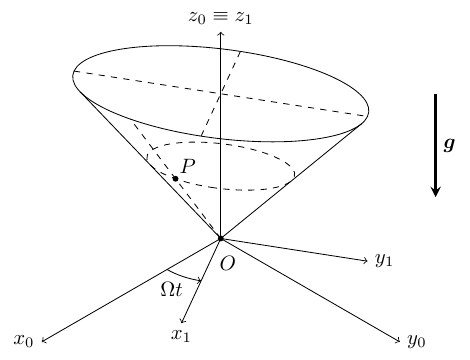
- (a)How many degrees of freedom does the particle motion have?
- (b)Obtain the general expression for the position, velocity, and acceleration of $P$ in reference frame $S_1$ as a function of $\zeta$, $\beta$ and their derivatives. Remember to define any unit vectors that you use in terms of the vectors of $\mathcal{B}_0$.
- (c)Identify and express mathematically all the forces acting on $P$ as seen from $S_1$.
- (d)Obtain two second-order differential equations for the evolution of $\zeta$, $\beta$ in time, which do not depend on any other unknowns in the problem.
- (e)Find, justify, and write down one conservation law in this problem, including the value of any constants there might be.
- (f)Find the equilibrium positions for $P$ in $S_1$ for $\zeta \gt 0$ as a function of the constants of the problem.
Worked Solution (4-Phase Methodology) [ Click to Expand ]
Physical Statement, Hypotheses & Parameters
- Physical system: a heavy point particle $P$ of mass $m$ slides on the inner surface of an elliptic cone with vertex $O$ and vertical axis $Oz_1 \equiv Oz_0$. The cone spins about that axis with constant angular rate $\Omega$ relative to the inertial frame $S_0$.
- Hypotheses:
- $S_0 = \{O; \mathbf{i}_0, \mathbf{j}_0, \mathbf{k}_0\}$ is inertial; gravity is $\mathbf{g} = -g\,\mathbf{k}_0$.
- The contact is smooth (no friction) and bilateral: the reaction of the cone is normal to its surface.
- $\Omega$ is constant and the vertex $O$ is fixed, so $O$ is a common origin of $S_0$ and $S_1$.
- The data $\mathbf{r}^P_{1,0} = 2\mathbf{j}_1 + \mathbf{k}_1$ and $\mathbf{v}^P_{1,0} = \mathbf{i}_1$ are read in SI units (m and m/s).
- Why a moving frame: in $S_0$ the surface of the cone moves, so the constraint depends explicitly on time. In the frame $S_1$ attached to the cone the surface is fixed and is described by the two parameters $(\zeta, \beta)$ of Eq. (5). The price is that $S_1$ is not inertial, so Newton's law in $S_1$ needs the inertia forces of Notes Eqs. 4.62–4.63 (Slides 27–28); they are known functions of the relative position and velocity.
| Symbol | Meaning | SI unit |
|---|---|---|
| $m$ | mass of $P$ | kg |
| $g$ | gravitational acceleration | m/s$^2$ |
| $\Omega$ | constant spin rate of the cone | rad/s |
| $\zeta$ | height of $P$ above the vertex ($z_1 = \zeta$) | m |
| $\beta$ | angular parameter of the elliptic section | rad |
| $N$ | magnitude of the normal reaction | N |
Reference Frames, Vector Bases & Rotation Matrices
- Inertial frame: $S_0 = \{O; \mathcal{B}_0\}$, $\mathcal{B}_0 = \{\mathbf{i}_0, \mathbf{j}_0, \mathbf{k}_0\}$, with $\mathbf{k}_0$ vertical and upward.
- Cone frame: $S_1 = \{O; \mathcal{B}_1\}$, $\mathcal{B}_1 = \{\mathbf{i}_1, \mathbf{j}_1, \mathbf{k}_1\}$, attached to the cone. It is obtained from $S_0$ by a simple rotation of angle $\Omega t$ about $\mathbf{k}_0$ (the figure measures $\Omega t$ from $x_0$ to $x_1$), and coincides with $S_0$ at $t = 0$:
- Change-of-basis matrix (columns are the components of $\mathbf{i}_1, \mathbf{j}_1, \mathbf{k}_1$ in $\mathcal{B}_0$):
- Checks: $\det[{}_0R_1] = \cos^2\Omega t + \sin^2\Omega t = 1$. The rows have unit norm ($\cos^2\Omega t + \sin^2\Omega t = 1$, and $1$ for the third) and are mutually orthogonal ($-\cos\Omega t\sin\Omega t + \sin\Omega t\cos\Omega t = 0$), so $[{}_0R_1][{}_0R_1]^T = I$.
- Motion of $S_1$: the origin is fixed, $\mathbf{r}_0^O = \mathbf{v}_0^O = \mathbf{a}_0^O = \mathbf{0}$. For a simple rotation about the fixed vector $\mathbf{k}_0$ (Slide 16), $\boldsymbol{\omega}_{10} = \Omega\,\mathbf{k}_1$. Check with the chain rule: $\left.\dfrac{d\mathbf{i}_1}{dt}\right|_0 = \dfrac{d\cos\Omega t}{d(\Omega t)}\,\Omega\,\mathbf{i}_0 + \dfrac{d\sin\Omega t}{d(\Omega t)}\,\Omega\,\mathbf{j}_0 = \Omega\left(-\sin\Omega t\,\mathbf{i}_0 + \cos\Omega t\,\mathbf{j}_0\right) = \Omega\,\mathbf{j}_1 = \Omega\,\mathbf{k}_1\times\mathbf{i}_1$. Since $\Omega$ and $\mathbf{k}_1 = \mathbf{k}_0$ are constant, $\boldsymbol{\alpha}_{10} = \left.\dfrac{d\boldsymbol{\omega}_{10}}{dt}\right|_0 = \mathbf{0}$.
Step-by-Step Mathematical Deduction
(a) Degrees of freedom
Eliminating the parameters of Eq. (5): $\cos\beta = x_1/\zeta$, $\sin\beta = y_1/(2\zeta)$ and $\zeta = z_1$, so $\cos^2\beta + \sin^2\beta = 1$ gives the single constraint equation of the surface, fixed in $S_1$:
Hence $\text{DOF} = 3 - 1 = 2$, and $(\zeta, \beta)$ are suitable generalized coordinates. Each horizontal section $z_1 = \zeta$ is an ellipse with semi-axes $\zeta$ (along $\mathbf{i}_1$) and $2\zeta$ (along $\mathbf{j}_1$).
(b) Position, velocity and acceleration in $S_1$
Component by component, with $\frac{d}{dt}\cos\beta = \frac{d\cos\beta}{d\beta}\dot\beta = -\dot\beta\sin\beta$ and $\frac{d}{dt}\sin\beta = \dot\beta\cos\beta$:
Differentiating again. For the $\mathbf{i}_1$ component, $\frac{d}{dt}(\dot\zeta\cos\beta) = \ddot\zeta\cos\beta - \dot\zeta\dot\beta\sin\beta$ and $\frac{d}{dt}(\zeta\dot\beta\sin\beta) = \dot\zeta\dot\beta\sin\beta + \zeta\ddot\beta\sin\beta + \zeta\dot\beta^2\cos\beta$; for the $\mathbf{j}_1$ component, $\frac{d}{dt}(\dot\zeta\sin\beta) = \ddot\zeta\sin\beta + \dot\zeta\dot\beta\cos\beta$ and $\frac{d}{dt}(\zeta\dot\beta\cos\beta) = \dot\zeta\dot\beta\cos\beta + \zeta\ddot\beta\cos\beta - \zeta\dot\beta^2\sin\beta$. Collecting terms:
The unit vectors $\mathbf{i}_1, \mathbf{j}_1, \mathbf{k}_1$ are defined in terms of $\mathcal{B}_0$ in Phase 2. For later use we write $\mathbf{r}_1^P = x_1\mathbf{i}_1 + y_1\mathbf{j}_1 + z_1\mathbf{k}_1$ and $\mathbf{v}_1^P = \dot x_1\mathbf{i}_1 + \dot y_1\mathbf{j}_1 + \dot z_1\mathbf{k}_1$ with the components above.
(c) Forces acting on $P$ as seen from $S_1$
1. Weight: $\mathbf{W} = -mg\,\mathbf{k}_0 = -mg\,\mathbf{k}_1$.
2. Normal reaction. Two tangent vectors to the cone at $P$ are the partial derivatives of $\mathbf{r}_1^P$ (they are not unit vectors):
A normal vector is their cross product, expanded component by component:
Its squared norm is $4\cos^2\beta + \sin^2\beta + 4 = 5 + 3\cos^2\beta$, so the smooth reaction is
with $N$ an unknown scalar. (Check: the gradient of $x_1^2 + y_1^2/4 - z_1^2$ is $(2x_1, y_1/2, -2z_1) = \zeta(2\cos\beta, \sin\beta, -2)$, parallel to $\mathbf{n}$.)
3. Inertia forces (Notes Eq. 4.62). Since $\mathbf{a}_0^O = \mathbf{0}$ and $\boldsymbol{\alpha}_{10} = \mathbf{0}$, the force due to the acceleration of the origin and the Euler force vanish: $\mathbf{F}_A = -m\mathbf{a}_0^O = \mathbf{0}$, $\mathbf{F}_E = -m\boldsymbol{\alpha}_{10}\times\mathbf{r}_1^P = \mathbf{0}$.
Centrifugal force. With $\mathbf{k}_1\times\mathbf{i}_1 = \mathbf{j}_1$, $\mathbf{k}_1\times\mathbf{j}_1 = -\mathbf{i}_1$, $\mathbf{k}_1\times\mathbf{k}_1 = \mathbf{0}$:
which is $m\Omega^2\mathbf{r}_\perp$, radially outward from the axis (Slide 30).
Coriolis force.
Equation of motion in $S_1$ (Notes Eq. 4.63):
(d) Two equations of motion free of the reaction
Projection on $\mathbf{e}_\zeta = (\cos\beta, 2\sin\beta, 1)$. Left-hand side:
Right-hand side, term by term: $-mg\,\mathbf{k}_1\cdot\mathbf{e}_\zeta = -mg$; $\mathbf{F}_C\cdot\mathbf{e}_\zeta = m\Omega^2\zeta\left(\cos^2\beta + 4\sin^2\beta\right) = m\Omega^2\zeta\left(1 + 3\sin^2\beta\right)$;
Dividing by $m$:
Projection on $\mathbf{e}_\beta = (-\sin\beta, 2\cos\beta, 0)$. Left-hand side:
Right-hand side: $-mg\,\mathbf{k}_1\cdot\mathbf{e}_\beta = 0$; $\mathbf{F}_C\cdot\mathbf{e}_\beta = m\Omega^2\zeta\left(-\cos\beta\sin\beta + 4\sin\beta\cos\beta\right) = 3m\Omega^2\zeta\sin\beta\cos\beta$;
Dividing by $m$:
These two equations contain only $\zeta$, $\beta$ and their derivatives. The initial conditions follow from the data: $\mathbf{r}^P_{1,0} = 2\mathbf{j}_1 + \mathbf{k}_1$ gives $\zeta_0 = 1$, $\zeta_0\cos\beta_0 = 0$ and $2\zeta_0\sin\beta_0 = 2$, so $\beta_0 = \pi/2$; $\mathbf{v}^P_{1,0} = \mathbf{i}_1$ gives $\dot\zeta_0 = 0$ ($\mathbf{k}_1$ component) and $\dot\zeta_0\cos\beta_0 - \zeta_0\dot\beta_0\sin\beta_0 = -\dot\beta_0 = 1$, so $\dot\beta_0 = -1$ rad/s; the $\mathbf{j}_1$ component $2(\dot\zeta_0\sin\beta_0 + \zeta_0\dot\beta_0\cos\beta_0) = 0$ is consistent (the initial velocity is tangent to the cone).
(e) Conservation law: mechanical energy in $S_1$
Kinetic energy in $S_1$, expanding the squares of the components of $\mathbf{v}_1^P$:
Potential in $S_1$, with $z_1 = \zeta$ and $r_\perp^2 = x_1^2 + y_1^2 = \zeta^2\left(\cos^2\beta + 4\sin^2\beta\right) = \zeta^2\left(1 + 3\sin^2\beta\right)$:
Direct check that $E_1^P = T_1^P + V_1$ is constant. Since $\mathbf{v}_1^P = \dot\zeta\,\mathbf{e}_\zeta + \zeta\dot\beta\,\mathbf{e}_\beta$ and $\dfrac{dV_1}{dt} = -\left(\mathbf{W} + \mathbf{F}_C\right)\cdot\mathbf{v}_1^P$ (chain rule on $V_1(\mathbf{r}_1^P(t))$):
and by the two equations of part (d) the brackets equal $4m\Omega\zeta\dot\beta$ and $-4m\Omega\dot\zeta$, so
Conservation law:
The constant comes from $t = 0$: $\zeta_0 = 1$ m, $\beta_0 = \pi/2$, $\dot\zeta_0 = 0$, $\dot\beta_0 = -1$ rad/s give $T_1^P(0) = \frac{m}{2}\left(1 + 0\right)(1)^2(-1)^2 = \frac{m}{2}$ (that is, $\tfrac12 m|\mathbf{v}^P_{1,0}|^2$ with $|\mathbf{v}^P_{1,0}| = 1$ m/s) and $V_1(0) = mg(1) - \frac12 m\Omega^2(1)^2(1 + 3) = m\left(g - 2\Omega^2\right)$, in joules when $m$, $g$ and $\Omega$ are in SI units.
The angular momentum about $Oz_0$ is not conserved: the moment of $\mathbf{N}$ about the axis is $\left(\mathbf{r}_1^P\times\mathbf{n}\right)\cdot\mathbf{k}_1\,N = \left(x_1n_y - y_1n_x\right)N = \dfrac{\zeta\left(-\cos\beta\sin\beta + 4\sin\beta\cos\beta\right)}{\sqrt{5 + 3\cos^2\beta}}N = \dfrac{3\zeta\sin\beta\cos\beta}{\sqrt{5 + 3\cos^2\beta}}N$, which does not vanish in general because the section is not circular.
(f) Equilibrium positions in $S_1$
The $\mathbf{e}_\beta$ equation reduces to $0 = 3\Omega^2\zeta\cos\beta\sin\beta = \tfrac32\Omega^2\zeta\sin 2\beta$. With $\zeta \gt 0$ and $\Omega \neq 0$, $\sin 2\beta = 0$:
The $\mathbf{e}_\zeta$ equation reduces to $0 = -g + \Omega^2\zeta\left(1 + 3\sin^2\beta\right)$, so
| $\beta$ | $\zeta_{eq}$ | Position $\mathbf{r}_1^P$ |
|---|---|---|
| $0$ | $g/\Omega^2$ | $\dfrac{g}{\Omega^2}\left(\mathbf{i}_1 + \mathbf{k}_1\right)$ |
| $\pi$ | $g/\Omega^2$ | $\dfrac{g}{\Omega^2}\left(-\mathbf{i}_1 + \mathbf{k}_1\right)$ |
| $\pi/2$ | $g/(4\Omega^2)$ | $\dfrac{g}{2\Omega^2}\mathbf{j}_1 + \dfrac{g}{4\Omega^2}\mathbf{k}_1$ |
| $3\pi/2$ | $g/(4\Omega^2)$ | $-\dfrac{g}{2\Omega^2}\mathbf{j}_1 + \dfrac{g}{4\Omega^2}\mathbf{k}_1$ |
Force-balance check at $\beta = 0$: $\mathbf{n} = (-2, 0, 2)/\sqrt{8}$, so $\mathbf{0} = -mg\,\mathbf{k}_1 + m\Omega^2\zeta\,\mathbf{i}_1 + \dfrac{N}{\sqrt2}\left(-\mathbf{i}_1 + \mathbf{k}_1\right)$ gives $N = \sqrt2\,mg$ and $\Omega^2\zeta = g$. At $\beta = \pi/2$: $\mathbf{n} = (0, -1, 2)/\sqrt5$, so $\mathbf{0} = -mg\,\mathbf{k}_1 + 2m\Omega^2\zeta\,\mathbf{j}_1 + \dfrac{N}{\sqrt5}\left(-\mathbf{j}_1 + 2\mathbf{k}_1\right)$ gives $N = \tfrac{\sqrt5}{2}mg$ and $2\Omega^2\zeta = \tfrac{g}{2}$, i.e. $\zeta = g/(4\Omega^2)$. Both agree with the table.
Extension (stability, not asked): the Hessian of $V_1(\zeta, \beta)$ is $\operatorname{diag}\left(-m\Omega^2,\ -3mg^2/\Omega^2\right)$ at $\beta = 0, \pi$ and $\operatorname{diag}\left(-4m\Omega^2,\ 3mg^2/(16\Omega^2)\right)$ at $\beta = \pi/2, 3\pi/2$. $V_1$ has no minimum (along each generator it is a downward parabola in $\zeta$), so the energy criterion cannot certify the stability of any of these equilibria.
Physical Interpretation & Dimensional Verification
- Meaning of the equilibria: they lie on the four generators contained in the principal planes $x_1z_1$ and $y_1z_1$ of the cone. Only there does the normal $\mathbf{n}$ lie in the vertical plane through the axis, so that it can balance the weight and the (radial) centrifugal force without a tangential remainder. On the steeper generators ($\beta = 0, \pi$, slope $45^\circ$) the particle must be higher, $\zeta = g/\Omega^2$, than on the flatter ones ($\beta = \pm\pi/2$, $\zeta = g/(4\Omega^2)$).
- Gyroscopic coupling: the Coriolis terms $4\Omega\zeta\dot\beta$ and $-4\Omega\dot\zeta$ couple the two equations antisymmetrically, which is why they cancel in $dE_1^P/dt$ (Coriolis never does work).
- Limit $\Omega \to 0$: the centrifugal and Coriolis terms vanish, $E_1^P$ becomes the ordinary energy $\tfrac12 m v^2 + mgz$, and $\zeta_{eq} \to \infty$: a fixed, vertex-down smooth cone has no equilibrium position with $\zeta \gt 0$.
- Dimensions: in the $\mathbf{e}_\zeta$ equation, $[\ddot\zeta] = [\zeta\dot\beta^2] = [\dot\zeta\dot\beta] = [\zeta\ddot\beta] = \text{m/s}^2$, $[g] = \text{m/s}^2$, $[\Omega^2\zeta] = \text{s}^{-2}\,\text{m}$, $[\Omega\zeta\dot\beta] = \text{s}^{-1}\,\text{m}\,\text{s}^{-1}$; the $\mathbf{e}_\beta$ equation has the same terms. $[E_1^P] = \text{kg}\,\text{m}^2/\text{s}^2 = \text{J}$; $[g/\Omega^2] = (\text{m/s}^2)/\text{s}^{-2} = \text{m}$.
- Official key: both equations of part (d) coincide with the official key (Problems.pdf, p. 75) term by term.
- Symbolic check (sympy): $\mathbf{a}_0^P$ obtained by differentiating $[{}_0R_1]\,\mathbf{r}_1^P$ twice equals $\mathbf{a}_1^P + \boldsymbol{\omega}_{10}\times(\boldsymbol{\omega}_{10}\times\mathbf{r}_1^P) + 2\boldsymbol{\omega}_{10}\times\mathbf{v}_1^P$ (Notes Eq. 3.27); both projections match the key; $dE_1^P/dt = 0$ along the equations of motion; the four equilibria satisfy both equations.
Spring-Coupled Particles on a Vertical Axis and a Revolving Ring
Original statement · Problems.pdf, p. 28Two heavy particles $P$ and $Q$, each of mass $m$, are connected with a spring of stiffness $k$ as shown in the figure. An inertial reference frame $S_0$ is defined with origin $O$ and vector basis $\mathcal{B}_0 = \{\mathbf{i}_0, \mathbf{j}_0, \mathbf{k}_0\}$. Particle $P$ slides without friction along the vertical axis, while particle $Q$ slides without friction on a ring of radius $R$ contained in the horizontal plane defined by $O$, $\mathbf{i}_0$ and $\mathbf{j}_0$. The center $D$ of this ring is located a distance $\ell$ from $O$ and rotates around the vertical axis of $S_0$ with a known constant angular rate $\Omega$. A rotating reference frame $S_1$ is defined so that the $\mathbf{j}_1$ vector follows the position of $D$. We define the generalized coordinates $\zeta$ (vertical position of $P$) and $\phi$ (angle of $Q$ on the circle from $\mathbf{j}_1$) as shown.
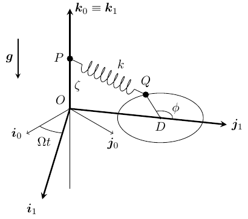
- (a)How many degrees of freedom does the system have? Define the vectors $\mathbf{i}_1$, $\mathbf{j}_1$ and $\mathbf{k}_1$ in terms of the vectors of $\mathcal{B}_0$.
- (b)Write down the general expression of the position, velocity, and acceleration of $P$ and $Q$ with respect to $S_1$ in terms of $\zeta$, $\phi$ and their derivatives.
- (c)Identify and write down the general expression of all the forces acting on $P$ and $Q$.
- (d)Using $S_1$ for your analysis, write down the scalar equations of motion of $P$ and $Q$.
- (e)Starting from these equations, write down a system of two differential equations for $\zeta$ and $\phi$, that do not depend on any other unknowns of the problem.
- (f)Find one conservation law of the problem (i.e., a first integral of motion) in reference frame $S_1$.
Worked Solution (4-Phase Methodology) [ Click to Expand ]
Physical Statement, Hypotheses & Parameters
- Physical system: two heavy particles of mass $m$. $P$ slides on the fixed vertical axis $Oz_0$; $Q$ slides on a horizontal ring of radius $R$ in the plane $z_0 = 0$ whose centre $D$, at distance $\ell$ from $O$, revolves about $Oz_0$ at constant rate $\Omega$. A spring of stiffness $k$ joins $P$ and $Q$.
- Hypotheses:
- $S_0 = \{O; \mathbf{i}_0, \mathbf{j}_0, \mathbf{k}_0\}$ is inertial, $\mathbf{k}_0$ vertical upward, gravity $-g\,\mathbf{k}_0$.
- Both contacts are smooth and bilateral: the reactions have no component along the direction in which each particle can move.
- The spring is linear and massless, with zero natural length (no natural length is given), so the force it exerts on $P$ is $k\left(\mathbf{r}^Q - \mathbf{r}^P\right)$ and on $Q$ the opposite.
- The ring moves rigidly with $S_1$ (only its centre's motion is prescribed; it does not spin relative to $S_1$, which is irrelevant anyway for a smooth circular wire).
- $\phi$ is measured from $\mathbf{j}_1$ in the positive sense about $\mathbf{k}_1$ (from $\mathbf{j}_1$ towards $-\mathbf{i}_1$), as in the figure; this is also the convention of the official key, whose ring reaction contains the radial vector $-\sin\phi\,\mathbf{i}_1 + \cos\phi\,\mathbf{j}_1$.
- Why $S_1$: in $S_1$ the ring is fixed (centre at $\ell\,\mathbf{j}_1$), so $Q$ moves on a fixed circle described by $\phi$ alone and $P$ stays on the axis. The inertia forces (Notes Eq. 4.62) are the price; for $P$, on the rotation axis, they vanish.
| Symbol | Meaning | SI unit |
|---|---|---|
| $m$ | mass of each particle | kg |
| $k$ | spring stiffness | N/m |
| $R$ | radius of the ring | m |
| $\ell$ | distance $OD$ | m |
| $\Omega$ | constant angular rate of $D$ | rad/s |
| $g$ | gravitational acceleration | m/s$^2$ |
| $\zeta$, $\phi$ | height of $P$, angle of $Q$ on the ring | m, rad |
| $N_1, \dots, N_4$ | reaction components | N |
Reference Frames, Vector Bases & Rotation Matrices
- Frames: $S_0 = \{O; \mathcal{B}_0\}$ inertial; $S_1 = \{O; \mathcal{B}_1\}$ with the same origin, $\mathbf{k}_1 = \mathbf{k}_0$ and $\mathbf{j}_1$ pointing from $O$ to $D$. $S_1$ is rotated by $\Omega t$ about $\mathbf{k}_0$ (the figure measures $\Omega t$ from $\mathbf{i}_0$ to $\mathbf{i}_1$), and we take $S_1 \equiv S_0$ at $t = 0$:
- Orthogonality: each row has norm $\cos^2\Omega t + \sin^2\Omega t = 1$ (or $1$), and the first two rows have dot product $\cos\Omega t\sin\Omega t - \sin\Omega t\cos\Omega t = 0$, so $[{}_0R_1][{}_0R_1]^T = I$.
- Motion of $S_1$: $\mathbf{r}_0^O = \mathbf{v}_0^O = \mathbf{a}_0^O = \mathbf{0}$; simple rotation about $\mathbf{k}_0$ (Slide 16): $\boldsymbol{\omega}_{10} = \Omega\,\mathbf{k}_1$, and $\boldsymbol{\alpha}_{10} = \mathbf{0}$ because $\Omega$ and $\mathbf{k}_0$ are constant.
- Ring basis (attached to $Q$, defined in $\mathcal{B}_1$):
$\mathbf{e}_r$ points from $D$ to $Q$ and $\mathbf{e}_\phi$ is tangent to the ring. Check: $\mathbf{e}_r\times\mathbf{e}_\phi = \left[(-\sin\phi)(-\sin\phi) - (\cos\phi)(-\cos\phi)\right]\mathbf{k}_1 = \mathbf{k}_1$, so $\{\mathbf{e}_r, \mathbf{e}_\phi, \mathbf{k}_1\}$ is right-handed and orthonormal. The inverse relations used below are $\mathbf{j}_1 = \cos\phi\,\mathbf{e}_r - \sin\phi\,\mathbf{e}_\phi$ and $\mathbf{i}_1 = -\sin\phi\,\mathbf{e}_r - \cos\phi\,\mathbf{e}_\phi$.
Step-by-Step Mathematical Deduction
(a) Degrees of freedom and the basis $\mathcal{B}_1$
$P$ is free in space (3 coordinates) but constrained to the vertical axis ($x = y = 0$): 1 DOF, the height $\zeta$. $Q$ (3 coordinates) is constrained to the plane $z_1 = 0$ and to the circle $\left|\mathbf{r}^Q - \overrightarrow{OD}\right| = R$: 1 DOF, the angle $\phi$. The motion of $D$ is prescribed, so it adds no unknown. Hence
The vectors of $\mathcal{B}_1$ in terms of $\mathcal{B}_0$ are those given in Phase 2.
(b) Relative kinematics of $P$ and $Q$ in $S_1$
Particle $P$:
Particle $Q$: $\overrightarrow{OQ} = \overrightarrow{OD} + \overrightarrow{DQ}$ with $\overrightarrow{OD} = \ell\,\mathbf{j}_1$ (constant in $S_1$):
By the product rule, $\mathbf{a}_1^Q = R\ddot\phi\,\mathbf{e}_\phi + R\dot\phi\left.\dfrac{d\mathbf{e}_\phi}{dt}\right|_1$:
(c) Forces on $P$ and $Q$ (actual and inertia forces in $S_1$)
Spring. The relative position is
so the spring force on $P$ is $\mathbf{F}_s^P = k\left(\mathbf{r}^Q - \mathbf{r}^P\right)$ and on $Q$ it is $\mathbf{F}_s^Q = -k\left(\mathbf{r}^Q - \mathbf{r}^P\right)$. In the ring basis, using $\mathbf{j}_1 = \cos\phi\,\mathbf{e}_r - \sin\phi\,\mathbf{e}_\phi$:
Forces on $P$:
- Weight $-mg\,\mathbf{k}_1$.
- Reaction of the smooth axis, perpendicular to $\mathbf{k}_1$: $\mathbf{N}_P = N_1\,\mathbf{i}_1 + N_2\,\mathbf{j}_1$.
- Spring $\mathbf{F}_s^P = k\left[-R\sin\phi\,\mathbf{i}_1 + \left(\ell + R\cos\phi\right)\mathbf{j}_1 - \zeta\,\mathbf{k}_1\right]$.
- Inertia forces: $P$ is on the rotation axis. $\boldsymbol{\omega}_{10}\times\mathbf{r}_1^P = \Omega\zeta\,\mathbf{k}_1\times\mathbf{k}_1 = \mathbf{0}$, so $\mathbf{F}_C^P = \mathbf{0}$; $\boldsymbol{\omega}_{10}\times\mathbf{v}_1^P = \Omega\dot\zeta\,\mathbf{k}_1\times\mathbf{k}_1 = \mathbf{0}$, so $\mathbf{F}_{COR}^P = \mathbf{0}$.
Forces on $Q$:
- Weight $-mg\,\mathbf{k}_1$.
- Reaction of the smooth ring, perpendicular to the tangent $\mathbf{e}_\phi$: $\mathbf{N}_Q = N_3\,\mathbf{e}_r + N_4\,\mathbf{k}_1 = N_3\left(-\sin\phi\,\mathbf{i}_1 + \cos\phi\,\mathbf{j}_1\right) + N_4\,\mathbf{k}_1$.
- Spring $\mathbf{F}_s^Q$ above.
- Centrifugal force. Since $\mathbf{r}_1^Q$ has no $\mathbf{k}_1$ component, $\boldsymbol{\omega}_{10}\times\left(\boldsymbol{\omega}_{10}\times\mathbf{r}_1^Q\right) = -\Omega^2\mathbf{r}_1^Q$ (from $\mathbf{k}_1\times(\mathbf{k}_1\times\mathbf{i}_1) = -\mathbf{i}_1$ and $\mathbf{k}_1\times(\mathbf{k}_1\times\mathbf{j}_1) = -\mathbf{j}_1$), hence
- Coriolis force. From $\mathbf{e}_r\times\mathbf{e}_\phi = \mathbf{k}_1$ (cyclic: $\mathbf{e}_\phi\times\mathbf{k}_1 = \mathbf{e}_r$), $\mathbf{k}_1\times\mathbf{e}_\phi = -\mathbf{e}_r$:
- Euler force and force due to the origin's acceleration: zero for both particles.
(d) Scalar equations of motion in $S_1$
Particle $P$ ($m\ddot\zeta\,\mathbf{k}_1 = -mg\,\mathbf{k}_1 + N_1\mathbf{i}_1 + N_2\mathbf{j}_1 + \mathbf{F}_s^P$):
Particle $Q$ ($m\left(R\ddot\phi\,\mathbf{e}_\phi - R\dot\phi^2\mathbf{e}_r\right) = -mg\,\mathbf{k}_1 + N_3\mathbf{e}_r + N_4\mathbf{k}_1 + \mathbf{F}_s^Q + \mathbf{F}_C^Q + \mathbf{F}_{COR}^Q$):
(e) Two equations free of the reactions
Dividing the $\mathbf{k}_1$ equation of $P$ and the $\mathbf{e}_\phi$ equation of $Q$ by $m$ and $mR$:
The other four equations then give the reactions once $\zeta(t)$, $\phi(t)$ are known: $N_1 = kR\sin\phi$, $N_2 = -k\left(\ell + R\cos\phi\right)$, $N_3 = -mR\dot\phi^2 + \left(k - m\Omega^2\right)\left(R + \ell\cos\phi\right) - 2m\Omega R\dot\phi$, $N_4 = mg - k\zeta$. In particular the ring reaction has the form $\mathbf{N}_Q = N_3\left(-\sin\phi\,\mathbf{i}_1 + \cos\phi\,\mathbf{j}_1\right) + N_4\,\mathbf{k}_1$ of the official key.
The two equations are decoupled: the vertical spring component acts only on $P$'s coordinate, and the horizontal one only on $Q$'s, because the spring force is linear in $\mathbf{r}^Q - \mathbf{r}^P$ and $P$ moves along $\mathbf{k}_1$ while $Q$ moves in the plane $\perp\mathbf{k}_1$.
(f) A conservation law in $S_1$
Potential energies in $S_1$: weight of $P$, $mg\zeta$ (weight of $Q$: $mg\cdot 0$); spring $\tfrac12 k\left|\mathbf{r}^Q - \mathbf{r}^P\right|^2$; centrifugal on $Q$, $-\tfrac12 m\Omega^2\left|\mathbf{r}_1^Q\right|^2$ (here $r_\perp^Q = |\mathbf{r}_1^Q|$). With
and dropping the constant $\tfrac12\left(k - m\Omega^2\right)\left(\ell^2 + R^2\right)$:
Check with the equations of part (e) (chain rule $\frac{d}{dt}\cos\phi = -\dot\phi\sin\phi$, $\frac{d}{dt}\zeta^2 = 2\zeta\dot\zeta$):
Because the equations are decoupled, each bracket vanishes separately, so in fact two first integrals exist: $\tfrac12 m\dot\zeta^2 + mg\zeta + \tfrac12 k\zeta^2 = \text{const}$ and $\tfrac12 mR^2\dot\phi^2 + \left(k - m\Omega^2\right)\ell R\cos\phi = \text{const}$. The constants are fixed by initial conditions, which the statement does not give.
Physical Interpretation & Dimensional Verification
- Particle $P$: $\ddot\zeta + (k/m)\zeta = -g$ is a harmonic oscillator about $\zeta_{eq} = -mg/k$ with angular frequency $\sqrt{k/m}$, unaffected by the rotation (it lies on the axis, where centrifugal and Coriolis forces vanish).
- Particle $Q$: $\ddot\phi = \tfrac{\ell}{R}\left(\tfrac{k}{m} - \Omega^2\right)\sin\phi$ is a pendulum equation. The spring pulls $Q$ towards the axis (towards $\phi = \pi$, the point of the ring nearest $O$) and the centrifugal force pushes it outward (towards $\phi = 0$). If $\Omega^2 \lt k/m$ the stable position is $\phi = \pi$; if $\Omega^2 \gt k/m$ it is $\phi = 0$; at $\Omega^2 = k/m$ the two effects cancel exactly and $\dot\phi$ is constant. The Coriolis force only loads the ring radially ($N_3$).
- Limits: $\Omega \to 0$ gives a fixed ring and $\ddot\phi = \tfrac{k\ell}{mR}\sin\phi$; $\ell \to 0$ (ring centred on the axis) gives $\ddot\phi = 0$, uniform motion, since every point of the ring is then equidistant from the axis.
- Dimensions: $[k/m] = \text{N}/(\text{m}\,\text{kg}) = \text{s}^{-2}$, so $[(k/m)\zeta] = \text{m/s}^2 = [g] = [\ddot\zeta]$; $[(\ell/R)(k/m - \Omega^2)] = \text{s}^{-2} = [\ddot\phi]$; $[N_3]$: $[mR\dot\phi^2] = [kR] = [m\Omega R\dot\phi] = \text{N}$; $[E_1] = \text{kg}\,\text{m}^2/\text{s}^2 = [k\zeta^2] = [k\ell R] = \text{J}$.
- Official key (Problems.pdf, p. 76): "One of the forces acting on $Q$ is the reaction of the ring, $\mathbf{N}_Q = N_3(-\sin\phi\,\mathbf{i}_1 + \cos\phi\,\mathbf{j}_1) + N_4\,\mathbf{k}_1$", which matches part (c).
- Symbolic check (sympy): $\mathbf{a}_0$ of both particles obtained by differentiating $[{}_0R_1]\,\mathbf{r}_1$ twice matches Notes Eq. 3.27; the six scalar equations, the four reactions, and $dE_1/dt = 0$ along the motion are confirmed.
The angle $\theta$ describing the rotation of the solar panels of a reconnaissance satellite about the body-fixed axis $x$ is an arbitrary function of time. The satellite spins about the $z$ axis at the constant angular rate $\omega$. Derive expressions for the absolute velocity and acceleration of point $B$ in the figure relative to an inertial reference frame centered in $A$.
(Taken from Ginsberg, "Engineering Dynamics", Cambridge University Press, 2008.)
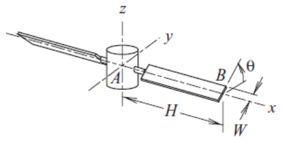
Worked Solution (4-Phase Methodology) [ Click to Expand ]
Physical Statement, Hypotheses & Parameters
- Physical system: a satellite body spins about its $z$ axis at constant rate $\omega$; a solar panel turns about the body-fixed $x$ axis through the prescribed angle $\theta(t)$. Point $B$ is a corner of the panel.
- Why relative motion. The motion of $B$ is the superposition of two simple motions: in the body frame $S_1$, $B$ just describes a circle of radius $W$ about the $x$ axis; and $S_1$ itself just spins about $z$. Notes Eqs. 3.26–3.27 combine the two without writing the inertial position explicitly. A second route uses the panel frame $S_2$, in which $B$ is fixed, and the composition of angular velocities (Notes Eqs. 3.13–3.15).
- Hypotheses:
- The frame centred at $A$ with non-rotating axes is inertial, so the centre $A$ of the satellite is fixed: $\mathbf{v}_0^A = \mathbf{a}_0^A = \mathbf{0}$.
- Body and panel are rigid; $\omega$ is constant; $\theta(t)$ is an arbitrary (known) function.
- Geometry (read from the figure): $B$ is at distance $H$ from $A$ measured along $x$, and at distance $W$ from the $x$ axis; $\theta$ is measured about $+x$ from the body axis $y$, so for $\theta = 0$ the segment from the hinge axis to $B$ points along $+y$.
- Degrees of freedom: none to determine; the motion is prescribed by $\omega t$ and $\theta(t)$ (kinematics only).
| Symbol | Meaning | SI unit |
|---|---|---|
| $H$ | axial distance from $A$ to $B$ (along $x$) | m |
| $W$ | distance from $B$ to the hinge axis $x$ | m |
| $\omega$ | constant spin rate of the satellite about $z$ | rad/s |
| $\theta(t)$ | panel angle about $x$ | rad |
Reference Frames, Vector Bases & Rotation Matrices
- Inertial frame: $S_0 = \{A; \mathbf{i}_0, \mathbf{j}_0, \mathbf{k}_0\}$.
- Body frame: $S_1 = \{A; \mathbf{i}_1, \mathbf{j}_1, \mathbf{k}_1\}$ ($x$, $y$, $z$ of the figure), a simple rotation of angle $\omega t$ about $\mathbf{k}_0 = \mathbf{k}_1$: $$ [{}_0R_1] = \begin{pmatrix} \cos\omega t & -\sin\omega t & 0 \\ \sin\omega t & \cos\omega t & 0 \\ 0 & 0 & 1 \end{pmatrix}, \qquad \boldsymbol{\omega}_{10} = \omega\,\mathbf{k}_1, \qquad \boldsymbol{\alpha}_{10} = \mathbf{0} $$
- Panel frame: $S_2 = \{C; \mathbf{i}_2, \mathbf{j}_2, \mathbf{k}_2\}$, where $C = A + H\mathbf{i}_1$ is the point of the hinge axis at the abscissa of $B$; simple rotation of angle $\theta$ about $\mathbf{i}_1 = \mathbf{i}_2$: $$ [{}_1R_2] = \begin{pmatrix} 1 & 0 & 0 \\ 0 & \cos\theta & -\sin\theta \\ 0 & \sin\theta & \cos\theta \end{pmatrix}, \qquad \boldsymbol{\omega}_{21} = \dot{\theta}\,\mathbf{i}_1 $$
- Checks: $\det[{}_0R_1] = \cos^2\omega t + \sin^2\omega t = 1$ and $\det[{}_1R_2] = \cos^2\theta + \sin^2\theta = 1$; the columns of each matrix are orthonormal, so $RR^T = I$; hence $[{}_0R_2] = [{}_0R_1][{}_1R_2]$ is also a proper rotation (Notes Eq. 1.16).
- Position of $B$. $\mathbf{r}_{CB} = W\,\mathbf{j}_2$ is fixed in $S_2$; with the second column of $[{}_1R_2]$, $\mathbf{j}_2 = \cos\theta\,\mathbf{j}_1 + \sin\theta\,\mathbf{k}_1$, so $$ \mathbf{r}_1^B = \mathbf{AC} + \mathbf{CB} = H\,\mathbf{i}_1 + W\cos\theta\,\mathbf{j}_1 + W\sin\theta\,\mathbf{k}_1 $$
Step-by-Step Mathematical Deduction
1. Relative motion of $B$ in the body frame $S_1$
With the chain rule $\frac{d}{dt}\cos\theta = -\dot{\theta}\sin\theta$, $\frac{d}{dt}\sin\theta = \dot{\theta}\cos\theta$, and the product rule $\frac{d}{dt}(\dot{\theta}\sin\theta) = \ddot{\theta}\sin\theta + \dot{\theta}^2\cos\theta$, $\frac{d}{dt}(\dot{\theta}\cos\theta) = \ddot{\theta}\cos\theta - \dot{\theta}^2\sin\theta$:
(circular motion of radius $W$ about the $x$ axis: tangential part $W\ddot{\theta}\,\mathbf{k}_2$ and normal part $-W\dot{\theta}^2\,\mathbf{j}_2$).
2. Absolute velocity of $B$
Cross products: $\mathbf{k}_1\times\mathbf{i}_1 = \mathbf{j}_1$, $\mathbf{k}_1\times\mathbf{j}_1 = -\mathbf{i}_1$, $\mathbf{k}_1\times\mathbf{k}_1 = \mathbf{0}$:
Adding $\mathbf{v}_1^B$ component by component:
which agrees with the official key (Problems.pdf, p. 76). The components are given in the body basis $\mathcal{B}_1$; in $\mathcal{B}_0$ they follow from $\{\mathbf{v}_0^B\}_0 = [{}_0R_1]\{\mathbf{v}_0^B\}_1$.
3. Absolute acceleration of $B$
Centripetal term (reusing $\boldsymbol{\omega}_{10}\times\mathbf{r}_1^B$ from step 2):
i.e. $-\omega^2\mathbf{r}_\perp$ with $\mathbf{r}_\perp = H\,\mathbf{i}_1 + W\cos\theta\,\mathbf{j}_1$.
Coriolis term:
Sum, collecting the $\mathbf{i}_1$, $\mathbf{j}_1$ and $\mathbf{k}_1$ components of $\mathbf{a}_1^B$, the centripetal term and the Coriolis term:
which agrees with the official key (Problems.pdf, p. 76).
4. Second route: panel frame and composition of angular velocities
Its derivative in $S_0$ by the Coriolis theorem (Notes Eq. 3.8), with $\left.\frac{d}{dt}\right|_1\left(\dot{\theta}\,\mathbf{i}_1 + \omega\,\mathbf{k}_1\right) = \ddot{\theta}\,\mathbf{i}_1$ ($\omega$ constant):
Motion of $C$ (fixed in $S_1$ at $H\mathbf{i}_1$): $\mathbf{v}_0^C = \omega\mathbf{k}_1\times H\mathbf{i}_1 = H\omega\,\mathbf{j}_1$, $\mathbf{a}_0^C = \omega\mathbf{k}_1\times H\omega\,\mathbf{j}_1 = -H\omega^2\,\mathbf{i}_1$. With $\mathbf{r}_2^B = \mathbf{CB} = W\cos\theta\,\mathbf{j}_1 + W\sin\theta\,\mathbf{k}_1$:
so $\mathbf{v}_0^B = \mathbf{v}_0^C + \boldsymbol{\omega}_{20}\times\mathbf{r}_2^B$ reproduces the boxed velocity. For the acceleration, $\mathbf{a}_0^B = \mathbf{a}_0^C + \boldsymbol{\alpha}_{20}\times\mathbf{r}_2^B + \boldsymbol{\omega}_{20}\times(\boldsymbol{\omega}_{20}\times\mathbf{r}_2^B)$:
(using $\mathbf{i}_1\times\mathbf{j}_1 = \mathbf{k}_1$, $\mathbf{i}_1\times\mathbf{k}_1 = -\mathbf{j}_1$, $\mathbf{k}_1\times\mathbf{i}_1 = \mathbf{j}_1$, $\mathbf{k}_1\times\mathbf{j}_1 = -\mathbf{i}_1$). Adding $\mathbf{a}_0^C = -H\omega^2\,\mathbf{i}_1$: the $\mathbf{i}_1$ component is $2W\omega\dot{\theta}\sin\theta - H\omega^2$, the $\mathbf{j}_1$ component $-W(\ddot{\theta}\sin\theta + \dot{\theta}^2\cos\theta + \omega^2\cos\theta)$, the $\mathbf{k}_1$ component $W(\ddot{\theta}\cos\theta - \dot{\theta}^2\sin\theta)$: the same boxed result. Note that the Coriolis term of route 1, $2W\omega\dot{\theta}\sin\theta\,\mathbf{i}_1$, appears in route 2 split in two equal halves, one from $\boldsymbol{\alpha}_{20}$ (the term $\omega\dot{\theta}\,\mathbf{j}_1$ that makes angular accelerations not add) and one from the double cross product.
Physical Interpretation & Dimensional Verification
- Reading of the terms. $-H\omega^2\mathbf{i}_1 - W\omega^2\cos\theta\,\mathbf{j}_1$ is the centripetal acceleration of the spin; $W\ddot{\theta}$ and $W\dot{\theta}^2$ terms are the tangential and normal accelerations of the panel rotation; $2W\omega\dot{\theta}\sin\theta\,\mathbf{i}_1$ is the Coriolis coupling of the two rotations, present only when the panel moves ($\dot{\theta} \neq 0$) with a velocity component normal to the spin axis.
- Limits: $\dot{\theta} = 0$ (panel locked) gives the rigid-body motion $\mathbf{v}_0^B = \boldsymbol{\omega}_{10}\times\mathbf{r}_1^B$, $\mathbf{a}_0^B = -\omega^2\mathbf{r}_\perp$; $\omega = 0$ (no spin) leaves the circular motion of radius $W$ about the hinge.
- Dimensions: every velocity component is of the form $[W\omega] = [H\omega] = [W\dot{\theta}] = \text{m}\,\text{s}^{-1}$; every acceleration component $[W\omega\dot{\theta}] = [H\omega^2] = [W\ddot{\theta}] = [W\dot{\theta}^2] = \text{m}\,\text{s}^{-2}$.
- Verification (sympy,
verify_P41.py): $[{}_0R_1]$, $[{}_1R_2]$, $[{}_0R_2]$ are proper rotations; the inertial first and second derivatives of $[{}_0R_1]\{\mathbf{r}_1^B\}$ equal the Notes Eq. 3.26 and 3.27 expressions; both routes give exactly the official key. - Cross-check with Topic 1. The Topic 1 solution (Poisson formula on the body basis) gives the same velocity and acceleration; no discrepancy with the official key.
Two Repelling Particles on Concentric Wires in a Rotating Plane
Original statement · Problems.pdf, p. 32We consider a system of two heavy particles of equal mass $m$. The first particle $P$ is constrained to move without friction along a circular wire of radius $a$. The second particle $Q$ is constrained to move without friction along a circular wire of radius $2a$. Both wires are contained in a plane $Ox_1y_1$ that rotates at a constant, known angular rate $\Omega$ about the axis $Oy_1 \equiv Oy_0$ with respect to a fixed reference frame $S_0$ with axes $Ox_0y_0z_0$ (not shown in the figure). We also define a moving reference frame $S_1$ with axes $Ox_1y_1z_1$. The two particles repel each other with a force that is proportional to their distance, with constant of proportionality, $k$.
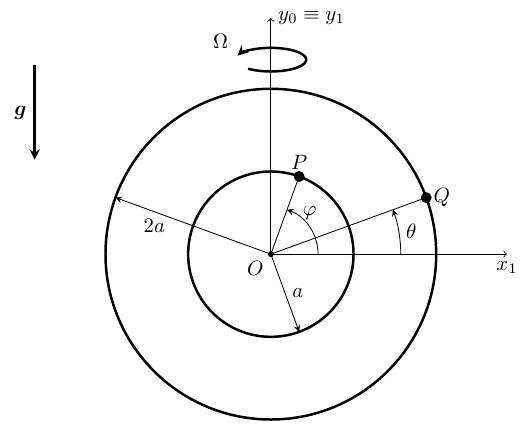
- (a)How many configuration degrees of freedom has this system?
- (b)How many independent components of the reaction forces on the particles need to be considered? Write down the reaction force on each particle.
- (c)Write down the relative accelerations of $P$ and $Q$ with respect to $S_1$ as a function of the coordinates of the problem and their derivatives.
- (d)Express the applied forces on the particles as a function of the coordinates of the problem.
- (e)Express the fictitious forces of inertia on the particles as seen from $S_1$, as a function of the coordinates of the problem and their derivatives.
- (f)Write down a system of ordinary differential equations to determine the evolution of the coordinates of the problem as a function of time, free of any other unknowns. You do not need to solve this system (since no initial conditions have been provided) but we assume that we know how to solve it, so that from this point we know the coordinates as a function of time.
- (g)Determine the values of the reaction forces from the wires as a function of time.
- (h)Is the mechanical energy of this system conserved in $S_1$? If so, write down the corresponding equation.
- (i)Determine the values of $\alpha = \dfrac{ka}{mg}$ and $\beta = \dfrac{a\Omega^2}{g}$ so that $\varphi = 30^\circ$, $\theta = -60^\circ$ is an equilibrium position of the system in the relative motion.
Worked Solution (4-Phase Methodology) [ Click to Expand ]
Physical Statement, Hypotheses & Parameters
- Physical system: two heavy particles of mass $m$; $P$ on a circular wire of radius $a$ and $Q$ on a concentric circular wire of radius $2a$, both centred at $O$ and lying in the plane $Ox_1y_1$. The plane spins about the vertical axis $Oy_1 \equiv Oy_0$ with constant rate $\Omega$. The particles repel each other with a force $k$ times their distance.
- Hypotheses:
- $S_0 = \{O; \mathbf{i}_0, \mathbf{j}_0, \mathbf{k}_0\}$ is inertial; $\mathbf{j}_0$ is vertical upward and gravity is $-g\,\mathbf{j}_0$ (the figure draws $\mathbf{g}$ antiparallel to $y_1$).
- Smooth, bilateral wires: each reaction is perpendicular to the tangent of its wire.
- The repulsion acts along the line $PQ$: on $P$ it is $k\left(\mathbf{r}^P - \mathbf{r}^Q\right)$, on $Q$ it is $k\left(\mathbf{r}^Q - \mathbf{r}^P\right)$ (action and reaction).
- $\varphi$ and $\theta$ are measured from $Ox_1$ in the positive sense about $\mathbf{k}_1$, as in the figure. The sense of $\Omega$ only affects the sign of the Coriolis terms; we take $\boldsymbol{\omega}_{10} = \Omega\,\mathbf{j}_0$ with $\Omega$ a signed constant.
- Why $S_1$: both wires are fixed in $S_1$, so each particle has a single angular coordinate there. The inertia forces (Notes Eq. 4.62) are the price, and with $\boldsymbol{\omega}_{10}$ constant and $O$ fixed only the centrifugal and Coriolis forces appear.
| Symbol | Meaning | SI unit |
|---|---|---|
| $m$ | mass of each particle | kg |
| $a$ | radius of the inner wire (outer: $2a$) | m |
| $k$ | repulsion constant | N/m |
| $\Omega$ | constant rotation rate of the plane | rad/s |
| $g$ | gravitational acceleration | m/s$^2$ |
| $\varphi$, $\theta$ | angular positions of $P$ and $Q$ from $Ox_1$ | rad |
| $\alpha = ka/(mg)$, $\beta = a\Omega^2/g$ | dimensionless parameters | 1 |
Reference Frames, Vector Bases & Rotation Matrices
- Frames: $S_0 = \{O; \mathcal{B}_0\}$ and $S_1 = \{O; \mathcal{B}_1\}$ with common origin; $S_1$ is rotated by the angle $\Omega t$ about $\mathbf{j}_0 = \mathbf{j}_1$ (we take $S_1 \equiv S_0$ at $t = 0$). A simple rotation about $\mathbf{j}_0$ gives
- Checks: $\det[{}_0R_1] = \cos\Omega t\left(\cos\Omega t\right) + \sin\Omega t\left(\sin\Omega t\right) = 1$ (expansion along the second row). Rows: $\cos^2\Omega t + \sin^2\Omega t = 1$, $1$, $\sin^2\Omega t + \cos^2\Omega t = 1$; first and third rows: $-\cos\Omega t\sin\Omega t + \sin\Omega t\cos\Omega t = 0$; so $[{}_0R_1][{}_0R_1]^T = I$. Also $\mathbf{i}_1\times\mathbf{j}_1 = \sin\Omega t\,\mathbf{i}_0 + \cos\Omega t\,\mathbf{k}_0 = \mathbf{k}_1$ (right-handed).
- Motion of $S_1$: $\mathbf{a}_0^O = \mathbf{0}$; $\boldsymbol{\omega}_{10} = \Omega\,\mathbf{j}_1$. Check: $\left.\dfrac{d\mathbf{i}_1}{dt}\right|_0 = -\Omega\left(\sin\Omega t\,\mathbf{i}_0 + \cos\Omega t\,\mathbf{k}_0\right) = -\Omega\,\mathbf{k}_1 = \Omega\,\mathbf{j}_1\times\mathbf{i}_1$. Since $\Omega$ and $\mathbf{j}_0$ are constant, $\boldsymbol{\alpha}_{10} = \mathbf{0}$.
- Polar bases of the two particles (in the plane $Ox_1y_1$):
Each triad $\{\mathbf{e}_r, \mathbf{e}_\varphi\ \text{or}\ \mathbf{e}_\theta, \mathbf{k}_1\}$ is orthonormal and right-handed ($\mathbf{e}_r\times\mathbf{e}_\varphi = (\cos^2\varphi + \sin^2\varphi)\,\mathbf{k}_1 = \mathbf{k}_1$). Dot products used below: $\mathbf{e}_r^Q\cdot\mathbf{e}_r^P = \cos(\varphi - \theta)$, $\mathbf{e}_r^Q\cdot\mathbf{e}_\varphi = \sin(\theta - \varphi)$, $\mathbf{e}_r^P\cdot\mathbf{e}_\theta = \sin(\varphi - \theta)$, $\mathbf{j}_1\cdot\mathbf{e}_\varphi = \cos\varphi$, $\mathbf{j}_1\cdot\mathbf{e}_r^P = \sin\varphi$, $\mathbf{i}_1\cdot\mathbf{e}_\varphi = -\sin\varphi$, $\mathbf{i}_1\cdot\mathbf{e}_r^P = \cos\varphi$ (and the same with $\theta$ for $Q$).
Step-by-Step Mathematical Deduction
(a) Configuration degrees of freedom
$P$: 3 coordinates minus 2 constraints ($z_1 = 0$, $x_1^2 + y_1^2 = a^2$) = 1. $Q$: 3 minus 2 ($z_1 = 0$, $x_1^2 + y_1^2 = 4a^2$) = 1. The motion of the plane is prescribed. Hence
(b) Reaction forces
Two components per particle, four in total:
(c) Relative accelerations
(d) Applied forces
Weights: $-mg\,\mathbf{j}_1$ on each particle, i.e. $-mg\sin\varphi\,\mathbf{e}_r^P - mg\cos\varphi\,\mathbf{e}_\varphi$ on $P$ and $-mg\sin\theta\,\mathbf{e}_r^Q - mg\cos\theta\,\mathbf{e}_\theta$ on $Q$.
Repulsion, with $\mathbf{r}^P - \mathbf{r}^Q = a\,\mathbf{e}_r^P - 2a\,\mathbf{e}_r^Q = a\left(\cos\varphi - 2\cos\theta\right)\mathbf{i}_1 + a\left(\sin\varphi - 2\sin\theta\right)\mathbf{j}_1$:
(For $P$: $\mathbf{e}_r^Q\cdot\mathbf{e}_r^P = \cos(\varphi - \theta)$ and $-2a\,\mathbf{e}_r^Q\cdot\mathbf{e}_\varphi = -2a\sin(\theta - \varphi) = 2a\sin(\varphi - \theta)$. For $Q$: $-a\,\mathbf{e}_r^P\cdot\mathbf{e}_\theta = -a\sin(\varphi - \theta)$.)
(e) Inertia forces in $S_1$
Cross products with $\mathbf{j}_1\times\mathbf{i}_1 = -\mathbf{k}_1$, $\mathbf{j}_1\times\mathbf{j}_1 = \mathbf{0}$, $\mathbf{j}_1\times\mathbf{k}_1 = \mathbf{i}_1$. For $P$, $\boldsymbol{\omega}_{10}\times\mathbf{r}_1^P = \Omega a\left(\cos\varphi\,\mathbf{j}_1\times\mathbf{i}_1 + \sin\varphi\,\mathbf{j}_1\times\mathbf{j}_1\right) = -\Omega a\cos\varphi\,\mathbf{k}_1$ and $\boldsymbol{\omega}_{10}\times\left(\boldsymbol{\omega}_{10}\times\mathbf{r}_1^P\right) = -\Omega^2 a\cos\varphi\,\mathbf{j}_1\times\mathbf{k}_1 = -\Omega^2 a\cos\varphi\,\mathbf{i}_1$. Hence (it is $m\Omega^2\mathbf{r}_\perp$, Slide 30):
For the Coriolis force, $\boldsymbol{\omega}_{10}\times\mathbf{v}_1^P = \Omega a\dot\varphi\left(-\sin\varphi\,\mathbf{j}_1\times\mathbf{i}_1 + \cos\varphi\,\mathbf{j}_1\times\mathbf{j}_1\right) = \Omega a\dot\varphi\sin\varphi\,\mathbf{k}_1$, so
The Coriolis forces are perpendicular to the plane of the wires: only the reactions $N_2$, $N_4$ can balance them.
(f) Equations of motion free of unknown reactions
$P$, along $\mathbf{e}_\varphi$: $ma\ddot\varphi = -mg\cos\varphi + 2ka\sin(\varphi - \theta) - m\Omega^2 a\sin\varphi\cos\varphi$.
$Q$, along $\mathbf{e}_\theta$: $2ma\ddot\theta = -mg\cos\theta - ka\sin(\varphi - \theta) - 2m\Omega^2 a\sin\theta\cos\theta$.
Dividing by $ma$ and $2ma$:
(g) Reactions as functions of time
$P$, along $\mathbf{e}_r^P$: $-ma\dot\varphi^2 = N_1 - mg\sin\varphi + ka\left[1 - 2\cos(\varphi - \theta)\right] + m\Omega^2 a\cos^2\varphi$. Along $\mathbf{k}_1$: $0 = N_2 - 2m\Omega a\dot\varphi\sin\varphi$.
$Q$, along $\mathbf{e}_r^Q$: $-2ma\dot\theta^2 = N_3 - mg\sin\theta + ka\left[2 - \cos(\varphi - \theta)\right] + 2m\Omega^2 a\cos^2\theta$. Along $\mathbf{k}_1$: $0 = N_4 - 4m\Omega a\dot\theta\sin\theta$.
(h) Mechanical energy in $S_1$
Potentials in $S_1$: weights $mga\sin\varphi + 2mga\sin\theta$ (heights $y_1$); repulsion $-\tfrac12 k\left|\mathbf{r}^P - \mathbf{r}^Q\right|^2$ (minus sign: repulsive, so that $-\nabla_P$ gives $+k(\mathbf{r}^P - \mathbf{r}^Q)$), with
and centrifugal $-\tfrac12 m\Omega^2\left(r_\perp^P\right)^2 - \tfrac12 m\Omega^2\left(r_\perp^Q\right)^2$ with $r_\perp = |x_1|$ (distance to the axis $Oy_1$, since $z_1 = 0$): $-\tfrac12 m\Omega^2 a^2\cos^2\varphi - 2m\Omega^2 a^2\cos^2\theta$. Kinetic energy: $\tfrac12 m a^2\dot\varphi^2 + \tfrac12 m\,4a^2\dot\theta^2$. Dropping the constant $-\tfrac52 ka^2$:
Check. By the chain rule ($\frac{d}{dt}\cos(\varphi - \theta) = -\sin(\varphi - \theta)(\dot\varphi - \dot\theta)$, $\frac{d}{dt}\cos^2\varphi = -2\cos\varphi\sin\varphi\,\dot\varphi$):
and both brackets vanish by the two equations of (f) (multiplied by $ma^2$ and $4ma^2$), so $dE_1/dt = 0$.
(i) Parameters for the equilibrium $\varphi = 30^\circ$, $\theta = -60^\circ$
With $\varphi - \theta = 90^\circ$ ($\sin = 1$), $\cos 30^\circ = \tfrac{\sqrt3}{2}$, $\sin 30^\circ = \tfrac12$, $\cos(-60^\circ) = \tfrac12$, $\sin(-60^\circ) = -\tfrac{\sqrt3}{2}$:
From the second, $\alpha = \tfrac{\sqrt3}{2}\beta - \tfrac12$. Substituting in the first: $-\tfrac{\sqrt3}{2} + \sqrt3\beta - 1 - \tfrac{\sqrt3}{4}\beta = 0$, i.e. $\tfrac{3\sqrt3}{4}\beta = 1 + \tfrac{\sqrt3}{2} = \tfrac{2 + \sqrt3}{2}$, so
Both values are positive, so the equilibrium is physically realisable.
Physical Interpretation & Dimensional Verification
- Equilibrium: at $\varphi - \theta = 90^\circ$ the radii $OP$ and $OQ$ are perpendicular, so the tangential part of the repulsion is as large as it can be ($2ka$ on $P$, $ka$ on $Q$), and it balances the tangential components of the weight and of the centrifugal force. $P$ (at $30^\circ$ above $Ox_1$) is pushed up its wire by the repulsion from $Q$, while gravity and the centrifugal force pull it back; $Q$ (at $60^\circ$ below $Ox_1$) is pushed down by the repulsion and by gravity, and the centrifugal force (which pulls it towards $\theta = 0$, away from the axis) holds it.
- Coriolis forces: they are normal to the rotating plane and only load the wires ($N_2$, $N_4$); they never enter the equations of motion or the energy.
- Limits: $\Omega \to 0$ removes the centrifugal terms and $N_2 = N_4 = 0$; $k \to 0$ decouples the two particles into two independent rotating-ring pendulums, $\ddot\varphi = -\tfrac{g}{a}\cos\varphi - \Omega^2\sin\varphi\cos\varphi$.
- Dimensions: $[g/a] = [k/m] = [\Omega^2] = \text{s}^{-2} = [\ddot\varphi]$; $[N_1]$: $[ma\dot\varphi^2] = [mg] = [ka] = [m\Omega^2a] = \text{N}$; $[N_2] = [m\Omega a\dot\varphi] = \text{N}$; $[E_1] = \text{kg}\,\text{m}^2/\text{s}^2 = [mga] = [ka^2] = \text{J}$; $\alpha = \text{N}\,\text{m}^{-1}\,\text{m}/\text{N}$ and $\beta = \text{m}\,\text{s}^{-2}/(\text{m}\,\text{s}^{-2})$ are dimensionless.
- Official key (Problems.pdf, p. 76): $\alpha = 0.744$, $\beta = 1.4365$. Our exact values $\alpha = (1 + 2\sqrt3)/6 = 0.74402$ and $\beta = (6 + 4\sqrt3)/9 = 1.43647$ agree.
- Symbolic check (sympy): $\mathbf{a}_0$ of each particle obtained by differentiating $[{}_0R_1]\,\mathbf{r}_1$ twice equals the Notes Eq. 3.27 decomposition; the two equations of motion, the four reactions and $dE_1/dt = 0$ are confirmed, and solving the equilibrium conditions gives exactly the values above.
Particle on a Rotating Sphere Attracted to a Point
Original statement · Problems.pdf, p. 34A point particle $P$ of mass $m$ slides without friction on a sphere of radius $a$ centered at the origin of the inertial reference frame $S_0$ as shown in the figure. The particle is attracted by a point $A$ in the equatorial plane, located a distance $a$ from the surface of the sphere as shown. The force of attraction is linearly proportional to the distance between this point and $P$, with known constant of proportionality $k \gt 0$. The sphere and the point $A$ rotate rigidly about the vertical with a known angular velocity $\Omega\mathbf{k}_0$. We define the auxiliary reference frame $S_1$ that rotates with the sphere and point $A$, with $\mathbf{k}_1 = \mathbf{k}_0$ and $\mathbf{i}_1$ pointing in the direction of $A$. We introduce the angles $\phi$ and $\theta$ as shown to locate $P$ on the sphere. Note that there is no gravity in this problem.
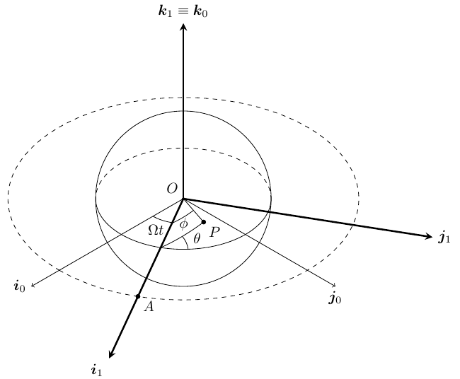
- (a)Express the position, velocity, and acceleration of $P$ with respect to $S_1$ in terms of $\phi$, $\theta$ and their derivatives. Remember to define any unit vectors that you want to use in terms of $\mathbf{i}_0, \mathbf{j}_0, \mathbf{k}_0$ first.
- (b)Write down the (vector) equation of motion of $P$ in $S_1$, and derive from there a set of two scalar second-order differential equations for $\phi$, $\theta$ that do not depend on any other unknowns. To do so, first identify and write down all the forces needed in your analysis.
- (c)Is the mechanical energy of $P$ conserved in $S_1$? Explain. If so, write down the corresponding conservation law.
- (d)Identify all equilibrium configurations of the system, and discuss them as a function of the ratio $m\Omega^2/k$.
- (e)Assuming the functions of time $\phi(t)$ and $\theta(t)$ are known, write down the expression of the reaction of the sphere on $P$.
Worked Solution (4-Phase Methodology) [ Click to Expand ]
Physical Statement, Hypotheses & Parameters
- Physical system: a particle $P$ of mass $m$ slides on a smooth sphere of radius $a$ centred at $O$. A point $A$ of the equatorial plane, at distance $a$ from the surface (so $OA = 2a$), attracts $P$ with the force $k\,\overrightarrow{PA}$. Sphere and $A$ rotate rigidly about the vertical with angular velocity $\Omega\,\mathbf{k}_0$. No gravity.
- Hypotheses:
- $S_0 = \{O; \mathbf{i}_0, \mathbf{j}_0, \mathbf{k}_0\}$ is inertial; $\Omega$ is constant.
- The sphere is smooth and the contact bilateral: the reaction is radial, $\mathbf{N} = N\,\mathbf{e}_r$ with $N$ of either sign.
- Reading of the figure (angles): $\phi$ is the angle at $O$ between $\overrightarrow{OA}$ (i.e. $\mathbf{i}_1$) and $\overrightarrow{OP}$; $\theta$ is the angle, measured about the axis $OA$, between the plane containing $\mathbf{i}_1$ and $\overrightarrow{OP}$ and the equatorial plane (the figure draws it at the point where $OA$ crosses the sphere, between the equator and the arc through $P$). So $\phi$ is a polar angle about the axis $OA$ and $\theta$ the corresponding azimuth, with $\theta = 0$ in the equatorial plane on the side of $\mathbf{j}_1$ and $\theta = \pi/2$ in the upper hemisphere.
- Why $S_1$: in $S_1$ both the sphere and the attracting point $A$ are fixed, so the attraction depends only on the position of $P$ and the problem has no explicit time dependence; the inertia forces (Notes Eq. 4.62) take that role. With polar axis $OA$, the distance $AP$ depends on $\phi$ only, which keeps the attraction simple.
| Symbol | Meaning | SI unit |
|---|---|---|
| $m$ | mass of $P$ | kg |
| $a$ | radius of the sphere ($OA = 2a$) | m |
| $k$ | attraction constant | N/m |
| $\Omega$ | angular rate of sphere and $A$ | rad/s |
| $\phi$, $\theta$ | polar angle from $OA$, azimuth about $OA$ | rad |
| $N$ | normal reaction | N |
| $\Lambda = m\Omega^2/k$ | ratio of centrifugal to attraction stiffness | 1 |
Reference Frames, Vector Bases & Rotation Matrices
- Frames: $S_0 = \{O; \mathcal{B}_0\}$ inertial; $S_1 = \{O; \mathcal{B}_1\}$ rotating with the sphere, $\mathbf{k}_1 = \mathbf{k}_0$, $\mathbf{i}_1$ along $\overrightarrow{OA}$. The figure measures $\Omega t$ from $\mathbf{i}_0$ to $\mathbf{i}_1$:
The rows are unit vectors and the first two are orthogonal ($\cos\Omega t\sin\Omega t - \sin\Omega t\cos\Omega t = 0$), so $[{}_0R_1][{}_0R_1]^T = I$.
- Motion of $S_1$: $\mathbf{a}_0^O = \mathbf{0}$, $\boldsymbol{\omega}_{10} = \Omega\,\mathbf{k}_1$ (simple rotation, Slide 16), $\boldsymbol{\alpha}_{10} = \mathbf{0}$. The attracting point is $\mathbf{r}_1^A = 2a\,\mathbf{i}_1$.
- Spherical basis with polar axis $\mathbf{i}_1$. Let $\mathbf{u}(\theta) = \cos\theta\,\mathbf{j}_1 + \sin\theta\,\mathbf{k}_1$ (unit vector of the plane $\mathbf{j}_1\mathbf{k}_1$). Then
with $\mathbf{i}_1, \mathbf{j}_1, \mathbf{k}_1$ given above in terms of $\mathcal{B}_0$. The triad is orthonormal and right-handed: $\mathbf{e}_r\times\mathbf{e}_\phi = \left(\cos^2\phi + \sin^2\phi\right)\mathbf{i}_1\times\mathbf{u} = \cos\theta\,\mathbf{k}_1 - \sin\theta\,\mathbf{j}_1 = \mathbf{e}_\theta$, hence also $\mathbf{e}_\phi\times\mathbf{e}_\theta = \mathbf{e}_r$, $\mathbf{e}_\theta\times\mathbf{e}_r = \mathbf{e}_\phi$. Inverse relations used below: $\mathbf{u} = \sin\phi\,\mathbf{e}_r + \cos\phi\,\mathbf{e}_\phi$, so
Step-by-Step Mathematical Deduction
(a) Position, velocity and acceleration in $S_1$
Time derivatives of the basis in $S_1$:
Position and velocity:
Acceleration, by the product rule on each term, $\frac{d}{dt}(a\dot\phi\,\mathbf{e}_\phi) = a\ddot\phi\,\mathbf{e}_\phi + a\dot\phi\left(-\dot\phi\,\mathbf{e}_r + \cos\phi\,\dot\theta\,\mathbf{e}_\theta\right)$ and $\frac{d}{dt}(a\sin\phi\,\dot\theta\,\mathbf{e}_\theta) = a\left(\cos\phi\,\dot\phi\dot\theta + \sin\phi\,\ddot\theta\right)\mathbf{e}_\theta + a\sin\phi\,\dot\theta\left(-\sin\phi\,\dot\theta\,\mathbf{e}_r - \cos\phi\,\dot\theta\,\mathbf{e}_\phi\right)$; collecting:
(b) Forces, vector equation of motion and the two scalar equations
Attraction: $\mathbf{F}_k = k\left(\mathbf{r}_1^A - \mathbf{r}_1^P\right) = k\left(2a\,\mathbf{i}_1 - a\,\mathbf{e}_r\right)$; with $\mathbf{i}_1 = \cos\phi\,\mathbf{e}_r - \sin\phi\,\mathbf{e}_\phi$,
Reaction: $\mathbf{N} = N\,\mathbf{e}_r$.
Centrifugal force. With the identity $\mathbf{a}\times(\mathbf{b}\times\mathbf{c}) = (\mathbf{a}\cdot\mathbf{c})\mathbf{b} - (\mathbf{a}\cdot\mathbf{b})\mathbf{c}$ (Slide 30): $\boldsymbol{\omega}_{10}\times\left(\boldsymbol{\omega}_{10}\times\mathbf{r}_1^P\right) = \Omega^2 z_1\,\mathbf{k}_1 - \Omega^2\mathbf{r}_1^P$, where $z_1 = \mathbf{r}_1^P\cdot\mathbf{k}_1 = a\sin\phi\sin\theta$. Hence $\mathbf{F}_C = m\Omega^2\left(\mathbf{r}_1^P - z_1\mathbf{k}_1\right)$, and with $\mathbf{k}_1$ in the spherical basis:
Coriolis force. Using $\mathbf{k}_1 = \sin\phi\sin\theta\,\mathbf{e}_r + \cos\phi\sin\theta\,\mathbf{e}_\phi + \cos\theta\,\mathbf{e}_\theta$ and the cyclic products of the right-handed triad:
Vector equation of motion in $S_1$:
Scalar equations free of $N$: project on $\mathbf{e}_\phi$ and $\mathbf{e}_\theta$, which are perpendicular to $\mathbf{N}$:
(c) Conservation of mechanical energy in $S_1$
Potentials on the sphere:
Dropping the constants, with $T_1^P = \tfrac12 m\left|\mathbf{v}_1^P\right|^2 = \tfrac12 ma^2\left(\dot\phi^2 + \sin^2\phi\,\dot\theta^2\right)$:
Check. Differentiating with the chain and product rules ($\frac{d}{dt}\sin^2\phi = 2\sin\phi\cos\phi\,\dot\phi$, $\frac{d}{dt}\sin^2\theta = 2\sin\theta\cos\theta\,\dot\theta$) and grouping:
By the equations of (b) the brackets equal $2m\Omega a\sin\theta\sin^2\phi\,\dot\theta$ and $-2m\Omega a\sin\theta\sin\phi\,\dot\phi$, so
which is exactly $\mathbf{F}_{COR}\cdot\mathbf{v}_1^P = 0$. The constant is fixed by initial conditions (not given).
(d) Equilibrium configurations
With $\Lambda = m\Omega^2/k$, the two conditions are
- $\sin\phi = 0$: both are satisfied. E1: $\phi = 0$, $\mathbf{r}_1^P = a\,\mathbf{i}_1$, the point of the sphere nearest to $A$. E2: $\phi = \pi$, $\mathbf{r}_1^P = -a\,\mathbf{i}_1$, the point farthest from $A$. They exist for every $\Lambda$: at both, the attraction and the centrifugal force are radial (along $\pm\mathbf{i}_1$) and the reaction balances them.
- $\sin\phi \neq 0$: the second condition needs $\sin\theta = 0$ or $\cos\theta = 0$. If $\sin\theta = 0$, the first becomes $2 = 0$: impossible. If $\cos\theta = 0$ ($\theta = \pm\pi/2$, $\sin^2\theta = 1$), the first gives
which has a solution with $\sin\phi^* \neq 0$ only if $\Lambda \gt 2$. E3, E4 ($\theta = \pm\pi/2$):
They lie in the meridian plane $\mathbf{i}_1\mathbf{k}_1$ that contains $A$, on the hemisphere opposite to $A$, symmetric above and below the equator.
Discussion in terms of $m\Omega^2/k$:
- $\Lambda = m\Omega^2/k \le 2$: only E1 and E2.
- $\Lambda \gt 2$: E1, E2, E3 and E4. As $\Lambda \to 2^+$, $\cos\phi^* \to -1$ and E3, E4 merge into E2 (a pitchfork bifurcation); as $\Lambda \to \infty$, $\cos\phi^* \to 0$ and they tend to the poles $\pm a\,\mathbf{k}_1$.
Extension (stability, beyond what is asked). Near E1, $V_1 \approx \text{const} + k\left(y_1^2 + z_1^2\right) + \tfrac12 m\Omega^2 z_1^2$, a strict minimum, so E1 is stable for every $\Lambda$ (energy argument). Near E2, $V_1 \approx \text{const} - k y_1^2 + \left(\tfrac12 m\Omega^2 - k\right)z_1^2$; along $\mathbf{j}_1$ the linearised motion is $m\ddot y_1 = 2ky_1$ (no Coriolis coupling there, because $\mathbf{k}_1\times\mathbf{v}_1^P$ is normal to the sphere at E2), so E2 is always unstable with growth rate $\sqrt{2k/m}$. E3 and E4 are maxima of $V_1$; the linearisation including the Coriolis terms (computed numerically in the verification script for several $\Lambda \gt 2$) has eigenvalues with positive real part, so they are unstable as well.
(e) Reaction of the sphere
with $\mathbf{e}_r = \cos\phi\,\mathbf{i}_1 + \sin\phi\cos\theta\,\mathbf{j}_1 + \sin\phi\sin\theta\,\mathbf{k}_1$ and $\mathbf{i}_1, \mathbf{j}_1, \mathbf{k}_1$ in terms of $\mathcal{B}_0$ from Phase 2.
Physical Interpretation & Dimensional Verification
- Competition of two effects: the attraction pulls $P$ towards the point nearest $A$ (E1), and its tangential part has stiffness $\sim k$; the centrifugal force pushes $P$ away from the vertical axis with stiffness $\sim m\Omega^2$. The ratio $\Lambda = m\Omega^2/k$ decides whether, on the far side of the sphere, the centrifugal push towards the equator can be balanced by the attraction: only for $\Lambda \gt 2$ do the extra equilibria E3, E4 appear.
- Reaction at E1: with $\phi = 0$ and no motion, $N = -ka - m\Omega^2a$: the sphere pulls $P$ inwards, since both the attraction (towards $A$, outside the sphere) and the centrifugal force push $P$ outwards. The bilateral contact assumed in Phase 1 is needed for that.
- Limit $\Omega \to 0$: the inertia forces vanish, $\Lambda \to 0$, and only E1 (stable) and E2 (unstable) remain, as for a fixed sphere with a fixed attracting point.
- Dimensions: in the $\mathbf{e}_\phi$ equation, $[ma\ddot\phi] = \text{kg}\,\text{m}\,\text{s}^{-2} = \text{N}$, $[ka] = \text{N}$, $[m\Omega^2a] = \text{N}$, $[m\Omega a\dot\theta] = \text{N}$; $[E_1^P] = [ka^2] = [m\Omega^2a^2] = \text{J}$; $\Lambda = \text{kg}\,\text{s}^{-2}/(\text{N}/\text{m})$ is dimensionless.
- Official key: none for this problem (Problems.pdf, p. 76 lists no answer for 49).
- Symbolic check (sympy): $\mathbf{a}_0^P$ from differentiating $[{}_0R_1]\,\mathbf{r}_1^P$ twice equals the Notes Eq. 3.27 decomposition; the force components, both equations of motion, the reaction and $dE_1^P/dt = 0$ are confirmed; the equilibria found with Cartesian coordinates and a Lagrange multiplier are exactly E1 to E4.
Particle inside a Hollow Sphere in a Rotating Frame
Original statement · Problems.pdf, p. 36A heavy point particle $P$ of mass $m$ is constrained to move inside the surface of a hollow sphere of radius $R$ and center $C$ located at $\mathbf{r}_1^C = R(\mathbf{j}_1 + \mathbf{k}_1)$. The surface of the sphere is smooth. The reference frame $S_1$ shown in the figure is a non-inertial reference frame, because it rotates with a known angular velocity $\boldsymbol{\omega}_{10} = \Omega(t)\,\mathbf{k}_1$ with respect to inertial space. We introduce the two coordinates $\theta$ and $\phi$ as shown in the figure, in order to characterize the configuration of $P$.
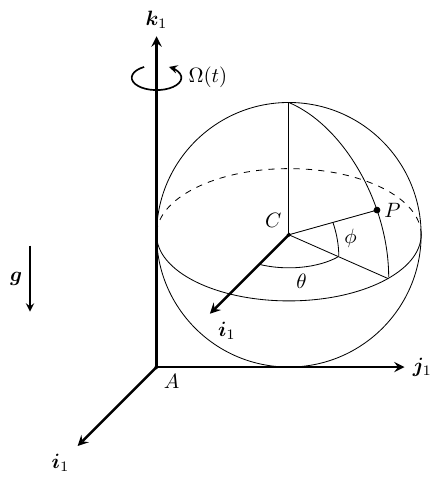
- (a)Give the expressions for the position, velocity, and acceleration vectors of $P$ with respect to $S_1$, as functions of $\theta$, $\phi$ and their derivatives. Remember that you may use any unit vectors in your solution, provided that you define them first.
- (b)Identify and write down all forces (actual and fictitious) on $P$ as seen from $S_1$.
- (c)Write down two differential equations for $\theta$ and $\phi$, free of any other unknowns.
- (d)Write down an expression for the reaction unknown. This expression may depend on $\theta, \dot{\theta}, \phi, \dot{\phi}$ and the known parameters of the problem. What is the mathematical condition for the particle to separate from the surface?
- (e)In the case that $\Omega = \text{const}$, determine and discuss the value of $\theta$, $\phi$ and the reaction unknown for the equilibrium configurations of $P$.
Worked Solution (4-Phase Methodology) [ Click to Expand ]
Physical Statement, Hypotheses & Parameters
- Physical system: a heavy particle $P$ (mass $m$) slides on the smooth inner surface of a sphere of radius $R$ and centre $C$, $\mathbf{r}_1^C = R(\mathbf{j}_1 + \mathbf{k}_1)$. The sphere is fixed in the frame $S_1 = \{A; \mathbf{i}_1, \mathbf{j}_1, \mathbf{k}_1\}$, which turns about its vertical axis $A\mathbf{k}_1$ with the known rate $\Omega(t)$. The sphere touches the rotation axis at the point $(0, 0, R)$ and the plane $z_1 = 0$ at $(0, R, 0)$.
- Why $S_1$. The constraint (the sphere) is fixed in $S_1$, so in $S_1$ the particle simply moves on a fixed sphere described by two angles; all the effect of the rotation is collected in the inertia forces (Notes Eqs. 4.62–4.63). In $S_0$ the sphere would be a moving constraint.
- Hypotheses:
- The point $A$ is fixed in an inertial frame $S_0$ (it lies on the rotation axis), so $\mathbf{v}_0^A = \mathbf{a}_0^A = \mathbf{0}$; $\mathbf{k}_1$ is the ascending vertical and gravity is $-g\,\mathbf{k}_1$ (figure).
- The surface is smooth: the reaction is normal to the sphere, along the radius $CP$. It is unilateral: the particle is inside, so the surface can only push it toward $C$.
- $\Omega(t)$ is a known function; $\dot{\Omega}(t)$ is then known too.
- Coordinates (from the figure): $\theta$ is the azimuth about the vertical through $C$, measured from the direction $\mathbf{i}_1$ toward $\mathbf{j}_1$; $\phi$ is the elevation of $CP$ above the horizontal plane through $C$. Ranges: $\theta \in (-\pi, \pi]$, $\phi \in [-\pi/2, \pi/2]$ (the poles $\phi = \pm\pi/2$ are coordinate singularities).
- Degrees of freedom: 3 coordinates minus 1 constraint $|CP| = R$: 2 DOF, $(\theta, \phi)$. The reaction adds 1 unknown, $N$.
| Symbol | Meaning | SI unit |
|---|---|---|
| $m$ | mass of $P$ | kg |
| $R$ | radius of the sphere | m |
| $g$ | gravitational acceleration | m/s$^2$ |
| $\Omega(t),\ \dot{\Omega}(t)$ | angular velocity and acceleration of $S_1$ about $\mathbf{k}_1$ | rad/s, rad/s$^2$ |
| $\theta,\ \phi$ | azimuth and elevation of $P$ seen from $C$ | rad |
| $N$ | magnitude of the reaction, $\mathbf{N} = -N\,\mathbf{u}_r$, $N \ge 0$ while in contact | N |
Reference Frames, Vector Bases & Rotation Matrices
- Frames. $S_0 = \{A; \mathbf{i}_0, \mathbf{j}_0, \mathbf{k}_0\}$ inertial, $\mathbf{k}_0 = \mathbf{k}_1$. $S_1$ turns about $\mathbf{k}_1$ through the angle $\Psi(t)$, with $\dot{\Psi} = \Omega(t)$: $$ [{}_0R_1] = \begin{pmatrix} \cos\Psi & -\sin\Psi & 0 \\ \sin\Psi & \cos\Psi & 0 \\ 0 & 0 & 1 \end{pmatrix}, \qquad \det[{}_0R_1] = \cos^2\Psi + \sin^2\Psi = 1, \qquad [{}_0R_1][{}_0R_1]^T = I $$
- Motion of $S_1$: $\boldsymbol{\omega}_{10} = \Omega\,\mathbf{k}_1$; since $\mathbf{k}_1$ is fixed in both frames, $\boldsymbol{\alpha}_{10} = \left.\frac{d\boldsymbol{\omega}_{10}}{dt}\right|_0 = \dot{\Omega}\,\mathbf{k}_1 + \Omega\,\boldsymbol{\omega}_{10}\times\mathbf{k}_1 = \dot{\Omega}\,\mathbf{k}_1$; $\mathbf{r}_0^A = \mathbf{v}_0^A = \mathbf{a}_0^A = \mathbf{0}$.
- Spherical basis at $P$ (defined in $S_1$). With the horizontal unit vector $\mathbf{e}_h = \cos\theta\,\mathbf{i}_1 + \sin\theta\,\mathbf{j}_1$: $$ \mathbf{u}_r = \cos\phi\cos\theta\,\mathbf{i}_1 + \cos\phi\sin\theta\,\mathbf{j}_1 + \sin\phi\,\mathbf{k}_1 = \cos\phi\,\mathbf{e}_h + \sin\phi\,\mathbf{k}_1 \quad (\text{from } C \text{ to } P) $$$$ \mathbf{u}_\theta = -\sin\theta\,\mathbf{i}_1 + \cos\theta\,\mathbf{j}_1 \quad (\text{horizontal, increasing } \theta) $$$$ \mathbf{u}_\phi = -\sin\phi\cos\theta\,\mathbf{i}_1 - \sin\phi\sin\theta\,\mathbf{j}_1 + \cos\phi\,\mathbf{k}_1 = -\sin\phi\,\mathbf{e}_h + \cos\phi\,\mathbf{k}_1 \quad (\text{increasing } \phi) $$Change-of-basis matrix (columns: $\mathbf{u}_r, \mathbf{u}_\theta, \mathbf{u}_\phi$ in $\mathcal{B}_1$):$$ [{}_1R_u] = \begin{pmatrix} \cos\phi\cos\theta & -\sin\theta & -\sin\phi\cos\theta \\ \cos\phi\sin\theta & \cos\theta & -\sin\phi\sin\theta \\ \sin\phi & 0 & \cos\phi \end{pmatrix} $$Checks: each column has unit norm ($\cos^2\phi(\cos^2\theta + \sin^2\theta) + \sin^2\phi = 1$, etc.); $\mathbf{u}_r\cdot\mathbf{u}_\theta = -\cos\phi\cos\theta\sin\theta + \cos\phi\sin\theta\cos\theta = 0$, $\mathbf{u}_r\cdot\mathbf{u}_\phi = -\cos\phi\sin\phi + \sin\phi\cos\phi = 0$, $\mathbf{u}_\theta\cdot\mathbf{u}_\phi = \sin\phi\sin\theta\cos\theta - \sin\phi\sin\theta\cos\theta = 0$, so $[{}_1R_u]^T[{}_1R_u] = I$. The determinant is the triple product $\det[{}_1R_u] = \mathbf{u}_r\cdot(\mathbf{u}_\theta\times\mathbf{u}_\phi)$, and $\mathbf{u}_\theta\times\mathbf{u}_\phi = -\sin\phi\,(\mathbf{u}_\theta\times\mathbf{e}_h) + \cos\phi\,(\mathbf{u}_\theta\times\mathbf{k}_1) = \sin\phi\,\mathbf{k}_1 + \cos\phi\,\mathbf{e}_h = \mathbf{u}_r$ (using $\mathbf{u}_\theta\times\mathbf{e}_h = -\mathbf{k}_1$ and $\mathbf{u}_\theta\times\mathbf{k}_1 = \mathbf{e}_h$), hence $\det[{}_1R_u] = \mathbf{u}_r\cdot\mathbf{u}_r = 1$: the triad $\{\mathbf{u}_r, \mathbf{u}_\theta, \mathbf{u}_\phi\}$ is right-handed.
- Useful inverse relations: $\mathbf{e}_h = \cos\phi\,\mathbf{u}_r - \sin\phi\,\mathbf{u}_\phi$, $\mathbf{k}_1 = \sin\phi\,\mathbf{u}_r + \cos\phi\,\mathbf{u}_\phi$, $\mathbf{i}_1 = \cos\theta\,\mathbf{e}_h - \sin\theta\,\mathbf{u}_\theta$, $\mathbf{j}_1 = \sin\theta\,\mathbf{e}_h + \cos\theta\,\mathbf{u}_\theta$; and $\mathbf{k}_1\times\mathbf{e}_h = \mathbf{u}_\theta$, $\mathbf{k}_1\times\mathbf{u}_\theta = -\mathbf{e}_h$, $\mathbf{k}_1\times\mathbf{u}_\phi = -\sin\phi\,\mathbf{u}_\theta$.
- Derivatives in $S_1$ (chain rule, $\theta$ and $\phi$ depend on $t$): $$ \left.\frac{d\mathbf{u}_r}{dt}\right|_1 = \frac{\partial\mathbf{u}_r}{\partial\theta}\dot{\theta} + \frac{\partial\mathbf{u}_r}{\partial\phi}\dot{\phi} = \dot{\theta}\cos\phi\,\mathbf{u}_\theta + \dot{\phi}\,\mathbf{u}_\phi $$$$ \left.\frac{d\mathbf{u}_\theta}{dt}\right|_1 = -\dot{\theta}\,\mathbf{e}_h = -\dot{\theta}\left(\cos\phi\,\mathbf{u}_r - \sin\phi\,\mathbf{u}_\phi\right), \qquad \left.\frac{d\mathbf{u}_\phi}{dt}\right|_1 = -\dot{\phi}\cos\phi\,\mathbf{e}_h - \sin\phi\,\dot{\theta}\,\mathbf{u}_\theta - \dot{\phi}\sin\phi\,\mathbf{k}_1 = -\dot{\phi}\,\mathbf{u}_r - \dot{\theta}\sin\phi\,\mathbf{u}_\theta $$
Step-by-Step Mathematical Deduction
(a) Position, velocity and acceleration of $P$ relative to $S_1$
In components of $\mathcal{B}_1$: $x_1 = R\cos\phi\cos\theta$, $y_1 = R(1 + \cos\phi\sin\theta)$, $z_1 = R(1 + \sin\phi)$.
Differentiating again in $S_1$ (product rule, $\frac{d}{dt}(\dot{\theta}\cos\phi) = \ddot{\theta}\cos\phi - \dot{\theta}\dot{\phi}\sin\phi$, and the basis derivatives of Phase 2):
Collecting components:
(b) Forces on $P$ seen from $S_1$
Actual forces.
- Weight: $m\mathbf{g} = -mg\,\mathbf{k}_1 = -mg\sin\phi\,\mathbf{u}_r - mg\cos\phi\,\mathbf{u}_\phi$.
- Reaction (smooth, unilateral, toward $C$): $\mathbf{N} = -N\,\mathbf{u}_r$, $N \ge 0$ while in contact.
Fictitious forces. Only the part of $\mathbf{r}_1^P$ normal to $\mathbf{k}_1$ enters the cross products with $\mathbf{k}_1$. That part is $\mathbf{r}_\perp = x_1\mathbf{i}_1 + y_1\mathbf{j}_1$; substituting $\mathbf{i}_1 = \cos\theta\,\mathbf{e}_h - \sin\theta\,\mathbf{u}_\theta$ and $\mathbf{j}_1 = \sin\theta\,\mathbf{e}_h + \cos\theta\,\mathbf{u}_\theta$:
- Origin force: $\mathbf{F}_A = -m\mathbf{a}_0^A = \mathbf{0}$.
- Euler force (Slide 31), with $\mathbf{k}_1\times\mathbf{e}_h = \mathbf{u}_\theta$, $\mathbf{k}_1\times\mathbf{u}_\theta = -\mathbf{e}_h$:
- Centrifugal force (Slide 30), $\mathbf{F}_C = m\Omega^2\mathbf{r}_\perp$:
- Coriolis force (Slide 31): $\mathbf{k}_1\times\mathbf{v}_1^P = R\dot{\theta}\cos\phi\left(-\mathbf{e}_h\right) + R\dot{\phi}\left(-\sin\phi\,\mathbf{u}_\theta\right)$, so
As required, $\mathbf{F}_{COR}\cdot\mathbf{v}_1^P = 2m\Omega R^2\left(\dot{\phi}\sin\phi\,\dot{\theta}\cos\phi - \dot{\theta}\sin\phi\cos\phi\,\dot{\phi}\right) = 0$.
(c) Two differential equations for $\theta$ and $\phi$
Projection on $\mathbf{u}_\theta$ (weight and reaction have no $\mathbf{u}_\theta$ component):
Projection on $\mathbf{u}_\phi$:
These two coupled, non-linear ODEs with the known forcing $\Omega(t)$ determine $\theta(t)$, $\phi(t)$ from the initial conditions.
(d) Reaction and separation condition
Grouping $\dot{\theta}^2 + 2\Omega\dot{\theta} + \Omega^2 = (\dot{\theta} + \Omega)^2$ in the $\cos^2\phi$ terms gives the equivalent compact form
It depends only on $\theta, \dot{\theta}, \phi, \dot{\phi}$ and the known $m, R, g, \Omega(t), \dot{\Omega}(t)$. Separation: the surface can only push ($N \ge 0$). The particle leaves the surface at the first instant at which
i.e. the motion predicted by (c) is valid only while $N \ge 0$.
(e) Equilibrium configurations for $\Omega = \text{const}$
From the $\theta$ equation: $\Omega^2\cos\theta = 0 \Rightarrow \cos\theta = 0$, so $\theta = \pi/2$ or $\theta = -\pi/2$: $P$ must lie in the vertical plane $x_1 = 0$ that contains the rotation axis and $C$ (otherwise the centrifugal force has a component $m\Omega^2R\cos\theta$ along $\mathbf{u}_\theta$ that nothing balances).
From the $\phi$ equation, multiplied by $R$: $g\cos\phi + \Omega^2R\sin\phi(\cos\phi + \sin\theta) = 0$. The poles $\cos\phi = 0$ do not satisfy it ($\Omega^2R\sin\phi\sin\theta = \pm\Omega^2R \neq 0$), so we can divide by $g\cos\phi \gt 0$. With the dimensionless number $\lambda = \Omega^2R/g \gt 0$:
Branch 1, $\theta = \pi/2$ (far side of the sphere from the axis, $y_1 = R(1 + \cos\phi) \ge R$):
The function $f(\phi) = \tan\phi + \sin\phi$ is strictly increasing on $(-\pi/2, \pi/2)$ ($f' = \sec^2\phi + \cos\phi \gt 0$), goes from $-\infty$ to $+\infty$ and vanishes at $0$; so there is exactly one root, $\phi_1 \in (-\pi/2, 0)$, below the horizontal plane of $C$.
Branch 2, $\theta = -\pi/2$ (side of the sphere next to the axis, $y_1 = R(1 - \cos\phi)$):
$h(\phi) = \tan\phi - \sin\phi$ has $h' = \sec^2\phi - \cos\phi \ge 0$ (zero only at $\phi = 0$), $h(0) = 0$ and $h \to +\infty$ as $\phi \to \pi/2$, so there is exactly one root, $\phi_2 \in (0, \pi/2)$, above the horizontal plane of $C$.
Reaction at equilibrium. With $\dot{\theta} = \dot{\phi} = \dot{\Omega} = 0$, (d) gives $N = m\Omega^2R\cos\phi(\cos\phi + \sin\theta) - mg\sin\phi$. The equilibrium relation $\Omega^2R(\cos\phi + \sin\theta) = -g\cos\phi/\sin\phi$ ($\sin\phi \neq 0$ at both roots) turns it into
This is simply the vertical balance: the centrifugal force is horizontal, so the vertical component of $\mathbf{N} = -N\mathbf{u}_r$, which is $-N\sin\phi$, must cancel the weight.
Discussion.
- Branch 1 ($\theta = \pi/2$, $\phi_1 \lt 0$): $N_1 = mg/|\sin\phi_1| \gt 0$. This is the only physically possible equilibrium. The particle sits in the lower half of the sphere, on the side away from the axis, where the inward normal $-\mathbf{u}_r$ points up and toward the axis, balancing the weight and the outward centrifugal force. As $\Omega$ grows, $\phi_1$ rises toward the equator of the sphere: for $\lambda \gg 1$, $\phi_1 \approx -g/(2\Omega^2R)$ and $N_1 \approx 2m\Omega^2R$ (the centrifugal force at distance $2R$ from the axis); for $\Omega \to 0$, $\phi_1 \to -\pi/2$ (bottom) and $N_1 \to mg$. Example ($R = 1$ m, $g = 9.81$ m/s$^2$): $\Omega = 3$ rad/s gives $\phi_1 = -30.3^\circ$ and $N_1 = 1.98\,mg$.
- Branch 2 ($\theta = -\pi/2$, $\phi_2 \gt 0$): $N_2 = -mg/\sin\phi_2 \lt 0$. It solves the equations of (c), but the reaction would have to pull the particle away from $C$, which the inner surface cannot do: it is not an admissible equilibrium for the unilateral contact (it would be one for a particle held on both sides of the surface, or resting on the outside of the sphere). On that side the centrifugal force points toward the inside of the sphere, so it cannot help the surface to hold the particle up.
- Stability of branch 1 (extension, using the energy in $S_1$). For constant $\Omega$, $A$ fixed and a smooth sphere fixed in $S_1$, the energy $E_1^P = T_1^P + V_1$ is conserved (Slides 29–31), with $V_1 = mgz_1 - \tfrac12 m\Omega^2(x_1^2 + y_1^2) = mgR(1 + \sin\phi) - \tfrac12 m\Omega^2R^2\left(1 + \cos^2\phi + 2\cos\phi\sin\theta\right)$. Its derivatives $\partial V_1/\partial\theta = -m\Omega^2R^2\cos\phi\cos\theta$ and $\partial V_1/\partial\phi = mgR\cos\phi + m\Omega^2R^2\sin\phi(\cos\phi + \sin\theta)$ reproduce the equilibrium equations. At branch 1, $\partial^2V_1/\partial\theta^2 = m\Omega^2R^2\cos\phi_1\sin\theta = m\Omega^2R^2\cos\phi_1 \gt 0$, $\partial^2V_1/\partial\theta\partial\phi = m\Omega^2R^2\sin\phi_1\cos\theta = 0$ and $\partial^2V_1/\partial\phi^2 = mgR\lambda\cos\phi_1\left(\sec^2\phi_1 + \cos\phi_1\right) \gt 0$: $V_1$ has a strict minimum, so the equilibrium is stable (the linearised equations give purely imaginary eigenvalues, see the verification).
- Case $\Omega = 0$: the $\theta$ equation is satisfied identically and the $\phi$ equation gives $\cos\phi = 0$: the bottom point $\phi = -\pi/2$ with $N = mg$ (the top point $\phi = \pi/2$ would need $N = -mg \lt 0$); $\theta$ is undefined there (pole of the coordinates).
Physical Interpretation & Dimensional Verification
- Role of each inertia force. The centrifugal force pushes $P$ away from the axis and is responsible for the tilt of the equilibrium; the Euler force (only while $\Omega$ changes) drags $P$ against the sense of the angular acceleration, along $-\mathbf{u}_\theta$-like directions; the Coriolis force couples the two angular motions (terms $2\Omega\dot{\phi}\sin\phi$ and $2\Omega\dot{\theta}\sin\phi\cos\phi$) and does no work.
- Absolute reading of $N$. In the compact form, $\dot{\theta} + \Omega$ is the absolute azimuthal rate of the particle about the vertical through $C$, so $mR\dot{\phi}^2 + mR\cos^2\phi(\dot{\theta} + \Omega)^2$ is the centripetal demand of the absolute motion on the sphere.
- Limit $\Omega \to 0$: the equations reduce to those of the spherical pendulum, $\ddot{\theta}\cos\phi - 2\dot{\theta}\dot{\phi}\sin\phi = 0$ and $\ddot{\phi} + \dot{\theta}^2\sin\phi\cos\phi + (g/R)\cos\phi = 0$, and $N = mR(\dot{\phi}^2 + \dot{\theta}^2\cos^2\phi) - mg\sin\phi$.
- Dimensions: in (c) every term is $\text{s}^{-2}$ ($[\ddot{\theta}] = [\Omega^2] = [\dot{\Omega}] = [\Omega\dot{\phi}] = [g/R] = \text{s}^{-2}$); in (d) every term is $\text{kg}\,\text{m}\,\text{s}^{-2} = \text{N}$; $\lambda = \Omega^2R/g$ is dimensionless.
- Verification (sympy,
verify_P51.py): with a general $\Psi(t)$, $\dot{\Psi} = \Omega(t)$, the inertial double derivative of $[{}_0R_1]\{\mathbf{r}_1^P\}$ equals the Notes Eq. 3.27 decomposition; solving $m\mathbf{a}_0^P = -mg\mathbf{k}_1 - N\mathbf{u}_r$ in $S_0$ returns exactly the two equations of (c) and the $N$ of (d); for $\Omega = 1, 3, 10$ rad/s ($R = 1$ m) both branches satisfy the equations with $N = -mg/\sin\phi$, branch 1 has $N \gt 0$ and purely imaginary eigenvalues, branch 2 has $N \lt 0$. No official key exists for this problem.